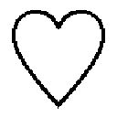

| 専務が私を追ってくる！ (ベリーズ文庫) | |
| 坂井志緒 | |
| (2016) | |
専務が私を追ってくる！
坂井志緒
六本木通り沿い、西麻布郵便局近くのバーのカウンターで、キレイなオレンジ色のカクテルを飲んでいた。
心地よいボサノヴァのリズム。数分に一度、微かなクラクションの音が聞こえる。
ふと予感めいたものを感じて右に目を向けると、カウンターの右端にいる同世代の男が、物憂げに頬杖をついてタバコの煙を吐き出していた。
あ、カッコいい。
口に出してはいないが、そう思ったタイミングで男もこちらを向いた。
私は左端の席に座っており、彼とは二メートルほどの距離がある。しかし、私たちの間には誰も座っていないため、彼の視線は必然的に私へと注がれる。
濃紺のスーツを着たその男は、横顔だけじゃなく、正面から見てもカッコよかった。小振りだけどまっすぐで高い鼻と、キュッと締まりのある艶やかな唇。深い二重の瞳に、私は吸い込まれてしまうかと思った。
その顔立ち、タバコを挟んでいる指、座っている姿勢、スーツの着こなし。この目で見えるすべての部分が、私にはドストライクだった。
私の熱い視線に気づいて、〝ん？〟と笑顔で首を傾げる。物憂げだった顔は甘味のある優しい表情に一変して、そのギャップが再び私の心を打ち抜いた。
ひと目惚れとは、こういうことを言うのだろうか。
「ごめんなさい。見とれてました」
正直にそう告げると、彼は一瞬目を見開いて、そのあとすぐに照れながら恥ずかしそうに笑った。
「そんなこと言われたの、初めてですよ」
これが彼との〝本当の〟出会いである。
「おひとりですか？」
「はい。お姉さんも？」
「はい」
私たちはそれをきっかけに自然に話を始め、すぐに打ち解けた。彼が私の横の席に来た頃には、話し方も砕けていた。
「西麻布にはよく来るの？」
「うん。ストレスがたまったりすると、こういうところで飲みたくなるの。都内に住んでるんだけど、今日は女ひとりで赤坂にホテルまで取ってる」
「はは、がっつり飲む気だ」
「そんなには、飲めないんだけどね。お兄さんもよく来るの？」
「俺はたまたま。根が田舎者だから、麻布とか六本木とか、実は苦手なんだ」
笑うと目尻が下がり、涙袋がふっくらとして、幼く見えるところもいい。シャンディー・ガフのグラスをつかむ手の、血管が浮き出ている甲もいい。タバコのフィルターを挟む、太い指もいい。
男らしいけど男すぎない。モテそうだけど、チャラチャラはしていない。物腰が柔らかくて、雰囲気が温かい。
楽しい時間を重ねていると、話はだんだんプライベートな内容に移っていく。
「ねぇ、名前は？」
彼は私をじっと見つめながら尋ねた。
「ミキ。お兄さんは？」
私はそう答え、ワイン・クーラーをひと口。
「俺はオサム。仕事は何してるの？」
彼は手元のシャンディー・ガフには目もくれず、少しこちらに身を乗り出している。
「何って言われると微妙だけど、一応肩書きは秘書」
先日辞めてしまったが、とは言わないでおいた。
「えっ、マジ？ どうりで頭のてっぺんから爪の先までキレイなはずだ」
彼は私の期待以上に感心してくれている。
やっぱり秘書というブランドは便利だ。
「ありがとう。でも秘書なんて聞こえがいいだけで、仕事は事務と雑用ばっかりよ」
「そうなの？ 会社や上層部の機密情報とか、たくさん扱ってそうだけど」
「うちではそういうのは別の人たちが扱ってるから、やりがいないのよ」
私がおどけて言うと、彼はいっそう興味を持ったように目をキラキラさせた。
「へぇ、イメージと違ったな。それで、例えばどんな仕事をするの？」
嬉しそうに食いついてくる彼。
「一日の始まりは、掃除から。床や窓は清掃の人がやってくれるんだけど、デスクや棚は私たちしか触っちゃいけない決まりになってるの。それから......」
〝華やかだと思われがちだけど、地味な仕事ばかり〟という話は、私の経験上、わりと男性にウケる。これまでも気のある男性と話す時は幾度となくこの話をしたが、彼は今までの誰よりも興味深そうに聞いてくれた。
もしかしたら、秘書をつけられるような役職を、本気で目指しているのかもしれない。なんとなくそんな印象を受けた。
「あなたみたいにカッコいい重役なら、もっと張り切って働くんだけどね」
私はとびきりの笑顔でそう言った。
「ほんと？ じゃあ俺、出世してミキちゃんを秘書にスカウトしようかな」
さっき右端の席でアンニュイな表情をしていたのが嘘のように、明るい表情をしている。声をあげて笑う時の少年のような顔もいい。アルコールの効果で頬を染めた、色っぽい顔付きもたまらない。
この人のすべてがキラキラして見える。
「うん。その時はぜひ、専属でお願いします」
「もちろん。ほかのヤツなんかに渡さないよ」
こんな素敵な人と、こんなに楽しい話ができるなんて。今夜はなんていい夜なの。
私、結構酔ったかも。そう自覚した頃には、彼をすっかり好きになっていた。
だから――。
「今夜泊まる部屋、夜景がすっごくキレイなんだ」
「へぇ、いいね」
私は頬杖をついたまま上目遣いで彼をじっと見つめ、表情に恥じらいを交えて、彼だけに聞こえる声で告げた。
「よかったら、遊びに来ない？」
こんな思い切ったことを、自分から言ったのは初めてだ。
「それって、そういう意味で誘ってる......とか、都合のいいこと考えちゃうよ？」
彼は私の言葉を冗談と捉えたのか、子供っぽい笑みを浮かべている。
だから私はちょっと悔しくなって、もう少しだけ思い切ってみる。
「私じゃ、ダメかな？」
私の本気を悟った彼は驚いた顔をして、火を点けて間もないタバコを灰皿に押しつけた。
「ダメなわけない。逆だよ。俺でいいの？」
「あなたが、いいの」
バーから赤坂のホテルまで、タクシーを使った。タクシーに乗っている間、私たちはずっと手を繋いでいた。
ホテルに到着してエレベーターに乗り込むと、監視カメラがあるにもかかわらず、扉が開くまでずっとキスを交わした。部屋まで我慢できなかった。部屋に入るやいなや、照明も点けず、窓から得られる光を頼りにベッドへ。
初めて会ったばかりの人と、こんなこと......。
頭の片隅でそう思うけれど、彼を求める気持ちが止まらない。
胸が痛いくらいにドキドキして、その振動が体中に響く。こんなに密着しているのだから、きっと彼にも伝わっているはずだ。
自分が熱い。触れている彼の体も熱い。彼も私を強く求めてくれているのだとわかって、胸がかきむしられるような感覚がした。
もっと彼の熱を感じたくてギュッと抱き寄せると、なんとも形容しがたい〝いいにおい〟がした。香水や柔軟剤の香りなどとは違う、彼自身のにおいだ。
目が暗さに慣れてくると、窓からの光だけでも彼がよく見えるようになった。物憂げな表情とも甘い笑顔とも異なる、息を呑むほど色っぽい男の顔。
私は彼の目にどう映っているのだろう。微かな光だけど、少しでも魅力的に照らしてくれていますように。
言葉は多く交わさない。お互いの吐息と布がこすれる音。それにだんだん水気を含む音が交じってくると、自分の鼻にかかった声が部屋に響くようになる。
「かわいい」
彼に与えられる快感に溺れていた私の気のせいかもしれないけれど、彼は心底愛しそうな声でそう言ってくれた。
私はこの人のことを、そしてこの夜のことを、一生忘れないだろうと思った。
夜景のキレイなこの部屋は、本当は自分ひとりのために取った。〝最後の思い出〟として、東京の街を眺めるために。
恋なんてするつもりなかったのに、まさか最後の日にこんな人と出会うなんて。もっと早く出会っていれば、私の考えは変わっていたかもしれない。
だけどもう、今さら後戻りはできないのだ。
明朝未明、私は一睡もせずに体を起こした。
隣でぐっすり眠る彼が目覚めないよう、静かに身支度をして、クローゼットに収めていたキャリーケースを取り出す。ホテルの床はカーペットだ。音がガラガラ響かなくてありがたい。
私は最後に、電話のそばにあったメモ帳に『ありがとう』としたため、静かに部屋を出た。
脱出は成功した。しかし私はひとつ、大きなミスを犯してしまっていた。
酒に酔っていたせいか、それとも彼との戯れに余裕が持てなかったせいか。昨夜、自分がなんと名乗ったかうろ覚えで、置き手紙に『ミカ』と書いてしまったのだ。
偽名を使ったのは、彼に本当の私を知られたくなかったからだ。本当の私を知って、幻滅されたくなかった。
自分を偽るにしたって、名前まで変えなくてもよかったのかもしれない。だけど、本名で呼ばれてしまうと、つい素を見せてしまいそうだったから。
私が間違いに気づいたのは羽田に着いてからだったし、もう彼に会うこともない。私を『ミキ』だと認識している彼は、偽名に気づいて驚いてしまうかもしれないが、それも晩秋の思い出として、私の存在とともに忘れてくれていい。
私は東京最後の恋を胸に刻み、遥か西、九州のとある県へ向かう飛行機に搭乗した。
私、郡山美穂は、ひどく嫌な女だ。自らを高貴な人間だと思い込み、そのように振る舞う快感に溺れている、愚かな人間だ。
自分の気高さをほかに見せつけるため、分不相応なブランド品や宝飾品を定期的に買いあさり、豊かであることをアピールし続けることを生きがいにしていた。
ドラマや小説なら間違いなく、嫌われ者の悪女の役回りである。
自らの保身のため、あるいは見栄を張るために嘘をつくことなんて日常茶飯事。自分よりも劣っているとみなした者には大きな態度で接していたし、優れていると判断した者には思い切り媚びを売った。気に入らない女がいたら陰口を叩き、気に入った男がいたら大いに色目を使った。
呆れるほどに見事な性悪ぶり。我ながらあっぱれだと思うのは、この歳になるまで自分の性格の悪さに全く気づかなかったことだ。
数ヶ月前、二十八歳の誕生日。私は当時付き合っていた彼に突然、別れを告げられた。
何がきっかけだったのかは、今でもわからない。だけど彼は、私にハッキリこう言った。
『その性格、直したほうがいいよ。親切のつもりで言うけど、美穂、すげー性格悪いからさ』
まるで落とし穴にでも落とされたような、大きなショックと驚き。自分の性格が悪いだなんて、そんな発想がなかったのだ。
彼の言葉で、ようやく自分が嫌な女であると気づいた私は、どうしようもない危機感にさいなまれた。
私はこのまま、嫌な女として人生を歩んでいくのだろうか。自分の快感のために人に嫌われるような真似ばかりして、幸せになれるのだろうか。今のままでは、きっとなれない。
考えがそこに到達すると、次に導かれる答えは明白だ。
「自分を変えなければ」
しかし、二十八年もの間、必死で構築してきた郡山美穂という人間は、生まれ育った東京に根を張りすぎていた。私を取り巻く環境が嫌な私に馴染みすぎていて、自分を急には変えられなかったのだ。
そんな私の誕生日から二週間後、元気だった母方の祖母が、突然亡くなった。
すると、母方の親戚が空いてしまった実家をどうするかということで揉め始めた。
祖父は何年か前に亡くなっており、そこには祖母ひとりで住んでいた。祖母の子は女ばかりで、各々県内外に嫁いでしまっている。
家は十五年前にリノベーションしたあと、祖父母がキレイに使っていたから、取り壊すにはもったいない。
誰かに貸すなら畳や板を張り替えたほうがよさそうだが、誰がその費用を出すのか。残っている家電もまだ使えるが、処分するにも費用がかかる。面倒だから手放すのも手だが、実家がなくなるのは寂しい。
通夜、祖母の遺影の前で母と叔母たちがグダグダ言い合っているのを横目に、私はあることをひらめいた。
私は東京では自分を変えられなかった。だけど、私を知る人のいないこの地でなら、それができるかもしれない。今の仕事は辞めることになるけれど、新しくこの地で探せばいい。ここには住む家だってある。
これはきっと、祖母が私にもたらしてくれた、千載一遇のチャンスだ。
「だったらこの家、私にちょうだい」
私の言葉に親戚一同は驚いていたが、その後は何もかもがスムーズに進んだ。
それから二ヶ月。
会社を辞め、一夜の恋に溺れ、飛行機に乗って。とある西のほうの県にある野臼市にて、私の新生活は幕を開けた。
自分を変えるための三原則は以下の通りだ。
・着飾らない
・外食しない
・恋愛しない
自分が高貴な人間だと勘違いするのを防ぐには、女としての自信を排除しなければならない。そのためには、前述の三原則が不可欠なのだ。私は私を充実させてはいけない。
着飾ることを禁止したのは、それが直接自信に繋がるからだ。バッチリメイクを施せば、自分はキレイだと思ってしまうし、お気に入りの衣類を身につければ、自分が素敵な人間になった気になってしまう。
着飾らないために、ブランド物の服や靴、バッグ、アクセサリーをひとつの部屋にまとめて封印し、その部屋を〝開かずの間〟と名づけた。そして、新たにシンプルで落ち着いた衣類を最低限揃えた。
ネイルもやめた。まつ毛エクステもやめた。コンタクトもやめてメガネにした。髪色もトーンダウンして、髪型もウェーブからストレートに変えた。メイクはファンデーションとアイブロー、そしてリップだけ。
すると、知り合いが見ても私だとは気づかれない、と思えるくらい地味になった。でも、これでいいのだ。見た目でこれくらい変わらないと、中身は変えられない。
外食を禁止したのは、節約という面もあるけれど、贅沢な食事を楽しむことで充実感を得ないためだ。自宅では味わえないプロの料理がもたらしてくれる幸福感は、素晴らしい。
だけど私はそれに浸って、そんな料理をいただける自分は高貴であると、簡単に勘違いしてしまう。
これまでずっと実家暮らしだったため、今はろくに料理などできないけれど、食事は自炊をすることに決めた。レシピはネットや本を見て、これから覚えようと思っている。
恋愛を禁止したのは、恋をすると必然的に着飾りたくなるし、目当ての人と食事に行きたくなるからだ。
着飾りもせず、食事の誘いにも乗らない女を相手にする男なんていないだろうから、きっと縁などないだろうけれど。
仕事は地味だけど、長く続けられそうなものを探した。制服支給の事務職で、正社員。土地勘がないため、職場は自宅から近いのが望ましい。
ハローワークでこのように相談すると、該当する会社が一社だけあった。
野臼市に本社をかまえる民間のバス会社、東峰バス。バス事業だけでなく、ホテルやショッピング施設、広告事業などもやっていて、従業員数は千五百人を超える、県内ではまあまあ大きい会社だという。
面接は人事の人たち三人と社長を相手に、四対一で行われた。大きい会社の社長ということで怖そうな人なのかと想像していたけど、小柄で温厚そうな人だっだ。年齢は私の両親と同年代くらいだろうか。
そんな社長が、私の履歴書とおぼしき書類を眺めながら言った。
「江森町か。最寄りのバス停は江森西？ それとも東？」
「西のほうです。ご存知なんですね」
私が笑顔を向けると、社長もニッコリ微笑んでくれる。とても感じのいい社長だ。
「昔、江森西バス停の近くに好きだった子が住んでてね。青春の思い出だよ」
「素敵ですね。実は今の住まいは、母の実家なんです。お相手の方、もしかしたら母も存じているかもしれませんね」
世間は狭いというけれど、もしそうだったらすごいな。母と社長はきっと同年代だろうから、もしかしたら母と社長だって知り合いかもしれない。
そう思ったのは、社長も同じだったようだ。
「君のお母さん、旧姓は？」
「本田です」
「ええっ？ もしかして、佳子ちゃん？」
「えっ、そうです。母は佳子です！」
なんという素敵な偶然なのだろう。社長と母は高校の同級生だったことが判明し、私は初恋の人の娘ということで、すっかり気に入られて採用が決定した。
その二週間後、年明けの十日に東峰バスに入社。路線バス事業部の地味で平凡な事務員として、新しい私をスタートさせることに成功した。
何も知らない業界の仕事やこの地方の方言、ほとんどやったことのない家事を覚えるのは大変だ。だけど以前のように美しさや裕福さを躍起になって競ったり、勝つために多くのお金とエネルギーをつぎ込んだりすることに比べれば、なんてことない。
この土地では、そしてこの会社では、争わなくていい。繕わなくていい。嫌な自分になって、他人を攻撃したり自分を保護したり、しなくてもいいのだ。
このままここで穏やかに暮らせば、きっと私の性格も改善していくだろう。私を知る人がいない土地へ、思い切って移住して正解だった。
私はまだ新人なので、任される仕事内容は単純なものが多い。お客さまからの電話を受けたり、先輩に頼まれた書類を作成したりすることで、まずは大体の業務の流れを覚えていく。
仕事を教えてくれたのは、私より三つ年下で入社五年目の女性だ。気さくな人柄で仕事だけではなく、この県や野臼市のこともいろいろ教えてくれる。
仕事は無理せず覚えられて、おおかた定時に終えられる。
入社から一ヶ月くらいはミスをして上司に怒られてしまうこともあったけれど、二ヶ月目からは少しずつ仕事に自信が持てるようになった。気持ちに余裕ができたので、三ヶ月目に突入した頃には、毎日弁当を作って持っていけるようにもなった。
目標としていた、穏やかで質素な、落ち着いた生活ができている。私はきっと、幸せへの糸口をつかんだのだ。
入社から約三ヶ月が経とうという三月末日、私は社長直々に呼び出された。なんの前触れもなく突然だったので、一体何をやらかしてしまったのだろう、とビクビクしながら、五階にある社長室へと向かう。
東峰バス株式会社の本社は、五階建てだ。一階はバスターミナル、二階と三階はショッピング施設になっている。四階が事務所や資料倉庫で、五階には社長室、副社長室、専務室、そして会議室がある。
立ち入ったことはないが、屋上はヘリポートになっているという噂だ。あくまで噂であり、見たことはないけれど。
社長室の扉の前まで来ると、いったん立ち止まって深呼吸。
そして少し強めにノックをすると、想像よりずっと音が響いた。
「はい」
扉の奥から聞き慣れない男性の声がした。社長の声ではない。
「路線バス事業部の郡山です」
「どうぞ」
許可を得て、ドアノブに手をかける。思ったよりずっと軽く開いた。
「失礼いたします。お呼びでしょうか、社長」
室内にいたのは、社長の雨宮卓氏と社長秘書の園枝康祐氏だ。
園枝さんは四十歳くらいのクールな男性で、品のいいスーツをカッコよく着こなしている。ノックの返事をしてくれたのは、彼だったようだ。
ダークなインテリアでまとめられている社長室は、四階の事務所と比べると威圧感がある。
社長はいつものように優しい笑顔を浮かべているが、少し怖い。
「美穂ちゃん。どうぞ座って」
社長は私を気に入ってくれているのか、〝美穂ちゃん〟と呼ぶ。もちろんあまりお会いする機会はないし、ほかの社員の前では〝郡山さん〟と呼んでくださるのだが、これほどの会社の社長にそう呼ばれるのは、さすがに恐縮である。
「失礼します」
お言葉に甘えてソファに腰を下ろす。この部屋と〝美穂ちゃん〟という呼び名があまりにミスマッチで、私はますます恐縮した。
彼らはピカピカのテーブルを挟んだ、向かい側に座った。
園枝さんは書類を数枚持っている。彼の真剣な表情から、何か重要な話があるのだと察して緊張感が増す。
「郡山さんに、折り入ってお願いしたい仕事があります」
話を始めたのは園枝さんだった。
社長は変わらずにこやかなので、どんな気持ちで話を聞いていいのかわからず、落ち着かない。
とりあえず、私が何かやらかしたわけではないようだ。
「どんなお仕事でしょうか？」
遠慮がちに問うと、園枝さんはメガネをクイッと上げた。
「新しくいらっしゃる専務の、専属秘書です。本日来社予定ですが、入社と就任は明日、四月一日からになります」
まさかの言葉に、心臓がドクッと嫌な感じに跳ねた。
「秘書......ですか」
「郡山さんは秘書の経験がおありでしたので、適任かと思いまして」
園枝さんは淡々と告げる。
この場で率直には言えないけれど、正直、やりたくない。せっかく新しい仕事で今までと違う自分を演出できていたのに。前と同じ仕事をするなんて、嫌な女だった頃の自分に戻ってしまいそうで怖い。
私は社長の微笑みをチラッと見て、すぐにクールな園枝さんに視線を戻した。こういう時、社長が母の知り合いだとやりづらい。
「そう言っていただけるのは光栄なのですが......。まだこの会社に来たばかりで何も知らない私に、秘書なんて務まるでしょうか。専務だって、新しくいらっしゃるんですよね。新人同士にするよりも、会社をよくご存知の方にお任せしたほうがいいのではないかと思うのですが......」
控えめに反論すると、社長は豪快に笑って拍手をし始めた。
私はわけがわからず、ポカンと社長の顔を見る。
「さすがだね。もっともだ。でも美穂ちゃん。僕たちは決して、秘書経験があるというだけで君を選んだわけじゃないんだよ。ね、園枝くん」
園枝さんはコクリと頷き、再び私を見据えた。
「郡山さんは、冷静な判断ができるし、上司が相手でも論理的に話をする力があります。それに、あなたはまだ新人ですから、重要な仕事はまだ任されていない。新人であることが、逆にベストなのですよ」
彼はそう言って、軽く口角を上げる。
逆にベスト......。さすがはやり手と名高い園枝さん。私の主張を逆手に取ってきた。
褒められるのは素直に嬉しいけれど、気が重い。秘書をやるなら、やはり見た目にも気を遣うべきなのだろうか。せっかく着飾りたい欲求を抑えることにも慣れてきたのに。
私の不安を察した社長が優しく微笑む。
「なに、仕事はスケジュール管理や経費の精算、書類の確認と署名の催促、あとは雑用かな。秘書っていうより専属事務員って感じだから制服で大丈夫だし、今とあんまり変わらないよ」
それなら助かった。制服でいいなら着飾る必要はない。
「そうですか......。それなら、私でもお役に立てそうですね」
諦めを含んだ笑みで返す。自分に課した三原則が守られるなら、きっと大丈夫。
「専務とは歳も近いし、話も合うんじゃないかな」
「ずいぶんお若い専務なんですね」
意外だった。専務というくらいだから、ずっと年上だと思っていたのに。
「僕の息子なんだ。今三十歳。ちなみにまだ独身」
なるほど、つまり次期社長。跡取り息子ってわけか。......ますますプレッシャーなんですけど。
全く仕事のできないボンボンだったらどうしよう。今の生活には、心に余裕があることが一番大事なのに。
社長が再び、私の不安を見透かしたように言う。
「親バカってわけじゃないけど、仕事はまあまあデキる男だよ。うちに置いておくと妻が甘やかすもんで、大学から東京に出したんだけど、すっかり都会に居着いてしまってね。三十になって、ようやく会社を手伝う気になってくれたんだよ」
社長は嬉しそうだ。息子がこの会社に来るのを、よほど楽しみにしていたのだろう。
「それにしてもあいつ、遅いな。三時半には会社に着くとか言ってたのに」
「飛行機が遅れたという情報はありません。バスの時間からして、そろそろ会社には着く頃だと思うのですが......」
などと社長と園枝さんが話し始めた時、コンコンと私の背後でノックの音がした。無礼にも、彼らの返事を待たずに扉が開く音がする。
しかし、顔を上げた社長と園枝さんは笑顔を浮かべた。
「おお、来たか！」
「『来たか』じゃねーよ、親父。話が急すぎだろ」
聞こえてきたその声に、聞き覚えがあった。
「俺は昨日まで別の会社で働いてたんだぞ。送別会と引越しでほとんど寝てねーし、二日酔いだし、少しくらい休ませろっての」
会社のトップに対してとんでもないことをまくし立てながら、私が座っているソファの真後ろまで来た彼を、恐る恐る見上げる。
まっすぐに社長を睨みつけているその顔に、見覚えがあった。
「落ち着け、修。女性の前だぞ」
オサム......！
名前を聞いた瞬間、私の頭は真っ白になった。こんなことが起こるなんて、とうとう神さまは私を見限ったのかもしれない。
今私の真後ろに立っているのは、西麻布で出会い、赤坂のホテルで熱を交わした、あの男だったのだ。
私は慌てて顔を逸らした。まだ顔は見られていないはずだ。
「おわっ！ 人がいる！ すみません、失礼しました」
修が私に気づいて慌てて謝るが、私は失礼を承知で顔を背けたまま応える。
「い、いえ......おかまいなく」
どうしよう、どうしよう、どうしよう！ 気まずすぎる。だって私が彼に対して行ったのは、いわゆる〝ヤリ逃げ〟だ。まさか、まさかこの人が......？
「郡山さん、紹介します。こちらが新しく来られた専務です」
やっぱり......！
園枝さんに名前を呼ばれたので、私は諦めて立ち上がった。覚悟を決めてグッと息を止め、ピッとメガネを上げて彼と対面する。
私を見て、彼はどんな顔をするだろうか。あの日の女だと知って、驚いて怒るだろうか。それとも、笑って許してくれるだろうか。
修はあの日と同じ濃紺のスーツで、小振りだがまっすぐで高い鼻とキュッと締まりのある艶やかな唇、そして深い二重の瞼を携えていた。
ああ、やっぱりカッコいい。
「明日より秘書を務めさせていただきます、郡山美穂と申します」
腰をきっちり三十度に折り、頭を下げる。動揺で手足が震えた。
私を見て、彼は一体何を言うのだろう。
恐る恐る頭を上げると、彼はニッコリと笑った。
「あ、どうも、初めまして。明日から専務の、雨宮 修です」
......え？ 初めまして？ もしかしてこの人、気づいていない？ あっ、そうか。私はあの時とは見た目も名前も違う。
会ったのは一回だけ、出会ってから彼が眠るまでの約七時間。それから四ヶ月以上経過しているから、きっと記憶も薄れているのだ。
よかった！ 神さまは私を見放してはいなかった！
とりあえず今は、忘れられていた幸運に感謝して逃げよう。
「私、そろそろ仕事に戻りたいと思いますので、今日はこれで失礼します」
私は三人に向けてきっちりとお辞儀をして、そそくさと社長室をあとにする。扉を素早く静かに閉め、その場で深く深くため息をついた。
ビックリした......。まさかあの人と再会してしまうなんて。ひいてはこれから毎日一緒に働くことになるなんて。
頭の中で、あの日の夜がリプレイされる。
思わず見とれた横顔、真顔とはギャップのある笑顔、大きくて温かかった手。エレベーターの中で抱きしめてくれた時の力強い腕、期待を裏切ることなく柔らかくて心地よかった唇。
封じ込めていた恋心が疼き、慌てて思い出すのをやめた。恋愛は禁止だ。
扉越しに、微かに会話が聞こえてきた。
「俺、もっと美人な秘書がよかった」
......聞こえてますけど。
「美穂ちゃん、かわいいじゃないか」
「なんか地味じゃねえ？ 秘書っぽくないし」
ごめんなさいね、わざとなんですよ。
いけない。キレイだとか、かわいいとか、高評価でないと怒りを感じる悪いクセが発動している。彼が正しい。私は地味だし、秘書らしくない。
こうして自発的にプライドを打ち砕いていかないと、私は簡単に嫌な女に戻ってしまう。
「彼女は元秘書ですよ。専務は秘書に妄想を抱きすぎです」
「園枝さん、今さら敬語使わなくていいよ。専務とか呼ばれるのも恥ずかしい」
「仕事中は昔のように接するわけにはいきません」
私は三人の会話を聞きながらもう一度深呼吸をして、四階の事務所へ戻った。
翌朝、私は出社するなり専務室に行くよう指示された。
いつからかは知らないが、前専務は入院しているとかで、実質、昨日まで専務は不在だった。そのため、専務室が使われているのを見るのは初めてだ。
専務室は少し前から新専務のためにリフォームをしていたようで、昨日も社長室に伺った時、業者の人が数人出入りしているのを見た。近づくと、だんだん新しい部屋のにおいがしてくる。
開いているドアから中を覗いてみた。
天井と壁三面は白の壁紙が貼られており、扉から見て右の一面のみダークブラウンの木目調。
全開にされているこのドアも同じ色柄で、鍵付きのレバーハンドルはマットなシルバー。縦に長く幅十五センチほどの磨りガラスがはめ込まれた、シックなデザインだ。リフォームの際、一緒に取り替えたのだろう。
床のカーペットは濃いアイボリーで、壁の木目と平行に柄が入っている。部屋全体が若専務らしいモダンなテイストに仕上がっている。
天井にはエアコンとダウンライトが埋め込まれており、暖色の明かりが段ボールや発泡スチロールなどの梱包用品で散らかっている部屋を照らす。もう少し日が高くなれば、部屋全体がもっと明るくなるだろう。
「あ、郡山さん。おはよー」
ジャージ姿の修が、私に気づいてこちらを向いた。首にタオルを巻き、軍手をはめた手には工具が握られている。
「おはようございます、専務。あの、何をなさっているんでしょうか」
控えめに尋ねると、彼は得意げに微笑んで握っているドライバーを私に見せた。
「俺の椅子作ってんの。内装にこだわりすぎて、予算的に組み立て式の椅子しか買えなかったからさー。郡山さんのも作るよ」
「えっ？ 私のですか？」
嫌な予感がして、顔が引きつる。
「うん。だって今日からこの部屋で仕事するんだし、デスクもインテリアに合うやつ買っといた。今日中に届くはず」
『嘘でしょ？』と言いかけて、なんとかこらえた。
専属秘書だからって、必ずしも役員と一緒の部屋で働く必要はない。前職では、秘書は秘書室で仕事をしていた。
「私は事務所で充分です。部屋とご予算は専務のためだけに使ってください」
無理、無理、無理、無理！ 一緒の部屋で働くなんて、正体がバレちゃう！
「何言ってんの。この部屋をメインで使うのは郡山さんだよ？」
「え？ 私ですか？」
「専務なんて仰々しい肩書きがついてるけど、俺は所詮、大口担当の営業マン。県内外を飛び回るから、この部屋で仕事する時間なんてほとんどないよ」
最後のキャスターを取りつけてでき上がった椅子を立て、満足げに笑った修。目尻が下がり、涙袋がふっくらとする。あの夜と同じ笑顔だ。
ああもう、カッコいいなぁ......。意に反して胸がときめいてしまう。
彼といる時間が少ないという点はありがたい。今はまだ、私があの時の女だと気づかれていないけれど、長く一緒にいれば、いずれバレてしまうかもしれない。
彼があまりこの部屋にいないということは、その可能性が減ったということだ。そうプラスに考えよう。
「お手伝いします。私にできることはなんでしょうか」
私はようやく専務室に足を踏み入れた。
「そうだね、とりあえず段ボールとか袋とか、ゴミ捨てをお願いしようかな」
彼の周囲は大量の梱包材で散らかっており、せっかくのモダンな部屋を台無しにしている。特に今、椅子が置かれている辺りは、ビニールで足を滑らせてしまいそう。
「承知いたしました。道具を取ってまいります」
「よろしくー」
未完成の専務室には、ほとんど備品がない。
紐やハサミを拝借するため、事務所へ向かう。五階から四階までは、エレベーターを待つより階段を利用したほうが早い。エレベーターの前を通過し、階段へ。
すると踊り場のほうから人の話し声が聞こえて、私は思わず足を止めた。その声のトーンから、内緒話であることがわかったからだ。
「俺らより年下だろ、あの専務」
専務というキーワードに、ドキッとした。あの専務とは当然、雨宮 修のことである。
ヒールで足音が響かないよう、聞き耳を立てたままゆっくり壁に隠れる。盗み聞きなんて趣味が悪いかもしれないけど、彼の話題となれば聞かずにはいられない。
「社長のご子息さまだってさ。まともに仕事できんのかよ」
「どうだかね。おぼっちゃまだもんな。今まで何やってたんだっけ」
「知らね。東京で遊んでたんじゃねーの？ 見かねて社長が連れ戻した、って噂だぞ」
声から判断するに、経理課の人たちだ。当たり前だけれど、社長の息子というだけで、専務の椅子に座る修をよく思わない者もいる。
私だって、昨日、社長の話を聞いた時は同じようなことを思った。
一般社員にとって、重役の悪口はコミュニケーションツールのひとつである。下世話だけれど、〝噂〟だとか〝らしい〟とつければ、想像でものを言ってもある程度は許される。うっぷんを晴らせさえすれば、それが真実かどうかなんて、あまり重要ではないのだ。
私が前に勤めていた会社でだって、役員は陰口やよくない噂の格好の的だった。程度の差はあれ、そうなるのは自然の摂理だと思っている。
しかし、私が彼の専属だからだろうか。それとも、もっと別の感情があるからだろうか。妙に複雑な......いや、すごく嫌な気持ちだ。
彼らはまだ何か話していたが、私はエレベーターを利用することにして、静かに階段を離れた。下りのボタンを押し、艶のある扉に映る自分の足元をぼんやり眺めながら、さっき聞いた陰口のことを考えていた。
四階の事務所の人たちは、みんな同じように思っているのだろうか。ほかの営業所の従業員は？ バスの運転手たちは？ もしかしたら修は今、敵だらけの状態で専務という要職に就いているのかもしれない。
チャイムが鳴り、エレベーターの扉が開く。
うつむいたまま、フラフラと足を進めると、ドンと何かにぶつかってしまった。ドンというよりはボヨン、だった気もする。
ハッとして顔を上げると、私がぶつかったのは北野一郎副社長だった。小柄でスリムな社長とは打って変わって、副社長はとても大柄。身長は一八〇センチ超え、体重は一〇〇キロ超えというビッグなお方だ。
彼は二十五年前、今の社長とともに会社の危機を救った英雄だと言われている。もともとは銀行員で、金融機関とのパイプをたくさん持っているのだとか。年齢は社長より三歳下らしいけれど、見た目だけで言えば副社長のほうが風格がある。
「副社長！ 大変失礼しました」
慌てて謝ると、副社長は逆に「大丈夫？」と笑ってくれた。
「ぼんやりして、どうしたの？」
「ちょっと業務のことで考え事を......。すみません」
「修くんのことかな？」
図星を突かれ、苦笑いが漏れた。
私が修の秘書であると、副社長はもうご存知のようだ。
「はい......」
「彼のことは小さい頃から知っているし、困ったことがあったら相談してくれていいからね」
「恐れ入ります」
私が頭を下げると副社長は笑顔で手を振り、社長室と専務室の間にある副社長室へと入っていった。体だけでなく、器も大きくていらっしゃる。
社長も副社長も優しいし、修に正体がバレさえしなければ、楽しく働けるような気がした。
私と修はこの日、ずっと部屋作りをしていた。
椅子だけでなく棚も組み立てるタイプで、私もドライバーを握って作業に没頭する。引っ越してきた時、ずっと似たような作業をやったばかりだったから、我ながら手慣れたものだ。
このまま、どんどん仕上げてしまいたい。さっさと作業を終えて帰りたい。
しかし修はそれを邪魔するかのように、際どい質問をぶつけてくる。
「郡山さん、訛りがないね。どこ出身？」
本当のことなんて言いたくないが、履歴書はいつでも閲覧できるため、嘘をつくわけにもいかない。
「東京です」
「マジで？ 俺も昨日まで東京にいたんだよ」
......知ってます。
「そうでしたか」
「東京のどこに住んでたの？」
無邪気な顔をして嬉しそうに目を輝かせている。
笑うと一気にかわいらしくなる甘めの顔にドキッとした。あまりにも私のタイプで、心臓によくない。
「文京区です」
「おおっ、都会っ子じゃん。俺は足立区。学生時代は八王子に住んでた」
「そうなんですか。近くはないですね」
あの夜、私は偽名を使って別人に成り済ましていたし、お互いの詳しい住まいのことは話さなかった。この顔を見て私だとわからないのであれば、バレる可能性は低い。
だけど、こういう話の端々が少しずつ繋がって、いつか気づかれてしまうようでヒヤヒヤする。だって真実は変えられないし、つける嘘にも限界がある。
......いや、もう四ヶ月も前のことだし、彼もそこそこ酔っていたから、細かいところまで覚えているわけないか。ネガティブに考えすぎるのはやめよう。
「そんな都会っ子が、どうしてこんな辺鄙な野臼市に来たの？」
「祖母が亡くなって、私が家を引き受けることになりまして」
お願いだから、あんまり深くは聞かないで。特に引っ越した時期なんかを聞かれると困る。
「ふーん。いつ引っ越してきたの？」
ああ......思ったそばからこれだ。
私の都合など知らない修は、どんどん私を脅かす質問をぶつけてくる。
「......昨年の十一月です」
厳密には、あなたと赤坂で一夜を明かしたその日です。
声が震えるかと思った。緊張と罪悪感で口角がピクピクしている。
私の答えを聞いて、修は何かを思い出したような顔でピタリと手を止めた。
とうとう勘づいたのだろうか。怖くなって私の手も止まる。心臓がいやに強くビートを刻む。息苦しい。
「十一月か。親父からそろそろ会社手伝えって、言われた頃だよ」
少し切なげに眉を寄せた修。
そんな表情にも心がキュンと反応してしまうので、私はすぐに作業をしている手元に視線を戻す。
よかった。私のことがバレたわけじゃなかった。初めて修を見た時、彼は物憂げな顔をしていた。この会社のことを考えていたのかもしれない。
「一昨日まで別のお仕事をされていたんですよね。決心はすぐについたんですか？」
私が尋ねると、彼はふと眉間にシワを寄せた。
しまった。失敗したかも。
あの夜、彼が勤めているのがバス業界とはほとんど関係のない広告会社であることを聞いていたから、思わず『別のお仕事』なんて言ってしまった。何も知らない人なら、同じ業種の会社に勤めていると思うほうが自然だったかもしれない。
「ガキの頃から『いつかはお前が社長になるんだ』って言われてきたから、決心はずっと前からついてたよ。でも自信がなくて、悩んでた」
よかった。変には思われていないみたい。彼の仕草や表情、そして言葉のひとつひとつに神経を削られていく。本当に心臓に悪い。
でもやっぱり、悩んでたんだ。あのバーで見た横顔がまた脳内で蘇る。
「自信、ですか」
「うん。俺がまだ幼稚園児くらいの頃、うちの会社、一回つぶれそうになったんだよ。先代のじーちゃんが急に亡くなってさ。毎日必死な親父の姿を見て、子供心に社長の大変さみたいなものを感じて、ビビッてた。もしかしたら、いつか首をくくんなきゃいけなくなるかもしれないんだ、とかね」
「なるほど」
今でも社内で語られる、二十五年前の伝説のことだろう。その時に社長と北野副社長が頑張ったおかげで、今の東峰バスがある。
「ま、今さらビビッても仕方ないし、つぶれないよう一生懸命働くよ」
キリッと頼もしい笑顔でドライバーを握ってみせる修。悩んでいた気持ちは、だいぶ吹っ切れているようだ。
「はい。よろしくお願いします」
部屋作りは、デスクが届いてからが特に大変だった。
金属製だが、部屋の雰囲気に合わせたブラウンで木目調のデスク。ふたつお揃いのデスクをふたりで動かしながら、ああでもない、こうでもないと配置で悩んだ。
扉から見て、彼のデスクは左の壁を背にして、私のデスクは正面の壁......というよりは窓を背にして、離れたＬ字型に配置することで合意。こちらも部屋の雰囲気に合わせたと思われるブラウンのローテーブルと、オシャレなストライプ柄のファブリックソファは、部屋のほぼ真ん中に配置した。
配置が決まるとテレビやパソコンを運び入れ、これらや電話、ネットの線を繋いでもらった頃には、もう定時を過ぎてしまっていた。目測で十畳ほどのさほど広くない部屋だが、なかなかの重労働だったと思う。
そのタイミングで、出先から戻ってきた社長が覗きに来た。
「おお、いいじゃないの！ 若専務って感じだな」
「親父！」
仕事中に見せるのとは違う、イタズラっぽい笑顔の社長。心底、迷惑そうに顔をしかめる修。こういう素の表情を見ると、親子なんだなぁと実感する。ふたりは雰囲気が全然違うタイプだけれど、こうして同時に見るとちょっと似ている。
「仕事中は社長と呼べ」
腕を組み、ニヤリと笑みを浮かべてわざと偉そうにする社長。
「......社長」
修は悔しそうに低い声でそう呼んだ。
社長はひと通り部屋を見回して、最後に新しくなった扉を閉めた。カチャンとしっかり施錠までして、私と修の前に立つ。父ではなく、社長の顔をして。
「あえて今伝えておくが、お前の専務就任をよく思っていない社員や株主が、少なからずいる」
さっき階段のところで聞いた会話が頭をよぎる。
修はそれを承知していると言わんばかりに黙ったままだ。
「まずはそういうヤツらを黙らせるだけの業績を上げろ。それがお前の使命だ」
〝父親〟ではなく〝社長〟らしい表情と声。これは父から子へのアドバイスではなく、上司としての業務命令だ。
修はしっかりと社長を見据える。
「了解！」
短い返事を頼りなく思ったのか、社長は苦い顔で笑った。
「とりあえず、バカ息子がどれだけやれるか、お手並み拝見だな」
そう言い残し、鍵を開けて部屋を出ていった。
修は見送りながら「フン」と息をつく。
私も、しかとお手並みを拝見させていただこう。
「さーて。部屋が完成したし、明日の仕事の準備でもするかなー」
修がジャージ姿で椅子に座る。
彼が組み立てた私たちの椅子は、クッション部分がメッシュ素材の、普通の黒いオフィスチェアーだ。私が長時間座って作業することを見越して、高級感より通気性を優先したという。
彼が背もたれにググッと背中を預けると、バネが利いた音がした。
私は、昨日のうちに園枝さんからもらっていた暫定スケジュールの表を取り出す。
「明日は午前十時より新入社員の入社式に出席していただきます。挨拶などは社長と副社長がやりますので、専務は壇上で紹介を受けてお辞儀をするだけでいい、とのことです。それ以降は特に予定はありませんが、挨拶回りをされるなら手土産の準備がありますので、事前に指示を......あの、どうされました？」
顔を上げると、修は驚いたような顔をして私を見つめていた。
まさか、バレた？
またヒヤリとした。今日はずっとこうだ。こんなやましい気持ちがこれからもずっと続くと思うと憂鬱極まりない。
「今初めて、郡山さんが秘書っぽく見えた」
修の笑顔に気が抜ける。
朝から緊張と弛緩を繰り返しすぎて、ぐったりだ。
「そうですか」
私の平和で穏やかな新生活は、早くも危機に瀕している。
東峰バス本社は野臼市にあり、従業員の多くは野臼市内に住んでいる。
この県の南部では野臼市の隣にある佐臼市が最も栄えており、東峰バスでもバス事業やホテル、ショッピング施設などを展開している。野臼市はもともと佐臼市のベッドタウンとして栄えていた。しかし最近では高齢化が進み、活気を失っているという。
そんな野臼市にある我が社の新専務取締役、雨宮 修の秘書に就いて、一週間が経過した。
私があの時の女だと気づかれたらどうしよう。もしバレてしまったら、きっと偽名を使ったことや勝手に姿を消してしまったことを責められる。信用を失った私はこの会社で仕事を続けられなくなるだろう。
そうビクビクしながら働いているが、今のところ、全く気づかれている気配はない。髪型やメイクなど、自分をキャラづけているものすべてを取り替えた甲斐があった。
前に聞いた通り、彼は就任して以降、非常に多忙でほとんど専務室にはいない。電話で声を聞く機会はたくさんあるけれど、顔を合わせることは本当に少ない。安心して働けているし、これからもこんな感じだと助かる。
現在、彼は県内外の取引先や大株主のもとへ、新任の挨拶をしに朝から晩まで飛び回っている。まだ本格的な専務業を始めていないため、修以外からの電話はほとんどない。余裕を持って働ける......というより、いささか暇なくらいである。
午後、持参した弁当でランチを済ませ、提出されていた領収書をのんびり処理していると、久しぶりに専務室の電話が鳴った。ディスプレイには『専務携帯』と表示されている。
右手でパソコンを操作しながら、左手で受話器を取った。
「お疲れさまです。郡山です」
『あ、郡山さん？ 今、忙しい？』
彼の声のほかに、微かに音楽が聞こえる。車の中からかけてくる時に、いつも聞こえるアーティストの声だ。きっと今も車内にいるのだろう。
「いいえ。昨日の領収書の処理がもう終わりますので、手は空きますよ」
『ほんと、よかった』
私はパソコンのリターンキーを押し、マウスを『ＯＫ』ボタンに合わせてクリックした。あとは領収書を台紙に貼りつけて、ファイリングすれば終わりだ。
さて、どんな仕事が来るのだろう。取引先への手土産の用意か、それとも昨夜の接待のお礼メールの送信か。
「どうぞ、なんなりと」
私が告げると、修は軽い感じで切り出した。
『ドライブ行かない？』
「......はい？」
何言ってんの、この人。今、仕事中なんですけど。
『だから、ドライブ。今、会社の駐車場にいるから、下りてきてよ』
「おっしゃっている意味が――」
『専務命令ってことでよろしく』
専務命令というよりは遊びに誘うようなノリでそう告げられ、一方的に通話を遮断された。彼が〝命令〟と言うのであれば、私にはドライブも仕事になる。
私は手早く領収書をファイリングして、後ろでひとつにまとめてあるだけの髪型を直し、バッグを持って駐車場へ向かった。
修はシルバーの車に背を預けていて、私の靴音に気づいてこちらを向き、微笑んだ。
「すみません、お待たせしました」
「いえいえ」
ああ、やっぱりカッコいい。なんか、本当にドライブデートみたい。
ちょっと照れて、車に向かう足が速くなる。
突然、修が何かを投げてよこしてきた。放物線を描いたそれを、焦りながらも落とさずにキャッチ。
捕らえた物を確認すると、何やら黒くて四角いプラスチックだった。ロゴから判断すると、車のキーだ。
「じゃ、運転よろしく」
「えっ？ 私が？」
「そうだよ」
修は満面の笑みである。
私、女の子なのに......なんて考えちゃダメだ、図々しい。これは仕事だ。秘書なんだから、私が運転するのは当たり前。
修は呆然とする私をよそに、さっさと助手席へ乗り込む。
私も十数秒遅れで運転席に座り、ミラーや座席の位置を調節する。真新しいハイブリッドカーは、私の軽自動車とは勝手が全く違って焦る。
何これ、どこをどうすればエンジンがかかるのよ、わけわかんない！
修はまるで心を読んだかのように指示を出す。
「鍵はそこ。丸いボタンを押せばエンジンがかかる」
「......ありがとうございます」
ボタンを押したが音がしないので、本当にこれでエンジンがかかったのか、わからない。計器のライトが光っているし音楽も流れ始めたから、きっとこれで走る......のだろう。最近の車って難しい。こんなにキレイなのに傷つけてしまったらどうしよう。
「これ、ピカピカの新車だから、ぶつけたりしないでね」
意地悪くプレッシャーをかけてくる彼を、危うく睨んでしまいそうになった。
「私、最近軽自動車を買いましたが、ほぼペーパードライバーなので......最善は尽くしますが、お約束はできません」
「マジ？」
「マジです」
修は数秒間苦笑いを浮かべ、いったんゴクリと喉仏を動かす。
「しばらく走らせてみて、ヤバそうだったら代わるよ」
そして覚悟を決めたようにシートベルトを締めた。
社用車ではあるが、彼の車だ。絶対にぶつけるわけにはいかない。
「とりあえずバス通りで佐臼市に向かって」
「バス通り......？ 私、家の近くのコンビニとスーパーまでの道しかわからないんです」
「俺、人選をミスったかな」
再び不安を露わにする修。笑顔が完全に引きつっている。
「今ならどなたかと代われますよ」
「いや、いい。俺がナビするから、発車しよう」
互いにビビりながら、出発進行。私は大冒険に出るような気持ちである。
「次の信号を右に曲がるから、右折レーンに入って」
「はっ、はい！」
もう車線変更？ この車はウィンカーも静かだ。無事に右に寄ることができてホッとひと安心。だけどまだ気は抜けない。だって苦手な右折がある。
緊張でハンドルをキツく握りしめ、体は前のめり。あまりにガチガチで、まだ十分も運転していないのに手や背中が痛くなってきた。自分の車でさえ運転が怖いのに、他人の車はなおさらだ。
車中で左から男性の声が聞こえるのは、教習以来だと思う。これまでに男の人とドライブを楽しんだことは幾度となくあったけれど、私は一度もハンドルを握ったことはなかった。女は助手席が当たり前だと思っていた。
本当にお高くとまっていたんだな、私。せめて『疲れたら代わるよ』くらい言えなかったのかと、今さらながら反省する。
だから運転免許を取得して十年、この土地で軽自動車を買うまで、ほとんど運転席に座ることはなかった。もう少し運転に慣れていれば、今こんなに怖い思いをすることもなかったかもしれない。
「ここからしばらくは直進」
修はそう告げて、後部座席のほうに置いていたカバンを助手席へ手繰り寄せた。中から主に学生が使うような大学ノートを取り出してページをパラパラめくり、ジャケットの内ポケットからペンを抜く。
「専務、下を向くと酔いますよ」
私の運転が下手だから、親切心で言ったつもりだ。
「すぐ済むから平気だよ。郡山さんこそ、俺に見とれてると事故るよ」
修は私の気遣いを鼻で笑うように軽口を叩く。
別に、ちょっと見ただけだし。カッコいいからって見とれてなんかないし。ちゃんと前向いてるし。第一、見とれていられるほど運転に余裕がない。私だって本当は、その横顔を見ていたいのだ。
心の声をオフにして、スマートにスルーする。
「何かお勉強されてるんですか？」
「ううん。これは俺の仕事ノート。その名も〝おさむ帳〟」
「おさむ帳？」
「そう。これからやりたいこととか、やらなきゃいけないこととか、何が必要かとかを書く用。手帳じゃ全然足りないんだよね」
赤信号で止まったのを機に、ちょっとだけ横を向いて覗いてみる。書いてある内容まではわからないが、キレイに整理されているのがわかる。
「几帳面なんですね」
ジロジロ見るのは失礼だと思い、私はすぐに前を向き直した。
「あー、それよく言われる」
「Ａ型ですか？」
信号がまだ変わらないようなので、チラッとまた修の様子を窺ってみる。
彼は自身の膝にノートを載せて、何かを書き足した。
「うん。郡山さんは？」
「私もＡ型です」
信号が青になり、発車。
彼はおさむ帳から目を離し、通りの景色を眺め始めた。
数百メートルごとに、うちのバス停がある。標識柱の看板は丸形。色で三層に分かれており、上部は緑地に白抜きで『東峰バス』の社名、中部は白地に黒でバス停名がそれぞれ丸ゴシックの字で書かれている。下部は上部と同じ緑色で、文字はない。
「佐臼市のどちらに向かうんですか？」
「とりあえず、路線コースの終点まで。早いうちに一度、全路線のコースを巡りたいんだ」
「全路線ですか？」
それって一体、どれくらい時間がかかるのだろう。きっと今日中には終わらない。私、その間ずっと運転するの？ この車には少しだけ慣れてきたけれど、まだまだ怖い。
「そう。バスのこと何も知らないで、専務なんて名乗れないからね」
「私、本当に何も知らないのに秘書でいいのでしょうか」
私は東京からやってきたばかりで、バスどころかこの土地のことすら何も知らない。越してきて四ヶ月以上経つが、自分の生活圏外へ出る機会はあまりなかった。この道だって車に乗って通ったことくらいはあるけど、右も左もわからない。
私の問いに、修は真面目な声で答えた。
「そりゃあダメでしょ。だからこそ郡山さんを誘ったんだよ。お互いに新人だからね」
彼の言う通りだ。この土地のことを何も知らないのに専務秘書だなんて、名乗れない。
「ありがとうございます。勉強になります」
怖いけれど、今日は頑張って運転しよう。
私は気合いを入れて、またハンドルをギュッと握り直した。
修はバス停を通過するたびにバス停の名前を読み上げ、気づいたことがあったらおさむ帳に書き込んでいく......という作業をひたすら続ける。
私は景色を見ながら車を走らせる。
終点に到着したら、そこから別の路線のコースへ。大通りは広くて運転しやすいが、交通量が多くて車線変更が大変だ。だけど住宅地周辺の狭い道はもっと大変で、すごく狭いのに一方通行ではない道があったり、小学校の近くの道で子供が突然飛び出してきたりして危険が多い。
バス停に関しても、看板の部分が劣化して折れてしまっていたり、草木で覆われてわかりづらくなっていたりと、目で見て初めて気づかされることがたくさんある。事務をやっていた頃、何度かクレームの電話をもらったことがあったけど、今になって不便さがリアルにわかってきた。
すぐに、というわけにはいかないのかもしれないが、早めに改善するよう働きかけたい。
数時間路線巡りを続けていると、疲れや春の日射しの魔力もあって、だんだん眠くなってきた。こっそりあくびをして目をカッと見開いたり、頭を振ったりして眠気を散らす。
「眠い？」
「少しだけ。でも大丈夫です」
「ずっと知らない土地を運転して疲れたよね。そこの店で少し休憩しよう」
「はい。ありがとうございます」
左ウィンカーを出し、修が指を差した喫茶店の駐車場へ。
他人の車での駐車は最高に緊張した。途中、隣の車にぶつけそうになったけれど、修が気づいて声をかけてくれたのでギリギリセーフ。
この車にはバックモニターという便利な機能がついているので、それを必死に見ながら時間をかけて、なんとか枠内に停めることができた。ミラーだけではダメだったと思う。
危なかったけれど、ぶつけたり壊したりしなくてよかった......。
店に入ると窓際のテーブル席に案内された。各々コーヒーとおやつのケーキを注文し、背筋を伸ばす。背中がパキパキ鳴って、修に笑われた。
「すごい音」
「長時間、同じ姿勢で座ってると、こうなるんですよ」
コーヒーとケーキがきた。
私はベイクドチーズケーキのセット。眠気を飛ばすため、コーヒーはブラックのままいただく。
修には生クリームの添えられたガトーショコラが運ばれた。バーではシャンディー・ガフばかり飲んでいたが、どうやら甘い物も嫌いじゃないらしい。コーヒーには砂糖とミルクを入れている。
おさむ帳を開き、ケーキをもぐもぐしながら何かを書き込み始めた。
男の人らしい角張った字が、不安定な車内での殴り書きの横に書き足されてゆく。今見えているページには、さっき通ってきたコースのことしか書かれていないようだ。
「あの、専務」
「ん？」
「おさむ帳は、私が拝見してもよいものなのでしょうか」
尋ねてみると、修はパッと顔を上げた。
「ほかの人にはあんまり見せられないけど、郡山さんならいいよ」
口角は上がっているが、真剣な表情。深い二重の大きな目が、しっかり私を見据える。その言葉に、特別な重みを感じた。
「私だけですか？」
「うん。郡山さんは俺だけの秘書だからね。社長も言ってたけど、会社には俺が専務をやるのをよく思ってない社員が少なからずいる。情報が漏れて弱みを握られたり、仕事をつぶされるのはマズい」
そう言って手で口元を隠し、眉間にシワを寄せる。
あの日階段の踊り場で、コソコソ陰口を叩いていた人たちの顔が頭に浮かんだ。
「なるほど、そうですね」
彼らは役員ではないからすぐに脅威になったりはしないけれど、部長クラスの社員がひとりでもその気になったら、修はかなり足を引っ張られることになるだろう。
修は社長や副社長と違って、専務とは名ばかりで生意気な新入社員。ひと睨みで言うことを聞かせられる威厳も圧倒的な支持もない、危うい立場にある。私も気を引きしめて務めないといけない。
社長は事務と変わらないと言っていたが、それは仕事内容だけで、降りかかってくる責任や圧力は比べ物にならない。私は唯一の専務秘書なのだから。
自分の仕事の重要さが身に染みて、グッと奥歯を噛みしめる。
そんな私の様子を見た彼が、ふと優しく微笑んだ。
「したがってこれを読むってことは、絶対俺の味方でいるってことだからね」
スッと、閉じられたノートがケーキの皿の横に差し出される。手はまだノートに置かれたままだ。
「はい。約束します」
私がコクリと頷くと、彼の手が引いていった。
ノートを手に取る。様々なものの重さを感じて気が引きしまった。
おさむ帳は一ページ目を飛ばして、その裏の二ページ目から始まっている。初めに書かれているのは、大きくふたつのことだった。
『◆最終目標「野臼市の高齢化防止」（十年以内目安）』
この項には、野臼市にあるアーケード街の復興計画案や、若年ファミリー向けの新興住宅地開発、私立学校の誘致についての情報が記載されている。
自治体や自治会と協力し合いたいが、なかなか難しいこと。そして、プロジェクトを立ち上げるためには、東峰バス自体が収益を上げておく必要があるらしい。
『◆直近目標「観光事業の確立」（二年以内目安）』
この項には、実際に収益を上げるための具体案が書かれている。
まずは観光事業を拡大して、バス旅行商品のラインナップを充実させることから始めるようだ。
驚いた。ヴィジョンが明確かつ壮大で、鳥肌が立った。
自分の会社のことだけでなく、生まれ育ったこの町への愛に溢れている。
私はあの夜、仕事から離れたプライベートの彼に惹かれた。だけどこのノートを読んで、働く男としての彼にも、強く惹かれずにはいられない。
『どうせ金持ちの家庭で育ったボンボンだ』
『たいした努力や苦労もせずに専務のポストに就いたくせに』
『そんな男に一体どんな仕事ができるというのか』
まだ私の性格が悪いままだと証明するようで認めたくないけれど、正直なところ、私にもそんな気持ちはあった。
いくら見てくれがタイプでも、まだ本格的な仕事は始まっていないし、彼がどれだけ真剣に専務をやるかなんてわからなかったからだ。
でも、そんな風に思っていた自分が恥ずかしい。
修は専務という役職をこんなにも真摯に受け止めているし、これからの仕事に夢と情熱を持っている。ドライブをしている間も、自分にできることは何かを真剣に探っているようだった。
運転していたからチラッとしか見ることができなかったけれど、バス停ひとつひとつに熱い眼差しを注いでいる横顔は、鳥肌が立つくらい素敵だった。
「すごい......」
私が呟くと、修が照れたように笑う。
「ちょっと大きく出すぎだとは思うんだけど、野臼市の高齢化防止は中学生くらいの頃から考えてたことだからね」
「ちゅっ......中学生？」
普通なら反抗期だったり、頭の中がピンク一色だったりするお年頃。いや、反抗期で頭の中がピンク色だったとしても、片隅でこんなことを考えていたのがすごい。
私の中学時代なんて、いもしない彼氏をでっち上げて見栄を張ることに必死だった。
「うん。俺は生まれも育ちも野臼市だから。だんだん町が寂れていくのを肌で感じて、なんとかならないかなって、ずっと思ってたんだ」
生まれてからずっと次期社長として育てられてきたからなのだろうか。せせこましい私とは、人間の出来が違う。
ページをめくると、この一週間で会った人との会話の内容なども書かれている。
『土地開発公社〇〇さん』
『商店街自治会△△さん』
社長はきっと、自分の息子だというだけで彼を専務にしたわけじゃない。修はすでに、目標に向けて動きだしている。
「社長は専務の目標をご存知なんですか？」
修はおどけた顔をして首を傾げた。
「んー、どうだろう。改まって話したことはないけど、俺が高校生くらいの時に、一度話した記憶がある。でも本気にせずに忘れてると思うなー。もう少し具体的に見通しが立ったら、企画書にして正式に提案するけどね」
そう言って笑う修が、窓から差し込む日射しに照らされて輝いて見える。まるで神からの祝福を受けているようにキラキラしている。
私はもしかしたら、彼がこの野臼市を変えていく一部始終を、ずっとそばで見ていられるのかもしれない。
「私、全力でお手伝いします」
膝の上でギュッと拳を握り、彼を見つめてそう誓う。
「うん、よろしく。でもその前に、ちゃんと野臼市に出資できるだけの利益を出さなきゃどうしようもないからね。まずは手を入れやすい観光事業の拡大からやっていく」
「はい」
路線バス事業部で普通の事務をやっていた頃はもちろん、前の会社で役員秘書をやっていた頃にも感じたことのなかったワクワクが高まっていく。おさむ帳はきっと、この町の未来を変える歴史書になる。
私たちが野臼市内を通るすべてのコースを巡り終えた頃には、時刻は午後九時を回ってしまっていた。
「疲れたでしょ。運転変わるよ」
「ありがとうございます。でも大丈夫ですよ」
ずっと運転していたからか、この車の扱いにもだいぶ慣れた。
「俺ももうノートは書かないし、助手席でゆっくりして。本当にお疲れさま」
「では、お言葉に甘えて」
運転を代わってもらい、いったん上半身をほぐしてから助手席に座った。
ジャケットを脱ぎ、慣れた手つきで座席を調節する修。パネルのディスプレイが発する光が彼の横顔を照らしている。
あの日ひと目惚れした横顔に、胸が疼いた。ジロジロ見ると不審がられるだろうが、チラ見程度には楽しめる。
あの夜を過ごした相手と再会して同じ職場で働いているなんて、よくよく考えればすごいことだ。もし私が東京に残っていたら、彼がここへ来るまでの四ヶ月間は普通の恋人のように付き合えたのだろうか。仕事ではなく、ちゃんとしたドライブデートができたのだろうか。
修はあの夜のこと、どう思っているんだろう。もう忘れてしまっただろうか。
あの女が私だって気づいてほしくない。でも、私にとっては大切な思い出だから、あの日のことを忘れられるのは嫌だ。
少し前まで、私のことなど忘れてくれていいと思っていたはずなのに......。
「ねえ、郡山さん」
名前を呼ばれて、我に返る。
「......はい」
しまった、ちょっと思い出に浸りすぎて、うとうとしてた。定時は過ぎているが、まだ仕事中である。眠るのはさすがにマズい。
修は真顔でまっすぐに前を見て、安全走行しながら優しい声で言った。
「俺たち、前にどこかで会ったことないかな」
ドキッ――。
思わず息を呑む。この微かな音が彼の耳に入っていませんように。
眠気が一気に覚めた。私としては、こう言うしかない。
「ないと思いますけど」
「どこかで似たような人を見ただけかな」
「きっとそうですよ。私のような雰囲気の人、たくさんいますから。見たことあるって、よく言われるんです」
あんまりしつこく否定するのは逆に怪しいから、笑ってごまかすしかない。修が私の顔をチラ見するので、あの日はかけていなかったメガネをクイッと上げて存在を主張しておく。
すると今度はこんな質問を繰り出してきた。
「郡山さん、彼氏は？」
唐突な質問に、ドキッというよりギクッとした。
「いません」
あなたとのワンナイトラブが最後です。
「じゃあ、好きな人は？」
どうしてこんなこと聞くの？
「いません」
あえて挙げるなら、あなたです。
これまで恋愛の話なんてしたことなかったのに、急にどうしたのだろう。
一応、仕事が終わってオフタイムだから？ それともこの地味女に興味が湧いたとか？ いやいや、そんなまさか。修は私を地味で秘書らしくないと不満に思っているはずだ。
「メイクしないの？」
メイクって......なんなの、本当に。
ますます触れてほしくない話題になってきて、手に変な汗をかいてきた。
「軽くしています」
仕事の時はベースメイクとアイブロー、そしてリップだけ。
「もっとさ、なんていうの？ メイクしてますーって感じのメイクだよ」
修は依然として真顔で前方を向いている。
これはもしかして、そのようなメイクをしろという専務命令なのだろうか。
「ナチュラルメイクはお嫌いですか？」
ちょっと言い方が無愛想になってしまった。
それを察した彼は、車内の雰囲気が悪くならないよう笑顔を作った。
「そういうわけじゃないんだけど。女性ってアイシャドウとかアイラインとかで、ガラッと顔が変わるでしょ？ メガネもコンタクトに変えるといいんじゃない？」
なるほど、見えた。地味な私を教育して、華やかな秘書に仕立て上げるつもりらしい。もっと美人な秘書がいいと言っていたが、それに近づけようとしている。
「あいにくですが、私は今のままがいいんです」
コンタクトにして、アイメイクなんてしてしまったら、あの日と同じ顔になってしまう。そうなると、高い確率で正体に気づかれてしまうだろう。それは困る。
修は納得いかない表情だ。
「なんで？ 郡山さん、絶対に磨けば光るタイプだって。光れば彼氏だってすぐにできるだろうしさ」
今の地味な私を見て、そう思ってくれていることは嬉しい。この地に来るまでは散々磨いて磨いて、輝こうとしてきた。彼氏だって、あまり苦労せずに作ってきた。性格の悪さゆえ、長続きはしなかったけれど。
「欲しくないんです、彼氏なんて」
さっきの無愛想な言い方を反省し、できるだけ優しい声を出すように努めた。
欲しいとか欲しくないとか、そういう次元じゃない。恋愛は禁止である。
修はアクセルを踏みつつ、驚いた顔でチラッと私の顔を見た。
「え、そうなの？ 郡山さん、確か今二十八だったよね。アラサーって呼ばれるようになって、結婚を焦りだすお年頃なんじゃないの？」
少し前まではそうだったけれど、今は違う。結婚して誰かを支えられるような女ではないと理解している。
さっきからなんなのよ。ただのお節介？ 私のことなんて放っておいて。
イラッとした私は、ハンドルを握る彼の横顔に向けて声を張る。
「女性全員に当てはまるわけではありません。少なくとも、私にはまだ結婚なんて早いと思っていますし、今は新しい生活を楽しみたいので、男性には興味もありません。ご自身はどうなんですか？ 専務こそ、三十歳ですよ」
言い終わってハッとした。しまった、また少しムキになってしまった。
「すみません。失礼を......」
慌てて謝ると、「ははは」と笑いが返ってくる。
「いや、いいんだ。そうだよな。俺こそ三十だもんな......」
車内が静かになる。ステレオから流れる洋楽が微妙な間を繋いでくれた。赤信号で停車したのを機に、修が語りだす。
「俺も彼女いないんだ。だから母親が『見合い』『見合い』って、うるさくてさ。正直面倒臭いし、俺も新生活を楽しみたいから、実家に住むのやめて、野臼市内にマンション借りたんだよね。実家ならタダなのに贅沢だって怒られたけど」
「そうでしたか」
修も彼女いないんだ。ふーん。別に、私にはもう関係ないけど。
ひとりで勝手にモヤモヤし始めた私をよそに、修が話を続ける。
「東京に好きな人がいるんだけど、俺がこっちに帰ってきたから離れてしまって。まあ、その人はもともと俺に脈なんてなかったんだけどさ」
さっきまでおどけていたのに、急に哀愁漂う物憂げな顔になった。私がひと目惚れしたあの日の横顔が再びここに再現されている。
好きな人、いるの？ なんだ......いるんだ。そりゃそうだよね。好きな人くらい、いてもおかしくない。正式な彼女じゃなくても、一緒に過ごす女が何人かいたっていいくらいのルックスだ。
私とだって、ひと晩限りのお遊びだった。そういうお遊びができる男なのだと、私が一番よくわかっている。自分が今でもあの夜のことを思い出しては胸をときめかせているからって、一体何を期待していたんだろう。
やだやだ、胸が痛い。あの日、出会ったばかりの修を誘ったのも、そして一度限りで捨てたのも、私なのに。
修は私の希望を叶えてくれた、いわば親切な人だ。ムード作りも、ベッドでの振る舞いも、申し分なかった。おかげで素敵なラストナイトになった。
でも今になってすごく虚しいのはどうして？
理由なんて決まっている。もう自分で気づいていないフリをするのもバカバカしい。
社長室で再会した日から、ずっと気持ちをぶり返してしまいそうだった。
恋愛禁止を大義にして、昨日までは抑えてきた。けれど彼が誠心誠意、仕事に取り組む姿を間近で見てしまった今、もう気持ちを抑えられない。私はこの男のことを再び、いや、あの夜よりずっと好きになってしまったのだ。
だけど恋愛を禁止している私は、彼との進展を望んではいけない。
「きっとこっちでも素敵な出会いがありますよ。専務、毎日いろんな会社を飛び回っていますし」
社内には女性従業員がたくさんいるし、出先で出会った女性だっているだろう。
その容姿で、専務という立派な肩書きがついて、尊敬できる人格を持っている。彼の母が心配するまでもなく、これからどんどんモテるはず。
「うん。でも、もう少し粘ってみるつもり。なんだかんだで東京出張の予定も、ちょこちょこあるからね」
あの夜、彼は私をその女の代わりにしたのだろうか。繋いだ手も、全身に触れた唇も、耳元で囁いた言葉も。
たとえかりそめでも、あの時だけは、私だけを想っていてほしかった。
「......頑張ってください」
「うん」
気のない応援の言葉に、気のない応答。もうこの会話さえ虚しい。
彼が何か思い出したように、再び私の顔をチラチラ見始めた。
「どうしました？」
あまり私の顔を見ないでほしい。もう一度、ピッとメガネを上げておく。
「ねえ、やっぱり俺たち、どこかで会ったと思うんだよね」
さっきとは違い、確信があるような口調だった。
ふたりきりの空間に色っぽいダウナー系のラップが響いて、同じ低音のリズムを刻むように心臓が反応する。動揺を感じさせてはいけない。
「だったら、本当にどこかでお会いしていたのかもしれませんね」
私がそう答えると、修はハンドルをコンコン叩いてもどかしさを発散させる。
「どうにかして思い出せないかなー」
「無理に思い出そうとしなくてもいいんじゃないですか。勘違いかもしれないんですから」
っていうか、絶対に思い出さないで。
「本当に会ってたら、今一緒に働いてるのが運命って感じがして、俺は嬉しいんだけどな」
まるで私に気を持たせるようなセリフと強気な笑み。甘い笑顔に、つい胸がキュンと痛くなる。私の気も知らないで、運命とか嬉しいとか、簡単に言わないで。
変わりたい。そのために、恋なんてしたくない。恋をすると、自分の表面だけを磨いてキレイになりたくなる。表面がキレイになったら、私はたちまち勘違いして、他人を見下す嫌な女に戻ってしまう。
「専務って、意外とロマンチストなんですね」
私は必死になんともない風を装って、至ってクールに流した。
「えー、意外かな？ ロマンチストな顔をしてるつもりだったんだけど」
私の態度がお気に召さなかったのか、修はおどけつつも拗ねたように唇を尖らせる。
私はそれ以降、意識的に窓の外を見るようにした。
これ以上、彼に私の顔を見られないように。
そしてこれ以上、私が彼を好きになってしまわないように。
自分を変えるための三原則。
・着飾らない
・外食しない
・恋愛しない
この町に越してきて以来、日々これらを守って生活しているわけだけど、たまに息苦しくなってしまうことがある。
毎日鏡で地味な姿を確認して、自分で用意したたいして美味しくもない料理を食べ、好きな男とともに働いているのに微笑みかけることすらしない。顔に塗りたくる物が少なくなったおかげで肌の調子はよくなったし、料理だって上達しているが、楽しみの少ない毎日が虚しくなってしまうのだ。
だから私は月に一日だけ、〝解禁日〟を設けることにした。
恋愛はどうしようもないとして、この日だけは着飾ってＯＫ、外食してＯＫ。穏やかな自分を維持するための、ガス抜きである。
四月も下旬になったばかりの土曜日、休日。私はこの日を今月の解禁日として、思い切り好きな格好をして買い物に出かけることにした。
ランチはどこかのカフェに入って、ディナーは美味しい総菜でも買って帰ろう。
私は約ひと月ぶりに、〝開かずの間〟の扉を開けた。
私が暮らしている旧・本田邸は二階建てで、庭を設けていない代わりに車を二台停められるスペースがある。一階は２ＬＤＫ。二階にも洋室が三部屋あるが、階段から見て奥にある部屋は納戸として、手前にある部屋は私の寝室として利用している。
開かずの間は、二階の真ん中にある部屋だ。服や靴やバッグ、メイク道具などに対する未練からか、私はこの部屋をオシャレなウォーク・イン・クローゼットに仕立て上げた。
部屋の両端の壁一面に白の棚を取りつけ、肩の高さより下の部分はハンガースペース。パイプには東京の実家から選りすぐって持ってきたお気に入りの服たちがずらりとかけられている。
上の棚にはピカピカのヒール靴やブランドバッグ、帽子などを展示するように並べた。アクセサリー類やヘアアイロンなどの道具は、ジャンルごとに蓋付きの箱に納めてある。
まだまだ置くスペースはたくさんある。東京の実家にいた頃は、自分の部屋のクローゼットに入り切らなくて困っていたけれど、今の生活では衣服が増えることは滅多にない。
私はウキウキした気持ちで服をチョイス。
今日は春らしい淡い色でキメたくて、トップスは着心地がよいふわっとした白のプルオーバー、ボトムスはパステルピンクのサブリナパンツ。靴はオレンジ色のポインテッド・トゥ・パンプス。ピンヒールは歩きやすい五センチの物に決定。
目にワンデーのコンタクトを入れ、ヘアメイク道具を納めたボックスを持って寝室へ。
オーソドックスな装いに徹してきたため、久しぶりにフェミニンでエレガントな衣服をまとった自分に違和感を覚えた。
アイメイクをするのも久しぶりで、乾いたアイライナーの筆を復活させるのに手間取ってしまった。アイシャドウはピンクブラウンをベースにグラデーションにして、ラインを少し跳ね上げて猫目に。ビューラーでしっかり上げたまつ毛に、マスカラを丁寧に重ねていく。
唇にオレンジベージュのグロスルージュを乗せ、最後にふわっとチークを入れると、本当に別人のような過去の自分が現れた。これだけ変わるのだから、修が私に気づかないのも無理はない。
ヘアアイロンで髪を軽く巻き、ピアスやネックレス、腕時計などのジュエリー類を装備。最後に香水をシュッと吹きかけて、完成だ。
鏡に、懐かしい自分の姿が映る。彼女を見つめながら、微笑んでみたり眉間にシワを寄せてみたり。自分が動いたのと同じように動く彼女を見て、安心する。大丈夫、私はまだ、着飾りさえすればそれなりの女になれる、と。
自分の内面を変えるために、自らプライドを削ぎ落としてきた。だけど、多少の美意識くらいは残しておきたい。
ハイブランドのバッグを持って、家を出た。社長思い出の江森西バス停から東峰バスのバスに乗り、約四十分かけて隣の佐臼市へ。列車を使ったほうが早いのだが、社割で安く行けるので、バスを利用する。ほんの少しだが、売り上げに貢献した。
目的地は東峰バスが運営している複合商業施設、『トーホーウォークシティ』である。ショッピングはもちろん、飲食や映画も楽しめて、ジムやスーパーなどもある、佐臼市の中心的な施設のうちのひとつだ。
一階の一部はバスターミナルになっていて、毎日多くのバスがここに停車する。その便のよさもあって、県内屈指の人気スポットとして人気を誇る。
私がウォークシティに到着したのはお昼前。あらかじめ目星をつけていたカフェに入り、パスタランチをいただいた。外で食べるパスタって、どうしてこんなに美味しいのだろう。自分で作ったってこんなに美味しくはならない。この数ヶ月で私の料理の腕も上がってきたかなと思っていたが、まだまだである。
腹ごしらえが済んだところで、レディースのフロアへ。目当ての物はないけれど、ブラブラしながら目にとまった店に入る。
あ、このスカートかわいい。同じ生地のトップスもある。セットアップになってるんだ。着回しできて使えそう。
いくら使えても着る機会がないから買わないけれど、想像するだけでもまあまあ楽しい。
あっちの店のパンプスもいいな。あのデザインなら、オフィスにもデートにも使える。
恋愛禁止中でデートの予定は当分ないし、会社には上履きがあるから、私には不要だけれど。
ちゃんと『私には不要』という判断ができるようになったのは、この生活を始めて大きく成長したポイントかもしれない。私の浪費癖は、もうほとんど直ったと言っていい。
次に目に入ったのは、ランジェリーショップだった。他人に見えない物だから、下着は変わらず気に入った物をつけている。というか、落ち着いた生活をしている人がどんな下着をつけているかなんて知らないため、変えようがなかった。
もうすぐ梅雨になる。洗濯ができる日が少なくなるし、今のうちに買い足しておこう。
店員のお姉さんに採寸を勧められ、久しぶりに測ってもらうと、なんとアンダーもトップもサイズがダウンしていた。外食禁止と日々の家事の賜物か、いつの間にかダイエットに成功していたらしい。結果カップが変わらなかったことに内心安堵しつつ、新しいサイズで五セットお買い上げ。
体が変わったということは、きっと心も変わっているはず......だよね。
「ありがとうございました。またお待ちしております」
店員のお姉さんに見送られながら、フレッシュな気持ちで店の外へ向かう。
店のエリアから一歩踏み出すと、目の前を見覚えのある男性が通り過ぎた。
私は彼の顔を認識した瞬間、条件反射で踵を返す。
「お客さま？」
店員さんが驚いて声をかけてくれる。
「すみません。知り合いの男性がいたから、下着屋から出るのが恥ずかしくて......」
店員さんは察したように微笑んで、「ごゆっくりどうぞ」と言って引いてくれた。
――ドッドッドッドッドッ......
動悸がするし、嫌な汗が出てきた。
なんで？ どうしてこんなところに、修がいるの？ ここ、レディースのフロアなんですけど！
私は下着の陰から、修が歩いていったほうをそっと覗いてみる。
修は中央エスカレーター前のフロアマップのところで、ノートを片手にレディースのフロアをキョロキョロしている。
......何あれ、不審者みたい。
今日はスーツではなく、紺のジーンズだ。白のカットソーの上に黒のカーディガンを羽織り、店内が暖かいからか、袖をまくっている。
あのノートはおさむ帳だ。背負っているボディバッグに入れて持ってきたらしい。休みの日なのに、あの様子は仕事をしているに違いない。
......って、悠長に覗いている場合じゃない。見つかる前に今すぐ逃げなくちゃ！
私はそっとランジェリーショップを出て、修がいる方向とは逆に歩きだす。このまま北側エスカレーターで一階に下りて、ウォークシティを脱出だ。
早足で歩いていると、バッグの中で携帯が振動し始めた。
こんな時に、誰よ？
ササッと取り出してディスプレイを確認すると――。
『着信 雨宮専務』
嘘でしょー!?
思わずチラッと後方を確認した。
修は私に背を向けた状態で、電話を耳に当てている。私がここにいることには気づいていないようだ。
こんなところで電話に出て、声が聞こえたりしたらバレてしまうかもしれない。私は咄嗟にすぐそばにある店舗に入り、再び身を隠した。
「もしもし、郡山です」
『あ、お疲れ。雨宮ですけど。お休みのところごめんね』
ほんとだよ！ なんなのよ！
そう言いたくなる気持ちを抑え、努めてビジネスモードで応答する。
「いいえ。どうされました？」
修は申し訳ないという気持ちを含んだ口調で言った。
『ちょっと付き合ってほしいんだけど、今からウォークシティまで出てこれない？』
......もう来てますけど。貴重な解禁日に、一体なんのご用でしょうか。
「今日、これからですか？」
ちょっと難しいかなぁ、というニュアンスを添える。
だって、今の私じゃ無理だもん。絶対に断らなくちゃ。
『うん。あ、予定があるなら、それが終わってからでかまわないよ。何時間でも待つから』
何時間でも待つって......この人、本気で言ってんの？
「あの、専務......」
無理です。無理、無理。今日は無理。
せっかくの解禁日なんです。今から家に帰って着替えてメイクも直して......ってやっているうちに夕方になってしまいます。
『お願い。郡山さんしか頼れる人がいないんだよ』
ドキッとして、一瞬呼吸が止まった。
甘えるような、それでいて甘やかすような、あの夜にベッドで聞いたのと同じトーンの声だった。
情けないが、彼を好いている私がまんまとやられないわけがない。
「わかりました。一時間ほどかかりますが、よろしいですか？」
『もちろん。着いたら連絡して』
修が嬉しそうに声を弾ませる。
それを聞いた私も、ついちょっと嬉しくなってしまった。彼がそこまで言うのなら、なんとかしてあげたくなってしまう。
電話を切るやいなや、私は北側エスカレーターへ飛び乗った。
そして一階にあるファストファッションの店で、普段通勤で着ているようなオーソドックスなトップスとカーキ色のチノパンを購入。同じフロアのドラッグストアでシートタイプのメイク落としとヘアゴムも入手。
まだ何かが足りない。そうだ、メガネだ！
私は上のフロアにある雑貨屋へ駆け上がり、普段かけている物と似ているダテメガネと小さなハサミを購入。そして買った物を持って、多目的トイレへと駆け込んだ。
カットソーとチノパン、ヘアゴム、メイク落とし、そしてダテメガネ。そしてタグを切るためのハサミ。修に会うために購入したが、全部で一万円もかかっていない。
以前の私は、『一万円以下の服は着ない』というポリシーを掲げ、キャリア系の雑誌に掲載されている一着何万円もする服を好んで身につけていた。毎月給料が入るたび、秘書課の女たちと競うように新作を求めてショップに通いつめていた。ファストファッションブランドなんて貧乏臭いとバカにしていた。
けれど、この生活を始めてから実際に着てみたところ、特に悪いということはないと気づいた。むしろ、気を遣わずに洗濯できたりして、とても扱いやすい。
高価な衣類は洗濯機で洗えない物が多く、クリーニングにもお金がかかる。私は高価な物ほどよいと盲信し、身につけることで自分の価値が上がったような気になっていただけだった。そしてその思い上がりが、私をより嫌な女にしていた。
高級ショップにとってはいいカモだったに違いない。もちろんお高いなりにデザインや質のよい商品を提供してくれていたけれど、私はその質ではなく、〝高級品を身にまとっているという事実〟を購入していたように思う。己の心の醜さを濃いメイクと華やかなファッションで隠し、美しさを取り繕うために必死だった。
今の生活を始めてからは、給料は前職より少し減って、生活費は以前の実家生活の何倍もかかっている。それなのに、お金は前より余るようになった。きっと以前の私が、衣類や装飾品、それからサロンや化粧品に使いすぎていただけなのだ。
無駄遣いがなくなったし、これでいい。
だけど......。
たまには華やかな格好も楽しみたい。今日は本来、そのための解禁日だったのだ。
着替えを終えて、鏡の前に立つ。白と黒の太めボーダーのＶネックに、カーキ色のパンツ。華やかではないがダサくもない、ベーシックでコンサバティブな装い。ここで初めて、ヴィヴィッドオレンジのパンプスが妙に浮いていることに気づく。
靴のこと、忘れてた......。靴まで新調すると荷物になるし、もうこのままでいいや。
巻いた髪をゴムでひとつにまとめ、クレンジングシートでアイメイクを片目ずつ落とすと、以前の私が半分ずついなくなる。
解禁日、終了。
目元のファンデーションを直したら、最後に雑貨屋で購入したダテメガネを装着。会社にいる時と変わらぬ私の完成だ。時計を確認すると、修から電話をもらってから、ちょうど一時間が過ぎた頃だった。
着てきた服を畳んでランジェリーショップの紙袋に納め、ちゃんと隠しておく。下着を購入した時は、紙袋の中身が見えないよう、布のような紙で包んでくれる。それが役に立った。
いったん深呼吸をして頭を仕事モードへと切り替え、発信。
「もしもし、郡山です。今ウォークシティにいるのですが、専務はどちらにいらっしゃいますか？」
待ち合わせ場所として指定されたのは、私がさっきランチを食べたカフェだった。
店に入ると、ランチの時に私を迎えてくれたスタッフが対応してくれたが、二時間前にも来た客だとは気づいていない様子。
私もここには今日初めて来たという感じを装って歩を進め、窓際のカウンター席に座る修の背中に声をかける。
「お待たせしました、専務」
すると彼は肩をビクッと震わせ、こちらを向いた。
「おわっ、ビックリした。後ろ姿なのに、よく俺だってわかったね」
しまった。私はすでに彼の今日の服装を知っていたから、迷わず声をかけてしまった。初めて見たフリをしなければいけなかったのに。
「この店にひとりでいらしている男性は、専務だけでしたから」
「ああ、なるほど。確かにね」
なんとか自然な理由を見つけることができた私は、彼の左に着席。アイスティーを注文して、バッグと紙袋は隠すように足元へ。
「それで、今日はどちらへお付き合いしましょうか」
私が尋ねると、修はおさむ帳の右のページをじっと見つめた。
「実は親父......社長に、ウォークシティに新しく誘致するブランドの案を出せって言われてさ」
おさむ帳には『ほかの施設にもない有名ブランド』という文字が、目立つように書かれている。どうやら近々、来年秋の改装に向けての会議が行われるようだ。
「そういうのは、ウォークシティ事業部がやるのでは？」
「もちろんそうなんだけど、まともな案が出せるくらい勉強しろってことだと思う。俺は野臼市にも似たような施設を造りたいから、そのための秘密の調査も兼ねて、近隣の商業施設を回りたい」
なるほど、だから彼の夢を知る私に白羽の矢が立ったのか。休みだというのに、熱心なことだ。こんなだから、彼女ができないのでは。そういえば、東京の女とはどうなったんだろう。東京出張のたびに連絡を取ったりしているのだろうか。
「だからって、私でお役に立てるのでしょうか。なんていうか、その、ファッションとかそんなに詳しくないですし」
興味がないわけではないが、偏っていると思う。
「かもしれないけど、レディースのことは男の俺より詳しいでしょ」
「それは......どうでしょうか」
「っていうか、男ひとりで女物の売り場をウロチョロしてると変な目で見られるから、一緒に歩いてくれるだけでも助かる」
眉を寄せ、切実な表情を浮かべる。
確かにさっき見かけた時、不審者みたいで目立っていた。ひとりで挑んではみたものの、いたたまれなくなって私を呼び出したということか。
思い出して思わず吹き出しそうになるが、我慢。私は今ようやくここに到着したという設定なのだ。
「承知しました。では、まいりましょうか」
私がそう言って立ち上がったタイミングで、「お待たせいたしました」と頼んだアイスティーがきた。
「慌てなくても、飲んでからでいいんじゃない？」
飲み物を注文したことすら忘れて張り切る私を、修がおかしそうに見る。
「......そうですね」
飲み物を美味しくいただいてから、私たちはトーホーウォークシティと、佐臼市内のほかの大型商業施設のレディースフロアを三つほど回った。メンズフロアやそのほかの売り場は、すでにひとりで回ってしまっているらしい。
フロアを見て回っている間、修は頻繁に服を勧めてきた。
「ねぇねぇ、郡山さん。制服やめて、こういうの着て仕事しない？」
両手に女性物の衣類を持って、楽しそうに目をキラキラさせている。
本気度が高く、試着までさせようとするからまいってしまった。『自分が買う』とでも言いだしそうな勢いだ。
「結構です。私は制服が好きなんです」
「ちぇー。わかったよ」
服を諦めたかと思えばビルを出る直前、一階の化粧品エリアで「ねぇねぇ、一回やってみてもらってもいいんじゃない？」などと言いだす始末。
それだけは絶対にダメだ。断固拒否。
「嫌です。このエリアはにおいが苦手なので、早く出ましょう」
私はヒールをカツカツ鳴らして、足早にビルをあとにする。
修は拗ねたように唇を尖らせているが、知ったこっちゃない。絶対に彼の前でメガネを取られてはいけないのだ。
各ビルをひと通り回っては、おさむ帳にメモをするため、階段の踊り場へ入る。ビルの踊り場にはベンチが用意されていることが多く、足を休めることもできる。
最後のビルのベンチ。歩き疲れた私たちは、ふたりしてうなりながら腰を下ろした。
「あーよく歩いた。郡山さん、ヒールだから俺よりずっとキツかったよね。お疲れさま。ありがとう」
「恐れ入ります......」
修の言う通りだった。久しぶりのピンヒールなのに歩きまくったから、足がジンジン痛む。修がメモをしている間、私は靴を脱いで足をブラブラさせ、少しでも疲労を回復させようと努める。
しばらくそうしていると、ノートを書く手を止めた修が何げなく尋ねてきた。
「うちも含めて四つ回ってきたけど、郡山さんはどう分析する？」
私は思ったことを率直に言った。
「やっぱり集客力があるのは、鉄道会社の駅ビルでした。テナントの知名度と価格帯のバランスがいいからだと思います。このデパートは高級店ばかりでセレブ感が強いし、うちはこのふたつと比べると、少し安っぽいですからね」
「なるほど、確かにね」
「でも、そこが強みでもあります。ファミリーはうちに来ますから、客層は厚いです」
でもこんなの、この地域に住んでいる人であれば誰だってわかっていることだ。私なんかにチープな分析をさせて、何か意味があるのだろうか。
「郡山さんって、いつもどこで買い物するの？」
「最近はもっぱらウォークシティです」
売り上げに貢献っていうのもあるけれど、なんでも揃っていて便利だし。
「じゃあ、利用者として、ウォークシティにどんな店を入れたらいいと思う？」
「え？」
私が答えたら、それを社長への回答にするつもりでいるのだろうか。......プレッシャーなんですけど。
修は期待を含めた瞳で、まっすぐ私を見つめている。
見つめ合うと、あの夜を思い出して照れてしまう。私はこらえ切れず視線を逸らし、前方を向いて、遠慮がちに語った。
「テレビや雑誌ではよく取り上げられているのに、この地域にはないファストファッションブランドがふたつあります」
具体的にふたつの名前を挙げると、すかさずおさむ帳にメモが綴られる。
「俺も知ってはいるけど、確かにないね」
ボールペンを握った手を顎に当て、数回頷くような仕草。
仕事モードの真剣な表情に、不覚にもドキッとしてしまう。
「行きたいと思って調べてみたことがあるんですけど、隣接県を含めて、この辺りには一店舗もありませんでした。客層や価格帯を考慮しても、誘致するなら......」
「うち、だね。よそに取られると、今の客までごっそり持ってかれる」
ニッと不敵な笑みをこちらに向ける。やる気に満ちた、頼もしい笑顔だ。
「はい。どちらかひとつでも入れば、改装の目玉になるのではないでしょうか」
これでもし本当に今挙げた店が入ったら、すごいことだ。佐臼市の経済に私が大きく関わったことになる。まだ決定したわけではないけれど、私は密かに感動した。
そのまましばらく、彼と階段の踊り場のベンチでウォークシティについて語り合った。話が進むごとに、おさむ帳がどんどんインクで染まっていく。
丸印の中に『こ』と書かれているポイントは、私のコメントをメモしたもので、郡山の『こ』ということらしい。その法則で考えると、丸印に『父』は社長のコメントだろう。
「いやー、助かった。これであさってまでに書類にできる」
修がおさむ帳を閉じ、バッグにしまう。
「お役に立ててよかったです」
私は脱いでいた靴を履き、立ち上がった。
もう帰ろう。外はすっかり暗くなっているはず。
修も立ち上がり、両腕を上げて伸びをする。息を吐きながら勢いよく腕を下ろすと、私のほうを向いて満面の笑みを浮かべた。
「休みに付き合わせちゃったし、飯でもおごるよ」
それはマズい。ここまでは仕事の一環だから付き合ったが、食事ともなると、もはやプライベートだ。
ただでさえ先日のドライブで『俺たち、前にどっかで会ったことないかな』なんて言われて危うかったのに、これ以上、仕事以外の話をするのは怖い。
「専務、私今日は――」
帰ります、と言いたかったのだが――。
「今日はいいだろ？ 明日も休みだし。会社で誘っても『明日も仕事だから、また今度』とか言って、まだ一度も飯に付き合ってくれてないじゃん」
断るのを遮ってまくし立てられ、逃がしてもらえそうにない。
オフィシャルの飲み会以外、原則外食は禁止だ。だからこれまでに誘われた時も、できるだけ丁重にお断りしてきた。
あれ、でも今日は解禁日......？
「う......えっと、その」
たじろぎざまに一歩後ろに下がると、疲れた足が頼りないヒールでふらついてしまう。
眉間にシワを寄せた修が二歩近づいてきて、捕らえるように私の左腕をそっとつかんだ。表情にはイラ立ちが滲み出ているが、腕をつかむ手は優しい。
それから数秒、私は何も言えず、じわじわ染み込んでくる体温を感じていた。
完全に捕まっている。本当に逃げられない。脈が強くなってきて、彼が触れている部分が特に振動している気がする。きっと彼にも伝わっているはず。
私はどうしたらいい？ このままじゃ、正体も気持ちもバレてしまいそう......。
緊張で体にギュッと力が入った。
修が軽くため息をつく。
「つらいの？」
近いところから私を見下ろす修の顔は、いつもよりずっと冷たく見えた。
「え？」
「本性を隠し続けるのが」
全身の血液が逆流したかと思った。寒くもないのに、手足の先や頭から血の気が引いて冷えていく。
修はとうとう、私の正体に気づいたのだろうか。
「専務......放してください」
無駄なあがきかもしれないけれど顔を見られたくなくて、前髪で顔を隠すようにうつむいた。怖くて彼の顔を見ることができない。
「俺が気づいてないと思ってんの？」
吐息交じりの、静かで落ち着いた声。あの夜ベッドで『かわいい』と言われた時の声と似ていて、暴れる心臓を鷲づかみにされた気がした。いろんな感情が一度に押し寄せてパニックになってしまいそう。
「な、何にですか？」
かろうじてビジネスモードの声で返す。我ながら白々しい。でも、シラを切り通したい。
キュッと、腕をつかむ握力が強くなった。敏感に反応してピクリと震える。
「郡山さん、いつも可もなく不可もない雰囲気を醸して、地味な感じで仕事してるけど、俺、今日確信したよ。郡山さんは本当は、もっと煌びやかなタイプだって」
あれ？ 気づいたのは、あの夜のことじゃないみたい。よかった。まだそれはバレていないんだ。
「煌びやかだなんて、まさか。そんなことないですよ」
少しホッとしたけれど、まだ気は抜けない。
「いや、そんなことあるでしょ。そのバッグも、時計も、靴も、全部海外のハイブランドだろ。仕事の時はそんなブランド物、身につけてないじゃん。後ろで結んでるからすぐには気づかなかったけど、今日は髪も巻いてる」
修はまるで、謎を解いた探偵が犯人を追い込むような口調で、証拠を挙げていく。
甘かった。服とメイクでごまかせると思ったのに。バッグや時計は仕方ないとして、脱いでいる靴のインソールまでチェックしてたなんて。目ざといにもほどがある。
「こんなの、この歳の女性なら、みんなひとつずつくらいは持っている物ですよ。毎日使うと汚れてしまうから、私は普段使いしてないだけです」
修は私を冷たく見下ろしたまま、また少し迫ってきた。
近い。反射的に私もあとずさる。
「ふーん。普段から使わないともったいなくない？ その時計、最低でも何十万かするブランドだし」
「だからこそ、汚さないよう大切にしてるんです」
彼は疑いの目を向け続ける。私の言い分には納得していないようだ。
彼がじりじり近寄って、私がズルズル後退する。腕をつかまれたままだから、一定距離以上は離れられないが、これ以上寄られるとヤバい。
クシャ、と髪がクッションになって、とうとう頭が壁についてしまった。
「専務っ......」
つかまれている腕にかけていたバッグとランジェリーショップの紙袋が、私と修の間に挟まって、絶妙な距離を保たせる。
「この買い物袋。俺でも知ってるくらい有名な女性下着メーカーの物だけど、不自然にパンパンだ。普通、店は余裕を持った大きさの袋に入れて、ロゴが入ったシールで軽く袋の上のところを閉じてくれるよね。パンパンの時は、シールは持ち手の紐のところに貼ってくれる」
修が紙袋の上部に指を滑らせた。ふたつに破れたシールのガサガサした感触が、振動になって私にも伝わる。
「シールが破れてるってことは、この袋を開封したはずだ。そしてこの内袋に、俺に見られて困る何かを隠した。っていうか、このメーカー、ウォークシティのテナントだよね。郡山さん、俺が電話した時、実はすでにウォークシティにいたんじゃない？ 俺と会うまでの一時間、施設内で服を買って、着替えて、もともと着てた服をこの中に入れた......とか、妄想が膨らんじゃうね」
なんなの、この人。とぼけた顔してとても鋭い。
もしかして、もうすべてに気づいているのだろうか。そのうえで、私に自白させるため、あえてこのような言い方をしているのでは。まだ私があの時の女だということに辿り着いていないとしても、このままじゃ時間の問題だ。
「......違います」
声があからさまに震えた。頭がキンキンする。服の中で冷や汗をかいているし、喉はカラカラだ。違うというのが嘘だけれど、私にはもう否定するしか手がない。
修は逃げ道が見つけられない私に、畳みかけるように続ける。
「よく見るとメガネもいつもと違う......っていうか、このレンズ、度が入ってないし、目にコンタクト入れてるね」
不意に顔を近づけて、まじまじと見つめてくる。
慌てて目を細めて顔を逸らす。
「それはっ......」
もう私の顔を見ないで。どうしよう、心臓が暴れて治まらない。いろんな意味でドキドキする。どうしたらいいの......？
パッと、修の手が私から離れた。解放されたのかと安心したのも束の間、彼の手は私の顔に迫ってくる。
本当にマズい。メガネが外されちゃう......！
「素顔、見たい」
「ダメッ！」
左からやってくる彼の手。右に逃れようとすると、彼の腕が遮った。
逃げ道は下にしかない。私は背中をつけたままズルズルとしゃがみ込み、顔を膝にうずめた。メガネをかけた顔は、かろうじて守られるかたちになった。
フーッと、頭上で大げさなため息の音がする。
「ごめん。そんなに嫌なら、もう踏み込まない」
私は顔を下げたまま、返事をしなかった。
「東京からわざわざこんな田舎に引っ越してくるなんて、何かワケありなんだろうなとは思ってた。隠したい過去があるなら、それを無理に聞き出そうとは思わない」
そう言って修がまた、ため息をつく。
私を宥めているつもりなのかもしれないが、声には悔しさが大いに含まれていた。
無理に聞き出すつもりがないなら、どうしてこんな風に迫ったの？
ふわっと空気が動いて、彼もしゃがみ込んだのを感じた。前髪で隠しながら顔を上げると、寂しそうな表情の彼が再び私の腕をつかみ、一緒に立ち上がる。
気まずすぎて、どんな顔をしていいかわからない。
「ごめんね、本当に。郡山さんのこと、信用してるんだ。だから俺も同じだけ君に信用されたい。君のことを知りたい。思ってること、隠さないで聞かせてほしい」
すまなそうな顔でそう告げ、私が安心できるくらいの距離を取る。
修は私を信用している証に、おさむ帳の中身を見せてくれた。
だから私にも見せろというのか。彼にだけは隠していたい、私の正体を。
「私だって、専務のことを信頼しています。思っていることは、隠さず正直に申し上げているつもりです」
でも、だからって何もかもさらけ出すことはできない。
修は諦めたように微笑んだ。
「うん。わかった。今日は帰ろう。バスで来たんだよね。家まで送るよ。それくらいならいいでしょ？」
「......はい。ありがとうございます」
彼の笑顔に応えるため、私も口角だけは上げておく。そしてどちらからともなく歩きだした。
駐車場へ向かうエスカレーターで、修がぽつりと呟いた。
「前にどこかで会ったような気がするのは、隠されたほうの郡山さんなのかな」
私は聞こえなかったフリをして、交差したエスカレーターの隙間からフロアを眺めることに集中した。左肩にかけている紙袋が、やけに重たく感じられる。
私の正体を知ったら、修はどう思うのだろう。
『郡山さんのこと、信用してるんだ』
この言葉は撤回されるに違いない。
五月中旬に差しかかった。
我が東峰バス株式会社は、修を専務に迎えた新体制での業務が本格的に走りだしている。
スケジュール管理、定期的なメールチェック、名刺の整理とデータ処理、礼状の作成、提出された領収書の処理、出張のための宿、及び各種チケット取得......。四月の間は暇だったけれど、あっという間に忙しくなってしまった。
これから二時間以内に、頼まれた資料をまとめてメールで送信しなければならないのに、取引先から次々とメールが入ってくる。そのチェックと転送をやろうとパソコンに向かうと、電話までかかってきた。
ディスプレイで発信者をチェックすると、『社長携帯』と表示されている。
「専務室、郡山でございます」
『美穂ちゃん、ご苦労さん。うちのバカ息子、なかなか電話に出ないんだけど、今どこにいる？』
社長は相変わらず、フレンドリーに話してくださる。
「お疲れさまです、社長。専務なら今、東京におりますよ」
私はフレンドリーに話すわけにはいかないため、きっちりビジネスモード。しかしあまり堅苦しくならないよう、できるだけ柔らかく話すよう心がけている。
『東京？』
「ええ。東京行き夜行バスを共同運行している会社と、旅行会社との打ち合わせです」
東峰バスは他県ではほとんど知られていない会社とはいえ、遠方への高速バスや夜行バスを運行しているため、県外への出張も案外頻繁に入る。
『ああ、安全マニュアルの見直しと、旅行商品を作るって張り切ってたやつか。いつ帰ってくる？』
彼のスケジュールを記した手帳を取り出し、到着時刻をチェック。
「明日の夜行バスに乗って、あさっての朝七時半に一階のターミナルに到着予定です」
『夜行バス!?』
社長はよっぽど驚いたのか、電話越しにむせているのが聞こえた。
驚くのも無理はない。普通、出張なら平社員でも飛行機や新幹線を利用する。ましてや修は専務なのだ。
「はい。出張の際は、時間が許す限り、うちのバスを利用しています」
『飛行機、使っていいんだよ』
社長は呆れた声で言うが、私だってそれくらいわかっている。
「私もそう申し上げたのですが、浮いた経費を接待費に回すと......」
私の説明に、社長は『ああ......』と合点がいったようにうなった。
『まあ、修に許されてる交際費には限りがあるし、自社の夜行バスなら、タダだもんね』
「はい。軽く七万は浮きます」
修は往路も夜行バスに乗っていった。専務室には『腰や首が痛くなるから』といって準備した腰用クッションとネックピローを保管する場所が確保されている。
毎度万全の体勢で乗っているにもかかわらず疲れてしまうようで、彼は『夜行バスで旅行商品を作るついでに、寝心地抜群の最新シートに変えてやる！』と意気込んでいる。そしてその稟議書を作るための資料を、今私が作成しているのだ。
『美穂ちゃん、もう新しい仕事には慣れた？』
社長の優しい声に、心が癒やされる。
「はい、なんとか」
社長はいつも、私を気にかけてくれている。息子の部下というよりは初恋の人の娘として見られている気がするけれど、かわいがってくれるのは素直に嬉しい。会社の最高権力者に対しておこがましい限りだが、私をこんなに気にかけてくれる社長を、第二の父のように思っている。
『修とは仲よくやってる？』
修の名が出てきて、受話器を持つ手に力が入った。
「仲よくさせていただけていると思いますよ」
彼はもっと仲よくなりたがっているけれど、私のほうが若干避け気味です......なんて正直には言えない。
『急に専属秘書なんてお願いして悪かったね』
「そんな。謝らないでください」
確かに急ではあったけれど、仕事にやりがいはあるし、充実している。心配していたが、たぶん、あの夜のこともバレていない。
社長は申し訳なさそうなトーンのまま続ける。
『僕たちはずっと美穂ちゃんにお願いしようと決めてたんだけど、急に申し出ることになったのには、理由があってね』
その話は、人事の人にちょっとだけ聞いて知っていた。
「ほかに候補者がいたと伺いました」
『うん。実は息子に『自分の秘書は、ほかにスカウトしたい人がいるから、まだ辞令は出さないでくれ』って言われてたんだよ。直前まで粘ったらしいんだけど、結局いい返事がもらえなかったみたいだね』
「そうでしたか」
スカウトするほど一緒に仕事をしたかった人がいたんだ。それは男？ それとも女？ 候補者が誰だったのかは聞いていない。
直前まで粘ったということは、その人のよい返事をギリギリまで待っていたということ。その人のほうが私よりずっと望ましかったということだ。
修には中学生の頃から描いてきた夢がある。専属秘書とはつまり、ともにその夢を追いかける相棒である。それなのに、こんな見ず知らずの地味な女をあてがわれて、さぞかし期待外れだったに違いない。
『郡山さんのこと、信用してるんだ』
なんて言ってたけど、本当はどうなんだろう。自分でスカウトした人のほうがよかったくせに。私しかいないから、仕方なく信用してるくせに。
そもそも私は、信用されるに値する人間ではないと、自分でも思う。
善良な人間は、嘘をつくことに罪悪感を覚えるのだという。しかし私は、物心がついて以降、自分の名誉や見栄、保身のために平気で嘘をついてきた。
幼稚園の頃は持ってもいないおもちゃを自慢した。小学生の頃は話題の中心になるために、嘘の噂話を頻繁に流した。中学生になると、大人びて見られたくて、校外に年上の彼氏がいるフリをした。
高校生になってもその悪癖は直らなかったが、本当に好きな男の子ができた時は、彼氏と別れて寂しいと言って、気を引くのに使った。
自分を繕うために嘘をつくことが当たり前になりすぎて、もう自分でも何が本当で何が嘘か覚えていない。
私の青春は嘘だらけで空っぽだ。キラキラした思い出など何もない。それが嘘の代償だと気づき、今になって心が痛む。
この世はうまくできている。やはりズルいことなどしてはいけない。今になって反省したって、青春は返ってこないけれど。
翌々日、朝。
私が出社すると、一階のバスターミナルから直接ここに上がってきたと思われる修が、魂の抜けたような顔で自分のデスクに突っ伏していた。夜行バス用のクッションが今、デスクで役に立っている。
「おはようございます、専務」
「おはよー......」
生気のない消え入りそうな濁った声。こちらを向いた顔は完全に腑抜けていて、半開きの目は焦点が定まっておらず、なんの感情も見られない。
せっかくの美貌が台無しだ。そんなに疲れるのなら、夜行バスでの移動などやめてしまえばいいのに。
「お疲れのようですね。会議まで時間がありますし、このままお休みになられては？ 時間が来たら起こしますよ」
「いや、疲れちゃいないよ。夜行バスにも慣れたもんで、ぐっすり眠った」
だったらどうして、そんな顔をしているの。
口に出してはいないが、疑問は私の表情からしっかり伝わったらしい。修はピンク色のクッションに顎を載せたまま、ポツポツ話しだす。
「前にさ、言ったじゃん。東京に好きな女がいるって」
「はい。覚えてますよ」
忘れもしない、ドライブの時だ。脈がないと言っていたが、いよいよもってフラれてしまったのだろうか。
「頑張ってみてるんだけど、全然会えないんだよ」
頑張っていると聞いて、胸がズキンと痛む。恋愛は禁止だけど、片想いは不可抗力。
『頑張ってください』なんて言っておいて勝手だが、うまくいってほしくない。ただでさえこの気持ちを持て余しながら働いているのに、修にのろけ話など聞かされた日には、嫉妬で泣いてしまうかも。
「諦めろということでは？」
私が冷たく言い放つと、修がクッションから頭を上げた。
「簡単に言ってくれるね。他人事だと思って」
唇を尖らせ拗ねている。彼はたまにこうして子供のような顔をする。
「他人事ですもの」
「冷たいな」
そっちこそ、私の気持ちも知らないで、ほかの女の話なんかしないでほしい。私がどんな気持ちで一緒に働いていると思ってるの。
「一体、私にどんな言葉を期待されているのですか？」
「励ましの言葉とか」
彼がそう言うので、私はまた冷淡に告げた。
「じゃあ、元気出してください」
「はは、全然心がこもってないね」
修は笑って、のんきに大きなあくびをした。本当に、私の気も知らないで。
私はもう一度冷たい視線を送り、パソコンの電源を入れて業務の支度を始める。
修はバタバタし始める私のほうをぼんやり見つめながら、深いため息をついた。辛気臭いったらない。
「そんなに会いたいなら、今のうちから彼女に時間を取ってもらってはいかがです？ 来週もまた東京ですよね。スケジュールに組み込みましょうか」
パソコンに向かいながらチラリと横目で彼を見ると、余計に落ち込んだような顔をして再びため息をついた。
嫌味のつもりで言ったのに、そんな顔をされるとこっちが落ち込む。ため息をつきたいのは私のほうだ。
「連絡先、知らないもん」
「......は？」
脈がないっていうのは、連絡先さえ教えてもらえないレベルなの？ それなのに粘るって、どうやって？ 会えないなんて当たり前じゃない。
粘ってみてるって、何をやって粘ってるんだろう。まさか、東京中をさ迷い歩いているとか？
「連絡先すら知らないのに、バカじゃないの？ って思ったでしょ」
「......思ってませんよ」
もちろん嘘ですけど。
「いや、思ったでしょ。俺だってバカだと思うもん」
ああ、なんだ。わかってるんだ、よかった。でも、バカだってわかってても追いかけたくなるくらい、その人のことが好きってことなんだ。
「連絡先どころか名前も知らないからね。救いようがないよね」
「はあっ？ 名前も知らないのに、好きなんですか？」
しまった。思わず『はあっ？』なんて言ってしまった。でも当然の反応だと思う。
だって名前も知らないのに好きって、わけがわからない。いつも行くコンビニの店員とか、毎日乗る電車に必ず乗り合わせる人とか、そういう相手なの？
ダメだ、これは。完全に一方通行だ。早く諦めたほうがいい。自分でわかってるみたいだけど、バカだ。
「うん。今はもう、付き合おうとか考えてるわけじゃないよ。ただもう一度会いたいだけで」
「よっぽど素敵な人なんですね」
私がそう言うと、修はクッションに載せていた頭をゆっくりと起こした。椅子の背もたれにググッと体を預け、白い天井に彼女を映し出すように視線を向ける。
「ああ、そうだね。明るくてかわいくて、でも色気もあって。それで......すげーひどい女だったよ」
ひどい女？ それは、連絡先どころか名前すら教えてくれないから？ それとも、何か具体的にひどいことをされたの？ それなのに、好きなの？
尋ねようと思ったが、専務室の電話が鳴ったため、話はここで中断されてしまった。彼が眺めている天井を見ても、当然ながら彼女は映っていない。
彼は一体、どんな恋をしているのだろう。
あの夜、タクシーでの移動中、繋いだ手の指を絡ませる彼の微かな動きにもドキドキした。エレベーターの中では監視カメラがあることに気づいていたけれど、かまわずキスをせずにはいられなかった。こんな私に『かわいい』と言ってくれて嬉しかった。
修はその女のことを思いながら私を抱いたのだろうか。私は純粋に彼に恋していたのに。
私は胸にモヤモヤを残したまま、多忙な業務を開始した。
翌週木曜日。
修は明日の打ち合わせに向けて、東京行き夜行バスに乗る。自宅で宿泊の準備をして、会社に戻って腰用クッションとネックピローを持ち、一階のターミナルからバスに乗り込むのが通例だ。
いつもは余裕を持って戻ってくるのだけど、この日彼が自宅から旅の荷物を持って専務室に戻ってきたのは、バスが出発する十分前だった。
「よかった、間に合った！」
修は安堵の表情で、私が準備しておいたクッションとチケットを手に取る。
スーツで夜行バスに乗るとシワになるという理由で私服姿の彼は、こう見るとただの旅行客だ。まさか地元の有名企業の専務だとは気づかれまい。
「行ってらっしゃいませ。お気をつけて」
「ありがとう。一応伝えとくけど、月曜の朝に帰ってくる予定」
「土日は東京で過ごされるんですか？」
私の何げない問いに、修は困ったような笑みを見せた。
「うん。彼女との決着、つけようと思って」
彼女......。つまり、修の好きな人。
いつもより長い旅になるからか、スーツケースがいつもより膨らんでいる。連絡先どころか名前さえ知らない彼女とは連絡すら取れないのに、一体どうやって決着をつけるのだろう。
私の疑問は顔に出ていたらしい。問う前に彼から話しだす。
「今回彼女に会えなかったら、諦める。母親の言う通り、見合いでもなんでもするよ」
自信なさげに眉を下げて微笑む修。
彼の表情を見ると、私まで切なくなってきた。
彼はきっと、彼女には会えない。そして彼自身、それをわかっている。つまり修は、彼女を諦めるために土日を過ごすのだ。
そしてこっちに帰ってきたら、彼の母親が勧める〝私ではない誰か〟とお見合いをして、その〝私ではない誰か〟と結婚する。
私はそれを祝福するフリをしなければならない。彼への恋心を隠したまま。
「そう、ですか」
「郡山さん、俺が超一方的な片想いをしてるって思ってるでしょ」
「えっ......違うんですか？」
「俺、彼女と何もなかったわけじゃないんだよ」
「どういう意味ですか？」
「簡単に言えば、した。もう半年も前だけど。俺は彼女に誘われて、して、でも逃げられたんだ」
頭が真っ白になった。
約半年前。彼を誘って......して、逃げた記憶が、私にもある。
いやいや、まさか。
「名前も知らない女性と、したんですか」
「下の名前は聞いてたんだけど、どうやら偽名だった」
「偽名......」
口から心臓が飛び出てしまいそう。この激しい鼓動、修に聞こえていないだろうか。体がリズムを刻んでいるのがバレていないだろうか。
「彼女が名乗った名前と、書き置きに残されてた名前が違った。たぶん、どっちも本名じゃない。俺は始めから、騙されてたことになるな」
ミキ、ミカ、美穂。
まさかの展開だが、これは認めざるを得ない。修が会いたがっている女が、私であると。
神さまは本当に意地悪だ。私はもっと心穏やかに、あの素敵な夜の余韻を楽しむはずだったのに。修があの夜を引きずっているなんて、思ってもみなかった。
だけど......嬉しい。私を覚えていてくれて嬉しい。私を好きだと言ってくれて、もう一度私に会うために頑張ってくれて、込み上げる喜びで泣いてしまいそう。
あれは私だったと、今さら申し出るべきだろうか。このままじゃ、修は私のせいでまた無駄足を踏むことになる。でもそんなことをしたら、これまで郡山美穂として築き上げてきた信頼が失われてしまう。私は彼を騙して、逃げたのだから。
心が変に痛い。こんな痛み、感じたことがない。
「お、やべ。行かなきゃ」
「専務！」
私です。私なんです。ミキでもミカでもなく、美穂です。
「......お気をつけて」
「うん。ありがと」
何も知らない、気づいていない修が、何も疑わずに私に笑顔を向け、手を振って出ていった。扉が閉まり、彼の顔が見えなくなる。
私はフラフラと自分の席に戻り、深く息を吐きながら椅子に腰を下ろした。
『何って言われると微妙だけど、一応肩書きは秘書』
『じゃあ俺、出世してミキちゃんを秘書にスカウトしようかな』
『実は息子に〝自分の秘書はスカウトしたい人がいるから、まだ辞令は出さないでくれ〟って言われてたんだよ』
『直前まで粘ったらしいんだけど、結局いい返事がもらえなかったみたいだね』
『頑張ってるんだけど、全然会えないんだよ』
これまでの記憶が体中を駆け巡る。『彼が秘書にスカウトしようとしていたのは、私なのではないか』という思いが頭をよぎると、それも大いにあり得るような気がしてクラクラしてきた。目が回って何も手につかない。
彼はきっと、西麻布のバーで私を待つ。シャンディー・ガフを飲みながら。私は来ないのに、いつまでも......。
この日はそれ以降の仕事がはかどらず、着替えて更衣室を出たのは夜十時前だった。もう江森西へ行くバスは出ていない。駅まで行ってタクシーを拾おう。
そう考えながらエレベーターの下りボタンを押す。
「あれ、郡山さん？」
声がしたほうに顔を向ける。
社長秘書の園枝さんだった。社長室の鍵を閉め、こちらにやってくる。
「お疲れさまです。園枝さんも残っていらしたんですか」
「はい。明日、ウォークシティ事業部との会議があるんですけど、そのための準備に手間取ってしまいまして」
「ああ、来期のテナント入れ替えの」
「そうです」
先月の解禁日のことを思い出して、ジンと胸が熱くなった。あの時の私の案と修が作成した提案書が、少しでも役に立ちますように。
「郡山さんがこんな時間まで残るのは珍しいですね。何か問題でもありましたか？」
園枝さんも私をよく気にかけてくれる。社長業のサポートはただでさえ大変なのに、新人専務付きの新人秘書の面倒まで見てくれて、彼には頭が上がらない。
「いいえ。今日は調子が悪かったのか、仕事がはかどらなくて。五月病でしょうかね」
「ははは、そうかもしれないですね。そんな日もありますよ」
メガネの奥で細められた目。冷徹だと名高い彼の笑顔は貴重だ。
女子社員の間では、彼の笑顔を見るといいことがある、とまで噂されている。四十二歳の彼には小学生のお子さんが三人いるらしいが、プライベートでは優しいお父さんなのかもしれない。
エレベーターがやって来た。五階にはもう誰もいない。
園枝さんは廊下の照明を消し、私に続いてエレベーターへと乗り込んだ。
「僕は車なので、ご自宅まで送りますよ。この時間じゃバスも出ないでしょう」
「そんな、申し訳ないです」
「遠慮しないで。江森西なら、そう遠くありませんから」
園枝さんは私から見ると、冷徹というよりはスマートな人だ。顔もスタイルも頭もよくて、当然ながら仕事もデキる。
今は社長秘書をやっているが、現社長はそのうち社長を引退して、専務の修が社長になる。
社長の引退後、園枝さんはどうなるのだろう。優秀な社長秘書なんだから、次期社長である修の秘書をやるのだろうか。いや、園枝さんほど社員の支持と統率力のある人なら、そのまま重役になるのかもしれない。
私はどうなるのだろう。私は修の秘書を続けられるのだろうか。それとも次期専務の秘書をやるのだろうか。
嘘をついているくせに虫がいいのかもしれないけれど、修の活躍をそばで見ていたい。できることなら私が支えたい。秘書として、そして正直にいえば、女性としても。
翌々日、土曜日。私はこの日を解禁日にした。
今日なら修は東京にいるはずだし、急な呼び出しを食らうこともない。朝から張り切ってオシャレをして、メイクをして、髪を巻いた。
外は清々しい快晴。お出かけ日和だ。
さて、今日はどこへ行って何をしよう。
考えてはみるが、なかなか決められない。少しでも気を抜くと、修があのバーでシャンディー・ガフを片手にタバコを吸いながら私を待っている姿が頭に浮かんでしまう。その映像を振り切るように頭を振って思考を戻す。
今日の行き先、修、行き先、修、行き先、修......。
そうしている間に、気がつくといつの間にかお昼を回っていた。
せっかくの解禁日を半日無駄にしたことになる。もったいないことをしているとわかっているのに、修のことが頭から離れない。
今日の行き先を決めるために使っていたノートパソコンの画面を、もう一度見てみた。
『お出かけスポット』の検索結果の横には、企業の広告が掲載されている。飛行機の画像と『東京羽田』の文字。
修の顔が頭に浮かび、『東京へ行けば、彼に会えるのか』と思いかけて我に返る。
バカか、私は。東京へ彼に会いに行くということは、私があの夜の女だったと自白するということだ。自分から正体を明かしてどうするの。仕事がやりづらくなるだけだ。信用だって失いかねない。
修自身、脈がないとわかっているわけだから、このまま『彼女とは会えませんでした』で終わらせればいいのよ。それで諦めるって言ってるんだから。
......でも。
修はきっと、あの店で私を待っている。再会したことにも気づかずに、健気に私を探している。
鏡を見ると、修と出会った頃の私の顔が映った。
西麻布のバーのにおい、カクテルの味、六本木通りの濁った空気、タクシーの真っ白なシート、赤坂のホテルの夜景。彼の腕の温度、つるんとした唇、逞しい肩の筋肉、ひとつになった時の感覚。
あの夜、彼は私を抱きながら夢見ていた。この性格の歪んだひどい女との未来を。
物憂げな横顔。少し驚いた顔。恥ずかしがる顔。優しい笑顔。色っぽい男の顔。かわいい寝顔。仕事中の凛々しい顔。言い訳をする時の甘えた顔。疲れている時のだらしない顔。そして、私に会えないと言った時の切なげな顔。
彼の様々な表情が鮮明に思い出されて泣きそうになった。愛しさと罪悪感で胸がつぶれてしまいそう。たまらなくなって立ち上がる。
「もう！」
私は必要だと思った最小限の荷物を持って、家を飛び出した。
東京へと降り立ったのは、この日の夕方六時過ぎ。快晴だった野臼市と違い、東京は今にも雨が降りそうな曇り空だった。着陸の前に飛行機が揺れたため、ちょっと酔っている。
空港から電車を乗り継いで、六本木で下車。
この時点で時刻は夜七時を経過している。もう今日のうちに野臼市へ帰る手段はなくなった。
小雨が降り始めた中、お気に入りのパンプスで六本木通りをゆっくり歩くこと十分。目的地は西麻布郵便局を過ぎてすぐのところにある。
私は一度、郵便局の前で立ち止まって、何回か深呼吸をした。ゆっくり歩いてきたのに、胸にかかった巻き髪が震えるほど胸が高鳴っている。心臓が静まらない。
修に会いたくてここまで来た。彼に会って、私があの夜の女であると白状するために。胸に重く引っかかっている罪悪感を解消するには、こうするしかない。
その行く末は理解している。白状したら、私は彼に嫌われてしまうかもしれない。ひどい言葉で罵倒されて、信用も職も失って、ボロボロになるかもしれない。
それを覚悟のうえでここへ来た。
だけど、やっぱり怖い。怖いけど、逃げちゃダメだ。
私はまた少し歩を進めて、店の前で足を止めた。バーはガラス張りになっているから、外からでも店内の様子が見える。
無意識に息を止めて、中を窺った。
カウンターの右端に見覚えのある男がいる。こちらには背を向けているが、ひと目見ただけで、すぐに修だとわかった。
今日はオフであるため、スーツではなく私服だ。オフホワイトのトップスが暖色のライトに照らされてオレンジ色に染まっている。
カウンターに立っている店員と目が合いそうになり、思わず柱に隠れた。
修がそこにいる。やっぱり彼が待っているのは私だった。
全身が心臓になったのではないかというくらい、体中がドクドク脈を打っている。
怖い。やっぱり会わずに帰ってしまおうか。今ならまだ引き返せる。そうすれば私は〝信用できる専属秘書〟のまま、今まで通り東峰バスで彼とうまくやっていける。嫌われて信用を失うことはない。
ああ、また決意が鈍っている。ここまで来てもなお、逃げようという意気地のない自分が情けない。
――ピチャッ。
煮え切らない私を鼓舞するように、鼻の頭に雨粒が落ちた。さっきまで小雨だったのが、本格的に降り始めている。
いつまでもここに突っ立っているわけにはいかない。
私はグッと全身に力を込めて、覚悟を決める。
そして思い切ってガラスの扉を開けた。
――シャラララ......。
ドアベルが鳴って、心地よいボサノヴァのリズムに包まれる。
カウンター右端の男の背中を見つめながら、まっすぐに左端の席へ向かう。
「いらっしゃいませ」
椅子に座ってからは、簡単に顔が見えないよう、決して修のほうは見ない。
スタッフからおしぼりを受け取り、ひと言。
「ワイン・クーラーください」
ちゃんと彼に聞こえるよう、大きめの声でオーダーした。
直後、私の声に反応するようにグラスを置く音がした。
いよいよこの時がやってきたか。
私は覚悟を決めて、ゆっくりと視線を右へ移す。
二日ぶりに会う修は、数ヶ月ぶりに現れた私を見て、目を丸く見開いていた。
「あ......あのっ」
ミキもミカも偽名だとわかっている彼は、私をどう呼んでいいかわからず口をパクパクさせている。
そんな彼に、私はニコリと微笑んで、ハッキリした口調で告げた。
「お疲れさまです。専務」
「えっ......？」
彼のビックリ顔は一変、眉間にシワが深く刻まれた。
私は愛嬌たっぷりの笑顔を仕事モードの顔に変え、会社で接するのと同じ話し方で白状する。
「今まで黙っていて申し訳ありません。あの夜、偽名を使ってあなたを騙したのは、この私です」
やっと現れた待ち人が自分の部下であると気づいた修は、なんとも言えない複雑な顔で私を呼んだ。
「郡山さん......」
混乱している彼は、一度私から視線を逸らし、片手でくしゃっと、自分の髪をつかんだ。目を閉じて、一度深呼吸。落ち着こうとしているようだ。
「もしかして......と考えたことはあったけど、こんな偶然あるわけないって思ってたのに......」
私は彼の隣の席へ移動して、火種がフィルターに届きそうになっている彼のタバコの火を消した。
「私も初めはそう思いました」
修はまだ信じられないとばかりに、私の顔をじっくり観察し始めた。
先月買ったダテメガネを持ってくればよかっただろうか。この場で髪を結んでメガネをかければ、もっとわかりやすかったかもしれない。
「いつから俺だと気づいてたの？」
「専務と再会したその瞬間からです。専務は私だとわからなかったようですね。だから、ずっと黙っているつもりでした」
私は口の両端を持ち上げただけの笑顔を見せた。
修は悔しそうな顔をして、新しいタバコに火を点ける。
斜め上へ吐き出された煙が、ライトに照らされてキラキラして見える。
「でも、俺が追いかけてる女が自分だとわかって、名乗り出たってわけか」
怒っているような口調だ。目尻も吊り上がっている。
私は彼を騙していたのだから、当然である。
「はい。モヤモヤした気持ちを抑えられませんでした」
私のワイン・クーラーがきた。
乾杯もせずにひと口飲む。緊張で喉がカラカラ、そして空きっ腹。アルコールが急速に吸収されていく。
修はタバコを吸い終わると、静かにこう告げた。
「さっき君がここに来るまでの間、ずっと君のことを考えてたんだ」
穏やかな声。そして仕事の話をする時のような真剣な表情。
もう怒ってはいないようだが、切羽詰まった表情にドギマギする。
「え？」
「〝秘書の郡山さん〟のことを考えてた」
半年前の私ではなく、地味なほうの私のことを？
私はただ彼に視線を注ぐことで、話の続きを促した。
「どこかで会ったことがある気がしてた。レディースフロア巡りに付き合ってもらった日、どうして君があそこまでメガネを外すのを拒んだのかも気になってた。東京からやってきたばかりとか、元秘書だっていう経歴とか、いろいろ考えているうちに、もしかしてって、思うようになった」
修は真剣な顔を崩さぬまま、ここでいったんシャンディー・ガフをひと口飲んだ。
私も釣られるようにワイン・クーラーを口に含み、喉を潤す。
「だけど、確信は持てなかった。半年も経てばさすがに記憶が薄れるし、今の君はあの時の子とは全然雰囲気が違う。髪型や服装もそうだし、メガネもかけてるし、しゃべり方だって違う。あの時の子が俺の会社で働いてて、しかも俺の専属秘書になるなんて。普通に考えて、そんな偶然は起こり得ない。俺の勝手な願望がそう思わせているだけだ......ってそう考えるようにしてた」
修は自分のグラスを見つめるばかりで、私のほうを向かない。無表情だから感情も読み取れない。
「専務。今、『俺の勝手な願望』って言いました？」
私は彼の横顔から目が離せない。
「そうだといいなって。郡山さんが、あの時の子だったらいいなって、思ってた」
そんなのおかしい。自分を騙した女が、専属の秘書であることを望んでいたというの？
「どうして......。私、ひどいことしたのに」
私の震える声を聞いて、修がやっとこちらを向いた。予想外の展開に動揺している私の様子を見た彼は、安心させるように少し微笑む。
「秘書の郡山さんにも、ちょっと惹かれてたからじゃないかな」
これは......幻聴だ。これこそ、私の勝手な願望がそう聞かせているだけに違いない。
「ご冗談を」
呆気に取られている私は、そう返すのが精一杯だ。怒鳴られたり、その場でクビを宣告されることを覚悟して、ただでさえ心臓が飛び出そうなほど緊張していたのに。思っていたのと違いすぎて心も頭もついていかない。
「そこで俺は、君に何度かカマをかけた」
「カマ？」
尋ねるかたちで声に出したが、心当たりはある。
「会社で好きな女の話をしただろ？」
「ああ......はい」
やっぱり、そのことか。
「でも特に変わった反応はしなかったから、やっぱり郡山さんじゃなかったんだって、その時は思ったんだけどね......」
けど、結果はこうだった。修から好きな女の話を聞いた時は、内心嫉妬したり動揺したりしていたけれど、私はちゃんと平静を装えていたらしい。
修がスッとワイン・クーラーのグラスを寄せてきた。グラスが汗をかいてきているが、緊張のせいであまり飲めていない。
彼の大きな目に見つめられ、眼差しの強さにこらえられずに、カウンターの正面を向く。
ワイングラスにたっぷりのクラッシュアイスを入れて作られたこのカクテルが、のぼせてしまいそうな私の頭を冷静にしてくれるといいけれど。期待を込めて、多めに飲み込む。
「俺は......あの日の君に救われたんだ」
シャンディー・ガフを片手に、はにかむ修。
「救われた？」
「ちょうどあの頃、四月から親父の会社を手伝うことが決まって。前にも少し話したけど、自信がなかった。北野さんや園枝さんもいるし、本当に俺が東峰バスを継ぐべきなのかって悩んでた」
あの日の物憂げな横顔に、私はひと目惚れした。話しているうちに人となりにも惹かれたし、本気でカッコいいなと思った。私がしたことに後悔はない。
「だけどあの日、郡山さんは大げさなくらい俺を褒めてくれただろ。俺付きの秘書ならもっと頑張れるって、言ってくれただろ」
彼の言葉が、あの日の気持ちを鮮明に思い出させる。
「すべて、本心でした」
修のほうを向けない。察しのよすぎる彼に、当時よりずっと彼を好きになっている気持ちを悟られてしまいそうで。
「それが効いたよ。現役秘書が『専属でお願いします』とまで言ってくれるんだから、俺にもきっと素質や才能があるんだって思えて、勇気が湧いた」
あの日の私の言葉が、彼の背中を押した。修の夢を叶えるきっかけになれたんだ。嬉しい。
「こんな私でも、お役に立てたんですね」
「その後のショックも大きかったけどね」
冷たい言い方に、嬉しいという気持ちは一瞬で凍りつく。
「......すみません」
そうだった。私は結局、彼を騙したひどい女。それも、あの夜の一回だけではない。彼と再会してからの二ヶ月弱、ずっとあざむいてきた極悪人だ。
彼がいいように語ってくれたからって、勘違いしてはいけない。秘書の私に惹かれていたと言ってくれたが、正体を明かしたことで事情が変わったはずだ。
修は空いたグラスを差し出して、シャンディー・ガフをもう一杯注文した。
色っぽいボサノヴァをかき消すように、後ろのテーブル席から楽しそうな笑い声がして居心地が悪い。
私のワイン・クーラーもそろそろなくなってしまう。
これを飲み干して、もう帰ろう。修に会って正体を明かすという目的は達した。彼は少し嫌味を言っただけで怒らないから、結局罪悪感は消えていない。でも、彼の不毛な片想いを終わらせることができたし、意味はあったと思う。
恋愛は禁止だし、ここから挽回して彼とどうこうなろうとも思っていない。
早く店を出たい。宿は取っていないけど、今夜は実家にでも泊まればいい。
そう思っていたら、修が逃がさないとばかりに私の分を注文した。仕方なくグラスを受け取り、一応礼を告げる。
「なんで、会社ではそういうキレイな格好しないの？」
怒ってはいないようだ。でも無表情なのが逆に怖い。
「会社でなくても、今はこういう格好はしていません。自分に禁止してるんです」
「どうして？ 似合ってるのに」
褒められているのに、責められている気分。
私は肩をすぼめて小さく告げる。
「秘密です」
『自分の性格が悪いから直すため』なんて言いたくない。これ以上、彼に私の汚点を見せたくない。
修は不満そうに新しいグラスに口づけた。
「禁止してるのに、今は着てるね」
当然の指摘だ。私の言っていることは矛盾している。
「今日は解禁日なので」
気まずい、とても。帰りたい。でもそのタイミングがつかめない。つかませてくれない。
「こんなところまで来て、どう思ってんの、俺のこと」
好きです。好きだから来たんです。でも。
「秘密、です」
肝心なところをはぐらかす私に、さすがの修もイライラした様子を見せる。
「秘密ばっかだな」
口調も強くなっているし、グラスの扱いも雑になった。
私は責められることを覚悟し、ギュッと身を硬くする。
「すみません」
わざわざ東京にまで来て正体を明かしておいて、中途半端なことしか説明せずに申し訳ないとは思う。
けれど、ここで素直に〝好き〟だなんて言ったら、〝恋愛しない〟という原則を破ることになる。自分を変えるために決めた覚悟を、棒に振ることになる。それは、したくない。
だって、もし彼がこんな私でも受け入れると言ってしまったら......。
「専務。私たち、もっと大事なことを話し合うべきだと思います」
「もっと大事なこと？」
「私たちの、これからのことです」
私たちは現状、専務とその専属秘書。過去に何があったからといって、それが変わるわけではない。
もし、このことで私に対する信用がなくなったというのなら、私を解任するとキッパリ言ってもらわねばならない。このまま秘書を続けていいと思っているのなら、互いにどう接していくのかハッキリ決めておかなければならない。
できれば今のまま、修の夢をサポートしつつ、彼の活躍をそばで見ていたい。だけど、彼が私を拒絶するなら、私はそれを受け入れる。
「これからのこと......ね」
修は足を組み替えて、何本目かのタバコに火を点けた。吐き出された香ばしい煙が、キラキラとスポットライトに向かって上っていく。
ワイン・クーラーをひと口飲む。私の心臓はゆっくりリズムを刻んでいるが、脈打ちは強い。もうひと口飲んでグラスをコースターへ戻す。審判が下される罪人のような気持ちだ。いたたまれない。どうしていいかわからない。
私の様子を責めるようにじっと見ていた修が、告げた。
「今夜泊まる部屋、夜景がすっげーキレイなんだ」
「え？」
「よかったら、遊びに来ない？」
彼はわざと、あの時の私のセリフを選んでいる。
『何言ってるんですか？』と笑ってツッコもうとしたけれど、それを遮るように手を握られる。
彼の瞳には、あの夜以上の色気が宿っており、笑ってごまかしても無意味なのだと瞬時に察した。
「それって、そういう意味で誘ってるんですよね？」
「そうだよ」
修の顔は、至極真剣だ。脈がまた強くなる。
これが、修の望む〝私たちのこれから〟なのだろうか。そんなのダメだ。嘘つきな専属秘書と淫らな関係を持つことが、新人専務のメリットになるとは思えない。
それに。
「ダメです。私、今、恋愛も禁止してるんです」
だから当然、そういう行為も不可。
しかし、あざとい修はそれがなんだとばかりに笑みを浮かべる。
「今日は解禁日だって言ったじゃん」
修につかまれた手が持ち上げられて、そっと彼の柔らかい唇が触れた。チュッと軽く口づけられる。
右手から全身に、不埒な感情が駆け巡っていく。彼の大きな瞳が私のその感情を見逃すはずはない。
「専務っ......！ 今日じゃなくて、これからのことを......」
「顔、赤いね。かわいい」
楽しそうで妖しい、狡猾な笑み。ダメだ、敵わない。
「......酔ってるんです。放してください」
修はそんな私を嘲笑って、反対の手に挟んでいたタバコを灰皿に押しつけた。
「マスター、会計ふたり分。それから、タクシー呼んでください」
そう言って、グラスの残りを飲み干す。
「専務！」
修は左手で私の手を握ったまま器用に財布からカードを取り出し、支払いを済ませた。店のそばに雨に濡れたタクシーが到着しており、手を引かれるがまま乗り込む。
修が運転手に告げたホテルの名前は、前に私が取ったホテルと同じだった。
私は寄り添うことも逃げることもできず、人形のように黙って手を握られていた。
ホテルのエレベーターの扉が閉まった瞬間、修は強引に私に口づけた。
抱きしめる腕は硬くて力強いのに、唇はとろけるように柔らかい。自分の体の温度が上がっていく感覚がする。酒気を帯びた吐息でさらに酔う。
エレベーターの扉が開くと、手ではなく腕を引かれて足早に部屋へ。明かりも点けずに奥へと押し込まれる。
夜景を望める暗い部屋の大きな窓ガラスが、雨に濡れて幻想的な光を放っていた。
クローゼットとバスルームを通過し、ベッドルームに入った瞬間、再び逞しい腕に抱きすくめられ、唇が重なった。
「専務、ちょっと待って......んっ」
私の言葉は彼の舌に奪われ、体は彼の腕に囚われた状態でぐいぐい後方へ。
何かに足が引っかかり、その弾みで体が傾いたが、転倒する前に体がバウンドした。ベッドだ。
「やだよ。待たない。これからのことは、全部あんたが決めればいい」
「え？」
覆い被さる修の顔が、窓からの微かな光で妖艶に照らされている。ドキドキしすぎて視界まで揺れる。全身が、熱い。
「秘書を続けたいなら続ければいい。やめたいならやめればいい。セクハラで訴えたければ一緒に弁護士を探してやる。ていうか、この状況が嫌なら、俺を殴って逃げなよ。チャンスは充分に与えてるつもりだ」
冷たい言い方。暗いし顔が近すぎて、表情はよく見えない。
嘘だ。充分なチャンスなんてなかった。
物理的に言えば、繋いだ手は振りほどけたかもしれない。強引にキスをされた時だって、必死に身をよじれば逃げられたかもしれない。だけど心をガッチリつかまれて、殴って逃げようだなんて考えつく余裕は与えられなかった。
「そんな言い方、ズルいです」
私が逃げなかったこと、拒絶していないことを、修はちゃんとわかっている。そのうえで、私の羞恥を煽り、余計に余裕を奪っている。
「ズルいのは、正体を隠してたあんたのほうだろ」
バカにするように鼻で笑う。
「それはっ......」
その通りだ。返す言葉もない。
修のキスが色気を増してきて、私の心と体はふやけていく。気づけば腕を彼の背中に回し、懸命に応えている有様だ。
恋愛禁止。当然、こういう行為も含めて。本当は拒否しなければならない。
だけど『今日は解禁日だ』と言った彼の言葉が、私に魔法をかけた。『今日はいいんだ』という意識が、私の固い決意を解かした。
二ヶ月弱、ともに働いてきた絆なのか。それともこの期間で成長した恋心のせいなのか。あの夜以上に、彼を愛しく感じる。脱がされていく服のこすれる感覚にまで、感じてしまう。
「ちょっと痩せたね」
「あんまり見ないでください」
「敬語はやめよう。専務とも呼ばないで。今日は仕事じゃない」
秘書としての仮面まで剥がされて、身も心も丸腰だ。
「あっ......ダメ。ねぇ、ダメ」
与えられる快感に、たまらず漏れる甘い声。
「そんな声でダメって言われて、やめるわけないよ」
好きな人にそんなところを触られて、こんな声が出ないほうがおかしい。
私の体はバカみたいに水気を帯びていて、もういつでも彼を迎えられる状態だった。
だけど修は執拗に、容赦なく、私だけを快楽の底に落とし続けた。逃げられないくらいクタクタにするつもりなのだと、なんとなくわかる。
結局、彼とひとつになったのは、私が泣きながら「もうして。早く、して」と無様にねだってからだった。
修はそんな私を見下ろして満足そうに笑っていた。
何度か事を繰り返したあと、私は修の期待に沿うようなかたちで、彼より早く眠りに落ちてしまった。
その直前。
「おやすみ、美穂」
そう言って、そっと髪をかき上げ、額にキスをした修の優しい顔を、私は一生忘れないだろう。この夜も、私は確かに幸せだった。
翌朝。
ほぼ同時に目覚めた私たちは、交代でシャワーを浴び、部屋に備えつけられていたポットを使ってインスタントのコーヒーを淹れ、飲んだ。
本来なら半年前に味わっておくべきだった、肌を重ねた男女の気だるくて照れ臭い爽やかな朝である。窓の外を覗くと、雨も上がり、新緑が太陽の光をキラキラと反射させている。
決して恋人同士というわけではない私たちは、この時にはもう、完全に〝専務と秘書〟に戻っていた。目覚めのキスもなければ下の名前でも呼び合わないし、私は敬語を使った。
私は彼の秘書を辞めたくなかったから、目覚めた瞬間から意識的にそうしたけれど、修は少し戸惑う様子を見せた。しかしすぐに、私の態度に合わせてくれた。
それはつまり、専務と秘書のままでいることの合意にほかならない。
チェックアウトの時刻が迫り、部屋を出ようかという時、修がぽつりと呟いた。
「俺たち、これが二回目か」
「そうですね」
「もしかしたら、いつか三回目があるのかもな」
二度あることは三度あるということだろうか。思わせぶりだけど冗談っぽい、絶妙な言葉だ。我々は恋人同士ではなく上司と部下であるが、そういうつもりがないわけではない、と言われたような感じがする。
修は私の髪に触れ、少しだけ顔を近づけたけれど、触れずに思いとどまった。そして鍵を持ち、先に部屋を出た。
キスを期待した私は何も答えられず、黙って彼についていく。
昨夜、修は『これからのことは、全部あんたが決めればいい』と言った。
私は今朝起きた瞬間から、秘書モードで接している。『修の秘書を続けたいけれど、恋愛は禁止。よって今まで通り、上司と部下』という私の答えを察し、のっとってくれている。
それ以降、一緒に飛行機に乗って野臼市に戻り、各々別の帰路につくまで、彼は私に指一本触れることはなかった。
「それでは専務、私はここで失礼します。お疲れさまでした」
「お疲れさま。また明日、よろしくね」
彼の言葉に、救われたような気がした。『また明日』から彼と仕事をすることを、彼自身に認めてもらえたということだから。
「はい。よろしくお願いします」
予約していた今夜発の夜行バスは、羽田で飛行機を待っている間に、秘書の私がぬかりなくキャンセルしておいた。
東京から帰ってきた翌日、月曜日の朝。エレベーターで社長と一緒になった。
「おはようございます、社長」
いつものように挨拶をすると、社長はいつも以上にニコリと笑って言った。
「おはよう美穂ちゃん。今日はなんだかいつもより肌ツヤがいいね。エステにでも行ったの？」
社長はなぜか私の変化に目ざとい。この間も、美容院で少しだけ髪を切り根元を染め直しただけなのに、すぐに気づいてくれた。
修は全く気づいていなかったようだけれど。
「いいえ。エステなんて、もう何年も行ってません」
社長が指摘した通り、今日の私はなんとなく肌の調子がいい。洗顔した時やメイク中に、自分でもそう感じた。
他人である社長にそれがわかるなんてすごい。ちょっと怖いくらいだ。
「じゃあ、彼氏でもできたのかな」
社長はそう言ってニヤリと妖しい笑みを浮かべ、先にエレベーターを降りた。
「えっ......」
土日のことが頭をよぎり、言葉に詰まる。
社長にとっては何げない冗談だったのだろうが、私は簡単に笑って流せない。まさか『おたくの息子さんとベッドインしました』とは言えない。
「あれ、図星？」
社長が嬉しそうに微笑む。
「まさか。変わらず独り身ですよ」
事には至りましたが付き合ってはいません。専務と秘書という関係を維持することで、一応合意しています。ご安心ください。
社長は「取引先の将来有望なメンズを紹介しようか」と、私に男性を世話してくれようとする。
「いえ、今は新しい仕事に集中したいので」
「じゃあ、いっそのこと修はどう？」
修の名が出て、ビクッと肩が震えた。
「あはは......」
私は笑ってごまかしながら社長室に入る彼を見送り、専務室に入った。
照明を点け、窓を開けて空気を入れ替える。埃がたまりやすいところをササッと掃除して、パソコンのスイッチを入れた。
――ガチャ。
扉が開く音がした途端、胸が跳ねる。この扉をノックなしで開いていいのは、私のほかにはもうひとりしかいない。
開いた扉から、スーツをスマートに着こなした修が入室。
いつも通り、いつも通り......。
自分に言い聞かせるが、意識しないなんて無理だ。嘘をついていた気まずさと、欲を交えた照れ臭さが入り混じる。
「おはようございます、専務」
「おはよう」
いつもの軽いノリとは違う、明らかに重いトーンだった。
スーツの修、メガネの私。見た目はこれまでと何も変わっていないのに、部屋の雰囲気が全然違って感じられる。
互いの様々な思惑が混じって重くなった空気を循環させるように、私はテキパキ仕事を始める。
「早速ですが、東京の湾岸バスからメールが来ています。改訂された事故防止マニュアルと新しい時刻表の提案書です。バス事業部には転送しておきました。専務も確認されますか？」
口調、声のトーン、視線の向け方。私は完璧にこれまでの自分を演じることができた。
「するよ。俺のアドレスに転送して」
先週までは必要以上に馴れ馴れしかったのに、よそよそしい。まるでイタズラがバレた子供のように視線を逸らす。修は明らかに私を見る目を変えている。
「承知しました」
私はそれに気づいていないフリをしなければならない。どんなに気まずくても、仕事はちゃんとやる。秘書を続けることを許されたのだから、もう信用を欠くようなことはしたくない。ちゃんと彼の期待に応えたい。
冷静に、淡々と、いつも通りに。
修が専務室にいることは少ないから、必要に迫られて会話する時以外は何も変わらない。変化といえば、修がくだらないことで私を笑わせようとしたり、不意にプライベートな質問をしたり、コンタクトや私服勤務を勧めてきたりしなくなったことくらいだ。
修は夢に向かって働く。
私は嫌な自分を変えるため、三原則を守りながら暮らす。もちろん、仕事も一生懸命やる。修はきっとバーで会った時の私のほうが好きなのだろうが、私は今後も解禁日以外の日に、かつてのような華やかな装いをするつもりはない。
お互いに東京でのことには触れず、ふたりでいると居心地の悪い日々が続いた。株主総会に向けてバタバタしているうちに月が変わり、六月に突入。
株主総会で株主の方々にも修の専務就任を認めてもらえ、ホッとしていた中旬のある日のこと。キリのいいところでお昼の休憩を取っていると、専務室の扉がノックされた。
私は口に入れていた弁当のおかずを飲み込み、ノックから数秒遅れて「どうぞ」と告げ、立ち上がる。
ドアの磨りガラスに映ったシルエットから、誰が来たかはわかっていた。社長秘書の園枝さんだ。
「昼休みにすみません。どうしても今しか時間がなくて」
「かまいませんよ。いつもお疲れさまです」
彼が持ってきた書類を受け取り、軽く中身を確認する。社長から回ってきた仕事のようだ。
「すべて専務に回したほうがよさそうですね。あ、十五時からの会議の準備はすでに完了しています。専務もそれまでには戻られるそうなので、定刻通り始められます」
「毎度雑用をお願いしてすみません」
「役員秘書の中では私が下っ端ですから、遠慮なく使ってください」
この会社には、秘書と呼ばれる人間が四人いる。社長秘書の園枝さんと専務秘書の私。そして滅多に会うことはないが、北野副社長には男性の秘書がふたりついている。
私以外の三人は、もう十年以上秘書として勤めている方々だ。前職のキャリアを足したって、私は遠く及ばない。
かつて私が勤めていた大手企業の秘書課は、嫌な女の巣窟だった。事務上がりの、まあまあ美しくて気が強く、プライドの高い女が五人から六人。
必然的に、課内には熾烈でドロドロした女の戦いが常在した。そしてその戦いの勝敗で、ざっくり勝ち組と負け組に分割される。
負け組の仕事は主に雑用だ。勝ち組がさも自分たちが淹れたような顔で振る舞うお茶を淹れたり、勝ち組がさも自分が作ったような顔で配布する資料を作成したりする。
勝ち組はいいとこ取りをするばかりで、熱湯でやけどをするのも紙で手を切るのも負け組だ。
イベントの手伝いにしても、華やかなパーティーの手伝いは勝ち組の仕事で、負け組は葬儀や屋外の仕事ばかり押しつけられる。
私たちの戦いでは、秘書としてどれだけ優秀かということよりも、女としてどれだけ優れているかが勝敗を左右した。頭のてっぺんから爪の先まで美しく手入れされ、上質な衣類に身を包み、ミスをしない。そういう女が力を持つシステムが巧妙に確立されていたのだ。
安っぽい服など着ようものなら鼻で笑われ、課内での発言力を失う風潮。誰もが必死に、したたかで華やかで美しい女を演じていたが、中身はとても醜かった。
私はそんな風習にピッタリの人間だった。だから配属されてから早いうちに勝ち組としての地位を確立できたし、長い間おいしい仕事ばかりを選べる立場をキープした。
そんな私の内面が半年少々の努力で浄化されたとは思わない。だからこそ、二度とそんな自分に戻らないよう細心の注意を払っている。
この会社の秘書には勝ち組も負け組もない。各々が役割や目的意識、そして責任感とプライドを持って働いている。みんなで協力し合いながら、会社のために粉骨砕身している。みんなとてもカッコいいし、尊敬している。
私はよい手本を得て、本当に〝秘書として優れている〟ことがどういうことなのかを知った。そして自分もそうなれるよう、外見でなく内面を磨くことを覚えた。
加えて、雨宮 修という魅力ある上司にも恵まれた。彼の夢は素晴らしい。彼がその夢を叶えていくのをそばで支え、見守ること。それが私の夢に、そして仕事のモチベーションになった。
そんな環境で働けていることへの、感謝の気持ちを忘れてはいけない。
この日は久しぶりに定時で仕事が終わった。せっかくだからどこかに寄り道して帰ろうと思ったけれど、天気はあいにくの雨。一階のターミナルからバスに乗り、まっすぐ家に帰った。
時間ができたので、いつもより気合いを入れて夕食を作り、食べ、洗い物をして、お風呂のスイッチを押そうとしたところで、けたたましく携帯が鳴りだした。ディスプレイを確認すると『着信 雨宮専務』の表示が。
もう午後八時を過ぎている。こんな時間に電話があるのは珍しい。会社で何かあったのだろうか。嫌な予感が走り、急いで応答した。
「もしもし、郡山です」
受話口から音楽が聞こえる。彼は車の中にいるらしい。
『雨宮だけど！ あ、社長じゃなくて専務のほう！』
「わかってますよ、専務。どうしました？」
ずいぶん慌てている。やっぱり何か悪いことが起こったに違いない。
『助けてほしいんだ』
切羽詰まったような声。バックに聞こえるポップな音楽がミスマッチで、余計に鬼気迫る感じがする。
「何かあったんですか？」
『詳しくはあとで話す。今君の家に向かってる。もう着くから』
「えっ......うちにですか？」
電話では済まされないほどのことらしい。不安で胸がざわざわする。
電話を切って三分も経たないうちにチャイムが鳴った。応答して扉を開く。修は何かを大事そうに抱えており、黒髪が雨に濡れている。
「専務、一体どうされたんですか？」
「こ、これっ！」
修は抱えている物を私に差し出した。
「タオル？」
「違う。めくって！」
言われた通りにタオルをめくると、現れたのは茶トラ猫の赤ちゃんだった。
修の手と白いタオルをベッドにして、二匹寝転んでいる。タオルがなければ彼の片手に収まってしまうほど小さい。
「こっ......子猫っ？」
二匹とも、目はまだ開いていない。鳴きもせずにプルプル震えている。
包んでいなきゃいけない気がして、すぐにめくったタオルをかけ直した。
「俺の車の下にいたんだよ。雨降ってるし、放置して車動かすわけにもいかなくて。母猫探してみたんだけど、いねーんだ。初めはピャーピャー鳴いてたのに、次第に鳴かなくなってさ。とりあえず会社にあったタオルにくるんで車に乗せたけど、俺のマンション、ペット禁止だから連れて帰れなくて」
「それで、うちに」
「うん」
二匹はかろうじて生きており、いつどうなってもおかしくないという感じは、なんとなくわかる。修も同じ気持ちなのか、彼の手も震えている。
こういう時、どうすればいいんだろう。猫なんか飼ったことなくてわからない。
「これ、絶対弱ってるよね。どうしよう」
「ネットで検索してみましょう。とりあえず、入ってください」
ここに越してきて以来、業者以外の人を中に入れたのは初めてだ。
猫を乾いたタオルにくるみ直し、転がらないよう適当な大きさの箱に入れ、修に飲み物も出さずに携帯で検索。
「このまま冷えないようにして、病院に連れていったほうがいいみたいです」
「そうしよう。一番近くの動物病院は？」
「今調べてます......あ、江森町内にありますよ」
「行こう！」
修は飛び上がるように立ち上がり、走りだすような勢いで玄関へ。
猫は私が抱え、修の車で病院へ。東京でのことなど、頭から完全に吹っ飛んでいた。小さなふたつの命を前に、気まずいだのなんだの言ってられない。
「ぴー......」
一匹が小さく鳴いた。
「頑張れ！ もうすぐ病院だからね」
頑張れ、頑張れ......！
病院から家に戻ったのは、夜の九時半頃だった。
猫を部屋に入れ、それから大量に買い込んだ猫グッズを車から家の中へと運び込む。ケージやキャリーケース、猫用ベッドなど、大きな物をまとめて購入したため、雨なのに重労働だ。
子猫を診てくれた獣医は五十代後半くらいの男性で、西方先生という。
「生後一週間から十日ってとこだね。二匹とも女の子。少し弱ってるけど、ミルクも飲めたし、ちゃんと世話をすればすぐに元気になりますよ」
そう告げられた時は、安心して少し泣いてしまった。
その後、西方先生からの説得もあって、戸建て住まいの私がこの二匹を引き取ることになった。
「ぴーぴー、ぴー」
「鳴いた！ 猫が起きましたよ、専務！」
「マジで？」
一匹が目覚めて鳴き始めると、もう一匹も鳴き始める。まだ猫らしく『にゃー』とは泣けないらしい。薄目を開け、小さな足をバタバタさせて、タオルの上で必死に何かを訴えている。
「ぴー」
撫でようと指を差し出すと、小さな前足で、ぽにょっとタッチ。
「ぴーぴー」
猛烈にかわいい。修もメロメロだ。
「そうだ、ミルク！ 私、ミルク準備します」
「ああ、頼む」
この猫たちはまだ赤ん坊だ。
だから世話が結構大変で、夜中でも二～三時間おきにミルクをあげたりしなければならない。トイレだって自分じゃできない。人間の赤ちゃんと同じだ。二匹が赤ちゃん猫の間は、睡眠時間を大幅に削られる。
留守番ができるようになるまで、私が仕事をしている間は病院が預かってくれることになったけれど、仕事が終わってからの世話は自分でやらなければならない。車で五分ほどの距離だが、毎日送り迎えだってしなければならない。結構大変だし、しばらくは生活の中心が猫になる。
それでもこの子たちを飼いたいと思った。
キッチンでミルクを作り、猫と修のいるリビングに戻る。
修はせっかくソファに座っているのにリラックスせず、前屈みでテーブルにいる子猫をガン見。すっかり夢中になっている。
彼に哺乳瓶を渡し、彼が猫を抱えて授乳するのをじっと見つめた。
猫は目と口を開けて、前足を一生懸命ばたつかせている。
「飲んだ......！」
小さいからほんの少ししか飲めないけれど、確かな生命力を感じる。
「よかった......」
自然と涙が溢れてきた。バレないよう指でサッと拭うが、その様子を修に見られてしまった。
彼は困ったように眉を寄せる。女の涙には弱いらしい。
二匹はミルクを飲むと、再び眠り始めた。
ふたりでソファではなく床に座り、テーブルに肘をついて愛らしい寝顔を眺める。
ふと、修が呟いた。
「あんた、本当は優しいんだな」
彼はぼんやり猫を眺めたままだ。
「え？」
「もっと薄情な女だと思ってた」
言いながら彼の顔がこちらを向く。
至近距離で大きな目に見つめられると、触れ合った時のことが思い出されて体が熱くなる。彼の眼差しにこらえ切れなくなり、私は視線を猫のほうに逸らした。
「薄情ですよ、私」
少なくとも修は、その片鱗を目の当たりにしたはずだ。忘れたわけじゃあるまい。私がついた嘘を。
「それでも、こいつらをもらってくれて、ありがとう」
「私が飼いたいと思っただけですから」
テレビも点いていない静かなリビング。私たちが黙ると、雨と時計の秒針の音がよく聞こえる。
変な感じだ。修とうちにふたりでいるなんて、本来なら気まずいはずなのに。子猫がまたどうなるかわからないから、いてくれると心強い。
猫たちが動いたり鳴いたりするのを見ているだけで、胸がキュンキュンする。見飽きることがなく、時間はどんどん経過していった。
そろそろ日付が変わろうかという頃。
「今夜、泊まってく」
修のひと言に、私は飲んでいたコーヒーを吹き出しそうになった。
「えっ？」
赤坂のホテルを出る時に彼が言った〝三回目〟の時が、早くも来たのだろうか。
一気に心拍数が上がる。
「俺も猫の面倒見たいんだ。郡山さんひとりじゃ大変だし、ふたりで手分けしよう」
ああ、そういう意味で......。
そりゃそうだ。私は一体、何を期待していたのだろう。
「ひとりでも大丈夫ですよ。ちゃんと目覚ましかけて――」
猫にかまいたい修は、私の言葉など聞かずに続ける。
「それと、こいつらの名前も決めた」
「私が飼うのに専務が決めちゃうんですか？」
「ダメ？」
「一応、伺っておきます」
修はまず左側の猫を指差した。左側の子は右の子よりも毛色が少し濃い。
「こっちが、ミキ」
次に右を指差す。右の子はちょっと毛色が白っぽくて、左の子より少し小さい。
「こっちが、ミカ」
そして私にイタズラっぽい笑顔を見せる。
私は修をじろりと睨みつけた。
「嫌がらせですか」
どちらも私が使った偽名である。
修は私の顔を見て、満足そうな顔をして笑った。
「意地悪半分なのは認めるよ。でも、こいつらメチャクチャかわいいから、俺の好きな子の名前をつけたかったの」
その好きな子は〝美穂〟ではないんですね。別に私を好きだって言ってくれることを期待してたわけじゃないですけど。
「ミキとミカ。私の猫って感じだし、いいですよ」
下手に外国人っぽい名前をつけるより家族としての一体感があって、私の好みにも合っている。
「俺の猫でもあるけどね」
修が得意げな顔で、自分が拾ったのだと主張する。
「ちょっ......私が飼うんですけど！」
「しーっ。猫が起きるだろ」
修は口の前に人差し指を立てて小声で咎める。
私は慌てて口をつぐんだ。
「専務のせいです」
会社とは違う修の笑顔を見て、ハッとした。専務と秘書の距離感を保とうと決めていたのに、子猫たちに夢中になって、当たり前のように距離を縮めてしまっていた。
修もそれに気づき、互いにいったん黙る。ひと息おいて、先に言葉を発したのは彼のほうだった。
「そういえば、俺たちが一緒に働いてるのは、本当に運命だったね」
和やかな微笑み。冗談で言っている風ではない。
今まであえて触れてこなかった話題に、こんなタイミングで触れられるとは。
「大げさです」
「そうかな。すごい確率だと思うけど」
大げさとは、確率のことを言っているのではない。修が『運命』なんて言葉を使って、私との再会を、『神さまのご意思』とか、『天命に導かれた』とか、それくらい壮大なことのように言っていることに対してだ。
「専務、言ってることが女の子みたい」
ボソッと告げると、修は甘えたような拗ね顔になった。
「えー、そんなことないよ。ただちょっとロマンチストなだけで」
「自分で言わないでください。気色悪い」
思わず軽口を叩いてしまったが、修は楽しそうに笑って言う。
「ひでー！」
「静かに。猫が起きます」
運命は運命でも、これは運命のイタズラ。神や天が、私みたいな汚れ切った女に試練と罰以外の何かを与えるはずがない。私が彼を騙したから、ただでは終わらせぬ、という思し召しに違いないのだ。
修と交代で猫の面倒を見つつ、当然色っぽいことなど何もせず、寝不足の状態で迎えた翌朝。
朝六時のミルクのあと、修はうちから車で約十五分のところにある自分の部屋にいったん帰った。しかし七時半頃、出社の用意を済ませ、うちに戻ってきてしまった。
「病院へは私が車で連れていけますから、大丈夫です」
私が呆れてそう言うと、修は子供のような膨れっ面を見せた。
「それでも俺が連れていきたいの」
聞く耳は持たない様子。よっぽどミキとミカが気になるようだ。
出社前にふたりで子猫たちを病院へ預け、そのまま修の車で会社へ向かう。
「俺、時間が空いたら病院に様子見に行こうかな」
「それはダメです。病院に行く暇があったら、先週の領収書を早く出してください。私の仕事が終わりません」
秘書としての要望に、専務である修の表情が引きつる。
「それに関しては、ほんとすんません」
猫のことは気になるが、仕事はしっかりやらねばならない。私も、修も。
できる限り早く終わるよう仕事をして、寄り道せずにまっすぐに帰宅した。それから自分の車に乗って、病院へ子猫を迎えに行った。
自宅に着いて、子猫にミルクを飲ませ、少し遊んで、遊び疲れて眠ったところで自分の夕食を作る。
二匹が赤ちゃんの間は、夜中も起きて授乳しなければならなくて大変だけど、それ以上の癒やし効果がある。私はこれから、この子たちと三人で生きていく。
今までは自分ひとりで生きていくので精一杯だったから、立派に育てられるか不安だ。
けれど、この子たちが私の心を浄化してくれている実感があるし、きっと大丈夫。守るべきものがあると強くなれるって本当だ。
「ミキ、ミカ。私、頑張るからね」
「ぴー」
「ぴーぴー」
決意を固めていると、夜にもかかわらず家のチャイムが鳴った。
インターホンのパネルを見ると、クールビズ・スタイルの修が画面に映っていた。
「はい」
『雨宮ですけど』
猫に会いに来たのだろう。
私はすぐに玄関へと向かい、扉を開ける。
「お疲れさまです。あの子たち、今ちょうど起きてますよ」
「あー、うん」
歯切れの悪い返答に違和感を覚える。どうしたのだろう。
「どうぞ」
「お邪魔します」
修は少しモジモジしながら、私に促されるまま玄関に入った。
彼をよく見ると、何やら大きくて黒いバッグを抱えていた。何を詰め込んでいるのか、パンパンに膨れている。
出張の予定でも入ったのだろうか。いや、そんなはずはない。今は株主総会後の根回しで忙しいから、泊まりの出張なんて入れる余裕はないし。
「どうされたんですか、その荷物」
思ったまま尋ねると、修は私を真面目な顔でしっかり見つめながら言った。
「俺、しばらくここに住む」
「は？」
自分の耳を疑った。
〝すむ〟って聞こえたけれど、この人は一体、何を言っているの？ すむって、〝済む〟でも〝澄む〟でもなく、〝住む〟ってこと？ 私と、ふたりで？
「ミキとミカが自立するまで、一緒に育てたいんだ。ダメ？」
「いいわけないでしょう。何言ってるんですか」
男と女なんですよ、私たち。ただでさえ間違いは起こっているのに。
「お願い、郡山さん」
唇を尖らせ、上目遣いのかわいい顔で頼まれたって......。
「ダメです」
「だって俺、絶対、毎晩ここに来て朝までいるよ？ だったらここで生活するほうが効率いいし」
それはおっしゃる通りだけれども。毎晩来るだろうことも、今の溺愛ぶりを見ればリアルに想像できるけれども。
「そんな、半同棲みたいなこと......」
口に出して、後悔した。せめて半同居と言えばよかった。同棲だなんて恋愛を含むワードを使ったことによって、私が彼との色っぽいハプニングを意識していることがバレてしまった。
修も照れた顔をしている。
「ぴーぴー」
猫の鳴き声が聞こえて、私たちは条件反射的に彼女たちのもとへ走る。私はミカを、修はミキを手に包む。
「ぴーぴーぴー」
猫たちは、私たちの手の中で楽しそうに暴れた。
「お前たち、ほんとに元気になったなー。よかった、よかった」
「ぴー」
嬉しそうに笑う修。
仕事中は見せないデレデレした顔に、つい胸がときめいてしまう。
......だから同居はダメなのだ。恋愛は禁止だ。
修がミキとミカの両方を手に抱え、私のほうに向けた。そしてミカの前足をピクピク動かしながら、トドメを刺す。
「お願い」
「ぴー」
ああ、やっぱりこの人には敵わないのかもしれない。女々しいと思わせておいて、こうと決めると強引で図々しい。完全に拒否できない私の弱い部分をぐりぐり突いてくる。ズルい。
「......わかりましたよ。夜中の世話がいらなくなるまでですからね！」
母親が子供に言いつけるように念を押すと、修は嬉しそうに頷いた。
「うんうん、わかってる。やったねー、ミキ、ミカ。毎日一緒だよー」
本当にわかっているのだろうか。この感じでは、大きくなってもここに居着きそう。
「ぴーぴー」
子猫たちは修に懐いている。
「ぴー、はむっ」
「おっ、やったなーミカ。でもまだ歯がないな。あはは」
好きな人とかわいい子猫が私のうちで戯れる。この夢のような光景を毎日見られると思ったら、心が躍りすぎて卒倒してしまいそう。
修は私の心をかき乱す天才だ。
私の穏やかな生活が、修によってどんどん壊されていくような気がする。それを恐れる一方で、寂しい気持ちが薄れていくのを否定できない。
私は自分の性格を変えるために野臼市へやってきた。わざわざ仕事を辞め、生まれ育った東京を捨てて。
自分が変わるまで、恋愛は禁止だ。でも好きな気持ちを抑えるのは結構つらい。自分のためにも、これ以上修を好きになりたくない。
だから私は密かに期待した。一緒に暮らすことによって見える彼の悪い部分に失望し、苦しい恋心が消滅することを。
私がかつて所属していた秘書課では、独り暮らしの女が犬や猫を飼い始めると、女としての価値が下がったとみなす文化があった。
ペットを飼うということは、多くの愛情や労力をそれらに注ぐということだ。必然的に、家にいる時間も長くなる。
美しくて洗練されている女は男性から引く手数多であり、仕事もデートもしなければいけないし、その間に自分磨きもせねばならない。動物なんかを飼っている暇はないのである。
そういう考えから、極めて利己的で高飛車な私たちの間では『ペットを飼い始める＝モテなくなった』という方程式が成り立っていた。
三十五歳になった課の先輩が、八年付き合った彼に若い女と浮気をされて別れた途端、犬を飼い始めたことがあった。
『ブリーダーやってる友達に、飼ってくれってお願いされてね』
『海外セレブが飼っているのと、同じ犬種なの』
『早起きして散歩するから、ダイエットになってオススメ』
などと語っている彼女を見て、痛々しいとまで思っていた。
しかし、実際に飼ってみて初めてわかった。
目の前の命が救われた奇跡。今日一日、元気でいてくれるありがたさ。
見ているだけで癒やされ、心が洗われる。甘えられるともう、全力で愛でたくなってしまう。その喜びは何にも変えられない。この子たちのためなら、モテなくたってかまわないし、女としての価値が下がったってかまわない。
私の場合、恋愛禁止中の今だからそう思えるだけかもしれないけど、命を預かったことで、精神的に大きく成長したのは確かだと思う。
しかし、生き物を飼うというのは、かわいいだけでは済まないことのほうが多い。
「こらミカ！」
「ぴゃー！ はむっ」
「噛んでもダメ。キャー！ またおしっこ引っかけた！」
ミルクを与えるのは簡単だが、排泄の処理は本当に大変。特に子猫は、出すタイミングなどおかまいなしなのだ。
悪戦苦闘していると、洗面所で髭を剃っていた修が戻ってきた。
「続きは俺がやるから、弁当作りなよ」
さも当たり前のようにこちらへ歩いてきているが、上半身は首にタオルをかけているだけで、何も身につけていない。
「あの、せめて何か着てから来てくれませんか」
「別にいいじゃん。もっとヤバいとこ見せ合った仲なんだし」
そういうことをサラッと言わないでほしい。少し前までは私より修のほうが意識して動揺していたくせに、猫が来た途端、開き直ってしまった。今ではちょいちょいネタに使ってくる。
まったく心臓に悪い。
「そういう問題じゃないです」
ただでさえ猫たちに我が家の秩序が乱されているのに、人間のあなたまで乱さないで。
「ミキとミカなんてもっと恥ずかしいとこ見られてるんだぞ。なー」
「ぴゃー」
猫たちと修が私の家にやってきてから、一週間。彼らに振り回されるドタバタな朝が、今日もやってきた。
私はリビングの隣の部屋を『猫部屋』にした。
広さは六畳ほどで、間仕切り扉を開いておけば、リビングからでも猫たちの様子を見ることができてちょうどいい。部屋の真ん中に猫用のケージを置き、そばにはウェットティッシュや綿棒、猫砂、ペットシーツなどのお世話道具も完備。
私も修も、夜はこの部屋に布団を敷いて眠っている。
布団はケージを挟むように離して敷いているし、もちろん男女の関係にもなっていない。衣類や仕事道具に動物のにおいがついてはいけないので、彼の荷物はその隣の部屋に置くことにした。
早起きして猫の世話をして、ついでに修の世話もする。
猫の体は先週よりひと回り大きくなったし、ミルクを飲む量も日々増えている。顔付きも猫らしくなってきた。成長を感じられて、嬉しい。
修の言葉に甘え、猫を任せてキッチンへ。
朝食のみそ汁を温めつつ、手早く作った卵焼きをまな板の上でカットして、冷蔵庫から昨日切っておいた千切りキャベツを出し、弁当箱へ詰める。
市販のタレで焼いた豚ロース肉をキャベツの上に載せて、ほうれん草とベーコンのソテーとのバランスを整え、カットした卵焼きを詰めようとまな板を見ると......。
「あれ？」
卵焼きがひと切れ、なくなっている。
しまった、またやられた。
横を睨みつけると、勝ち誇ったような笑みで咀嚼している半裸の男。
「うん。うまいうまい」
「ちょっと！」
私が怒ると修が嬉しそうに笑う。
「残りはどうせ朝飯で食うんだから、いいじゃん」
「よくないです。もう専務の朝ご飯、作るのやめますよ」
「それは困る。すんませんでした」
毎度謝っているが、口だけだ。その証拠に、今もヘラヘラ笑っている。うちに来て以来、つまみ食いはほぼ毎日。私にバレて怒られて、嬉しそうに謝るのもほぼ毎日。
なんなんだ、この新婚カップルのようなやり取りは。朝っぱらから無駄な労力は使いたくない。
ひとり静かにニュースや天気予報を見ながらやっていた頃は、もっと効率よく朝の支度が進んでいったのに、人ひとりと猫が二匹いるだけで作業が全然進まない。
これはきっと新たな試練だ。修に正体が知れて、抱えている問題がひとつ減ったから、新しいのが降りかかってきたのだ。そうとでも思わないとやってられない。
毎日、彼の車で出社すると社内に変な噂が立ちそうで怖いので、私たちは別々に出社するようにした。
ただでさえ社長の息子というだけで、専務になった修をよく思っていない社員がいるのに、自分の秘書と一緒に生活しているなどと知れたら心証がよくない。一定の成果が上がるまで、スキャンダルはダメだ。いや、成果が上がったとしても、できるだけ避けなければ。
「今日は病院寄ったら、野臼市の商工会議所に直行する。今回も商店街の自治会長、頑固ジジイとバトルの予定だから、何時に戻れるかは不明。夕飯は済ませて帰るよ」
「わかりました。帰る前に連絡をください。ミキとミカをお願いします」
子猫を病院へ預けるのを修に任せ、私はバスで出社。更衣室でササッと着替え、専務室で業務を開始する。
先月のうちに観光事業課の仕事を一段落させた修は今、野臼市の開発に向けて具体的に動きだしている。現地調査や市役所地域振興課の人との打ち合わせ、そして頑固で手に負えないと愚痴っている商店街の自治会長の説得。
これらはかなり時間を使うため、他業務とのスケジュール調整が難しい。そして彼が忙しければ忙しいほど私の仕事も増えるので、もう必死だ。
ミキとミカのためにも、預かってくれている病院のためにも、残業はできるだけしたくない。できるだけ効率よく、だけど正確に。前の会社の秘書生活で培った諸々の中でも、正確さへの執着だけは、今の仕事に活きていると思う。
この日の午後、私の業務が最高に忙しい時のこと。
何やら廊下が騒がしいなと思っていたら、ノックもなく専務室の扉が開いた。
私は驚いて、条件反射で立ち上がる。
扉を開けたのは、美しい中年女性だった。ややグラマラスで、上品な柄物のワンピースを召しており、少し派手なメイクと爽やかなショートヘアが特徴的。ハイブランドの大きなトートバッグを抱えている。
なんか......うちのお母さんに似てる。
「あら、修はいないのね」
部屋を見るなり偉そうにそう告げた彼女に、少なからず恐怖心が芽生えた。
なんなの、この人。
「恐れ入りますが、どちらさまでしょ――」
「久美子！」
私が言い終わる前に、社長がやってきた。
彼には珍しく焦った様子だ。
「うるさいわね。あなたが悪いんでしょう？」
久美子と呼ばれた女性は、キッと社長を睨みつけた。我が社の最高責任者に対して、この高圧的な態度。
ますます怖い。
「だからって、会社に乗り込むことはないだろう」
社長は困ったように彼女を宥める。
「そうでもしないと、話すらさせてくれないじゃない」
私は立ち上がったまま、呆然とふたりのやり取りを傍観した。
何がなんだかわからない。しかも女性のほうはあからさまに怒っている。
私も宥めたほうがいいのか、それとも社長にお任せしたほうがいいのか、判断がつかない。
そんな私の様子に気づいた社長が、申し訳なさそうな笑顔を向けてきた。
「美穂ちゃん、驚かせてごめんね。僕の妻であり、修の母親の久美子だよ」
なるほど、修のお母さんか。
「どうも、秘書さん」
好意的な挨拶というには、いささか声が低い。口は大きく上向きの弧を描いているが、目が笑っていない。
不自然な笑顔が、すごく威圧的に感じられるのだけれど、気のせいだろうか。
「奥さまでしたか。失礼いたしました。修さんの秘書を務めさせていただいております、郡山と申します。初めまして」
机の前に出て、きっちりとお辞儀をする。顔を上げても、奥さまの笑顔は威圧的なままだった。......怖い。
「存じてるわ。この人に聞いたんだけど、佳子ちゃんのお嬢さんなんですって？」
彼女の視線の動きから、自分が精査されているのを感じる。
「母をご存知なんですか？」
怖いけれど、しっかり笑顔を見せておく。
「ええ、私たち高校の同級生ですもの」
ああ......なるほど。
複雑な気分だ。社長は高校時代、母のことが好きだったと言っていた。もし奥さまがそのことを知っているとしたら、娘の私が自分の息子の秘書だなんて、気に入らないに違いない。
しかも修とは二度ベッドインして、いまや同居までしているのだ。ますます恐ろしくなってきた。
「あいにくですが専務は外出しております。私でよろしければ、ご用件を承りますが」
「そうね、お願いするわ。これ、修に渡しておいてくれない？」
奥さまは抱えているトートバッグから、何やら空色の封筒を取り出した。受け取ると、中に硬い冊子のような物が入っているとわかる。結構重い。
「中身が何か、伺ってもよろしいですか？」
「お見合い写真と釣書よ」
おっ......お見合い？
そういえば、母親が見合いを勧めてくるのが面倒で独り暮らしを始めたと、修が言っていた。
息子に見合いをさせたいからって、まさか母親自ら職場に乗り込んでくるなんて。それだけ彼女は本気なのだろう。
「久美子......。結婚相手は自分で見つけたいって、修が言ってたじゃないか」
社長は修の味方のようだ。しかし奥さまは怯まない。
「そんなの待ってたら、いつになるかわからないじゃないの。あの子、もう三十なのよ？ なのに彼女もいないって言うじゃない」
ヒステリックにまくし立てる奥さま。修は結婚にはまだそんなに興味がない様子だけど、彼女はとても焦っているようだ。
すみません......。それについては私にも若干の責任があります。
なんて、この奥さまには口が裂けても言えないな。私が彼にした仕打ちを知られたら、きっと殺される。
「東京から帰ってきたばかりなんだ。無理もないだろう」
社長が説得を試みるが、奥さまはより大きな声、強気な態度で応戦。
「だから私が紹介するんじゃないの。知らない女と結婚できるかって避けるから、わざわざ修が知ってるお嬢さんを見つけてきたのよ。大変だったわ」
すごく気が強くて行動的なお母さまだこと。
社長もたじたじだ。修が実家から逃げたくなった感覚が、なんとなくわかった。
「じゃ、〝確実に〟お願いね、郡山さん」
「かしこまりました。〝確実に〟手渡しておきます」
奥さまは再び威圧的な笑顔を向けて、専務室を去っていった。
「美穂ちゃん、本当にごめんね」
「いえ......」
社長は本当に申し訳なさそうな顔をして、奥さまを追っていった。完全に奥さまの尻に敷かれているようだ。
お見合い写真と釣書か......。どんな人なのか気になる。だって、私が『恋愛禁止』と言っている間に、修が結婚してしまう相手かもしれないのだ。
『修が知ってるお嬢さん』だと言っていた。同級生とか？
再会した途端に思い出話が盛り上がって意気投合し、トントン拍子で......なんてことはよく聞く。
封もされていないし、ちょっと見てみようかな......。
折られた封筒の頭を起こし、開いてみる。すると奥さまのつけていた香水の香りがふわっと漂って、我に返った。
いやいや、ダメダメ。勝手に見るなんて、品がない。でも気になるから、修に許可をもらってから見せてもらおう。幸い彼は今、私の家に住んでいる。
それにしても、奥さま。あからさまに私のことを品定めしていたな......。
修の秘書にふさわしい女かどうかを見ていたのだろうか。それとも夫の初恋相手の娘がいかがなものかを見ていたのだろうか。
挨拶を交わした時と、去り際のあの高圧的な笑顔。どちらにしろ、私は彼女のお眼鏡にはかなわなかったようだ。
今日みたいなことが、またいつかあるのだろうか。今日はたまたま社長がいたからよかったけれど、本当にたまたまだ。基本的には外出していることが多いし、そのタイミングで来られると、私ひとりで対応しなければならない。
それはちょっと......いや、かなり怖い。できればもう来ないでほしい。
修には、奥さまが来て預かり物をした旨をメールしておいた。一応、預かったものがなんであるかも、文面に添えた。修から返信が来たのはその三時間後で、【了解】の二文字だけ。〝です〟も〝。〟もつけられていなかった。
そんな余裕がないくらい、今日は忙しいようだ。
この日の夜。
予告通り修の帰りは遅く、チャイムが鳴ったのは午前〇時頃だった。
扉を開けて彼を迎え入れる。
「ただいまー。遅くなりましたー」
どうやらずいぶん飲まされてきたらしい。酒臭いし、顔が赤い。
扉が閉まる前に、代行の車が去っていくのが見えた。
「お疲れさまです。ミキとミカはちょうどミルクが済んだところで......ひゃっ！」
修は私の顔を見るなり靴を脱ぎもせず、倒れ込むように私に抱きついてきた。
半袖のワイシャツにはタバコのにおいに混じって、女物の香水の香りがする。お姉さんのいる店にいたらしい。
「俺、酔っ払ってる」
「見ればわかりますよ。放してください」
「やーだね」
修は手早く私の体を浮かせ、素早く腰と膝を折り、靴を履いている足だけ土間に下ろしてフローリングに押し倒した。そして直後、彼はとても楽しそうな顔で、思いっ切り私の唇を奪った。
あっという間にひっくり返されてしまった私は、なす術もなかった。
「んーー！」
あまりに突然で、何がなんだかわからない。理解できるのは、修が私の唇に自分の唇を強く押しつけているということだけだ。
一体どうしちゃったの？ 酔っ払いの悪ふざけ？
彼の背中をバシバシと叩き、抵抗する。
しかし修はガッチリ私をホールドしており、やめる気配はない。
少し力が緩んだところで「ちょっと......！」と咎めようとすると、口が開いた隙を突かれて舌まで入ってきた。
ざらついた彼の舌は、私のクセを見抜いているような動きで上手に私のそれを捕らえ、なぞり、ほどよいタイミングで息をつく。
色気満点のキスに心拍数は跳ね上がり、体中に力が入る。
彼の舌を噛み切るわけにもいかず、そのまま約一分間。修の気が済むまでこの状態だった。
「......何するんですか」
解放された時には完全にふやかされて、責める言葉も弱々しい。
ドキドキのせいでフローリングに着いた頭が、自分の鼓動に合わせてピクピク脈を打っているのを感じる。
「何って、チューだよ」
修はわかり切ったことを答えるようにそう言った。
「そういう意味じゃなくて」
「したかったんだもん」
修が両手で私の顔を包む。
またやられそうな感じだ。
「女の人と飲んでたんでしょう？ 私じゃなくたって――」
『相手はいたんじゃないですか？』と、私は棘を刺そうとした。
しかし。
「好きでもない女と、こんなチューができるか、気持ち悪い」
「なっ......！」
胸がキュッとして顔がカッと熱くなった。
なんか今、どさくさに紛れてものすごいことを言われた気がする。
「ね、もう一回しよう？ 郡山さんとなら何回でもしたい」
甘い言葉が全身を巡ってゾクゾクする。
この人、自分が何を言っているかわかっているのだろうか。泥酔しているわけではないようだが、お姉さんがいるお店に理性を丸ごと置いてきてしまったのでは。
「ダメです！ 追い出しますよ！」
チープな反撃だが、強めの口調でハッキリ告げると、彼は動きをピタリと止めた。
「それは、やだ。みんなと一緒にいたいもん」
「だったら、さっさと寝てください。明日も仕事ですよ」
ただでさえ私たちの良好な関係は、仕事と猫で保っているようなもの。せっかく修復できた部分を壊すような真似はしないでほしい。
「はーい。でもその前にシャワー浴びる。汗、流したい」
修はうつろな顔で靴を脱いで荷物部屋へ入った。十数秒後、彼は着替えを持って、伸びをしながら浴室へ向かっていった。
酔ってるのに大丈夫だろうか。倒れたりしませんように......。
私たちは毎日同じ部屋で眠っている。同じ布団で眠っているわけではないが、今日は危険かもしれない。酔っているし、夜中の世話も無理だ。今日は別の部屋でゆっくり眠ってもらったほうがいい。うん、そうしよう。
シャワーの音がする浴室へ行き、恐る恐る扉をノックする。
「専務」
声をかけるとキュッとシャワーが止まった。倒れてはいないようだ。
「何？」
シャワーを浴びて目が覚めてきたのか、さっきよりしっかりした口調だ。
「今日はお疲れのようですから、猫の世話は私がやります。起こしてしまうといけないので、荷物の部屋にお布団敷きますね」
そう告げると、浴室の扉が勢いよく開いた。湯に濡れた全裸の修が、シャンプーの香りの湯気を発している。
私は驚いて一歩退くが、浴室から腕が伸びてきて、あっさり手首をつかまれた。そしてグイッと浴室へと引っ張られた。
「きゃっ！」
ビシャッと足が濡れる。抵抗を試みるが滑ってしまいそうで力が入らず、あっという間に濡れた修の体に包まれる。みるみるメガネが曇って、何も見えなくなった。
せっかく乾かした髪と着ている部屋着に、水分がじわじわ染み込んでゆく。右の耳元に彼の熱い息遣いを感じる。
何かに叩かれているみたいにドキドキする。全身の血液が全力で暴れているよう。
視界は真っ白で何も見えないし、あちこち濡れたし、もうわけがわからない。
私はたまらず、極めて至近距離にいる彼へ大声を出す。
「もうっ！ なんなんですか、一体！」
「ナメてた」
「え？」
「あんたと一緒に暮らすことを、ナメてた」
吐息交じりの低い声。もう酔った口調ではなかった。
私を抱く腕がギュッと強くなり、耳の下に唇が触れる感覚がした。そこから甘いしびれが全身に広がり、条件反射でピクリと震える。
どういうこと？ 私と暮らすのは大変だって言いたいの？ それはどういう意味で？
聞きたいけれど、聞いてしまうと余計に関係が揺らぐような気がする。
「何、言ってるんですか、さっきから」
私の弱々しい声が浴室に響く。
「ほんと、何言ってんだろうな、俺」
彼の声はほぼ吐息で、私の右耳にだけ響いた。
「今日の専務、おかしいです」
「わかってる」
わかっててやってるの？ さっきのキスも、今のこれも。
「わかってるなら、自重してください」
「苦しいんだよ」
そう言った彼の声は、本当に苦しそうに掠れていた。
メガネの温度が上がって、曇りが少しずつ晴れてきた。視界にはシャワーヘッドと彼の肩、そして濡れた髪。
彼の腕の力が緩み、体が少し離れると、蒸気とともにボディソープの香りが上ってくる。
私に欲情している彼の顔が怖いくらいに色っぽくて、鳥肌が立った。
「専務......私」
体中が熱い。私は今、一体どんな顔をしているのだろう。
修はふっと表情を緩めた。
「情けないな、俺。酒飲んだくらいで、タガが外れちまって」
修はそう言って、私を残したままひとりで浴室を出ていった。
ヘナヘナと濡れた壁を伝って、浴室の床に腰を下ろす。いろんなところから湯が染みてくる。
自分の息が荒くなっていることに気づいてハッとした。私も彼に欲情してる......。
ギュッと自分の体を抱きしめると、修と同じボディソープのにおいがした。
心がもう限界だと悲鳴を上げる。愛しさが込み上げてきて泣きそうだ。胸の奥にある重い何かが激しく私を揺さぶっている。
「恋愛禁止。恋愛禁止。恋愛禁止......」
何度も呟き、自分に言い聞かせる。
慌てるな、惑わされるな、騙されるな。修は私に欲の存在を示しただけだ。冷静になれ、私がここで暮らす目的を忘れるな。
浴室から出て二階の私の部屋で乾いた服に着替え、心を落ち着かせてから猫部屋に戻ると、修がいない。彼のために用意した布団もない。自ら隣の荷物部屋に持っていったようだ。
「ぴーぴー」
猫たちが、遊んでほしそうに鳴いている。
「しーっ、ちょっと待っててね」
「ぴゃー」
間仕切り扉を静かに開けると、暗い中にうっすら修の姿を確認できた。
かけ布団を抱き枕にして横を向く、いつものスタイルだ。こちらには背を向けているので、眠っているのかはわからない。
「おやすみなさい、専務」
私は静かにそう告げて、音をたてないように扉を閉めた。猫と少し遊び、遊び疲れて眠ったところで私も布団に入る。
『好きでもない女と、こんなチューができるか』
『あんたと一緒に暮らすことを、ナメてた』
『苦しいんだよ』
甘い言葉も、切羽詰まった言葉も、狂おしいほど私の胸を締めつける。
彼の言葉が頭を巡っては切なくなって、なかなか寝つけなかった。
翌朝。
修はいつもより三十分遅くダイニングにやってきた。
「おはよー」
頭は寝癖がついたままだし、髭も伸びている。二日酔いなのか、顔色がかなり悪い。
「おはようございます、専務。しじみのみそ汁作りますね。インスタントですけど」
私は昨夜のことなどなかったように振る舞う。何もないフリをするのも慣れたものだ。
「ありがと。ミキとミカは？」
「さっきミルク飲んで、少し遊んで、今はケージで眠ってます」
「そう。起こすのはやめとくか」
ダルそうにため息をついた彼と目が合った。
先に逸らしたのは彼のほうだ。謝ったりはしなかったが、昨夜のことを意識してはいるようだ。
私がお湯を沸かしている間に、修は洗面台へ。
付き合いで頻繁にお酒を飲まされる修のために導入した、しじみのインスタントみそ汁を作り、白米と昨夜のおかずの残りとともにテーブルに出す。
私はふと思い出して、会社用のバッグから預かっていた物を朝食の横に置いた。奥さまから〝確実に〟と頼まれた、お見合い写真と釣書である。
寝癖を直し、髭を剃って洗面台から戻ってきた修は、みそ汁の横に置かれたその封筒を見るなり深いため息をつく。
「ああ、これか。母さんが持ってきたのは」
中身は昨日メールで伝えておいた。
「はい。お相手は専務のお知り合いだそうですよ」
「知り合い？」
二日酔いのせいで半分しか開いていなかった目が、パッと開いた。興味を持ったのか、箸を握る前に封筒の中身を取り出す。
ゴージャスな表紙を開くなり、修は眉間にシワを寄せ、大きな目を再び細めてしまった。
「チッ、そう来たか......」
そしてパタンと閉じる。
「どなただったんですか？」
「高校の同級生」
ああ、やっぱり同級生。予想的中。
「ていうか、元カノ」
「えっ......」
箸でつかんでいた弁当のおかずを、危うく落としてしまうところだった。
修は写真をテーブルに放り、釣書を見ることもなく、律儀に「いただきまーす」と言って朝食を食べ始める。
ますます写真を見たくなる。どんな女なのだろう。私より美人なのだろうか。
ダメダメ、危ない。嫉妬で『人より上に立とうとする嫌な自分』が出そうだった。
私は深く息を吸い、空気と一緒に嫉妬を出すイメージでゆっくり息を吐く。そして弁当箱におかずを詰める作業を続ける。
元カノか......。修は大学から東京に出たと言っていたから、高校生の時の彼女だろうか。
おそらく十年以上前のお相手ではあるが、モヤモヤしてきた。だって元カノってことは、一度は修が好きになった相手。もう一度好きになったっておかしくない。
背後で汁をすする音。そして「うまっ」という声。修はいつも私が出した物を美味しそうに食べてくれる。
今日のみそ汁はインスタントだけど、それでも嬉しい。
彼とは二夜、恋人のように過ごした。期間限定だけど、今は家族のように暮らしている。
修はその元カノに愛を囁くようになるのだろうか。その元カノと本物の家族になるのだろうか。そうして私との二夜など、忘れてしまうのだろうか。
想像すると泣きそうになって、私はいつもより強い力で弁当箱の蓋を閉じた。
「話があるんだけど」
修がそう言いだしたのは、この日の夜のお風呂上がりだった。
「なんですか、改まって」
「まあまあ、ちょっと座って」
私は修に促されるまま、リビングのソファに座る。
修もひとり分の間を空けて、横に座った。
まだ髪も乾かしていないのに、一体なんだというのだ。
私は毛先にしたたってきた水を、軽くバスタオルに吸わせて彼のほうを向く。
先に入浴した修の髪もまだ半乾きである。
「郡山さん」
「はい」
「俺たちが今まで、あえて避けてきた話をしよう」
真剣な顔をして言うから、ドキッとした。緊張が高まって無意識に拳を握る。
私たちが避けてきた話とは、当然、私たちの関係の話だ。
「断ったら、ダメですか？」
「うん、ダメ」
正体を明かしてから、一ヶ月と少し。しばらくはお互いに何もなかったフリをしてきたが、一緒に暮らし始めてからは修のほうがその話題を小出しにして、私の反応を見ていた。
のらりくらりと逃げていたが、もうそれを許してはもらえないらしい。
私が一度深呼吸をしたところで、修はあっさり切り出した。
「郡山さん、俺のことどう思ってんの？」
あっさり切り出したわりには緊張した面持ちだ。
いつかまた尋ねられると覚悟していたから、ずっとベストな答えを探していた。上司と部下という関係を保ちつつ、気まずくならない、だけどお互いを少し特別に感じられる、私にとって最も都合のよい答えを。
しかし現時点でその答えは見つかっていない。おそらくないのだと思う。なのに、今日は『秘密』という言葉で逃れることもできなさそうだ。
私たちが『あえて避けていた』のは、互いの気持ちをハッキリさせることによって、『完全に上司と部下の関係になる』か『恋人になる』かを決めることにほかならない。
私は自分に恋愛を禁止しているため、必然的に前者を選択することになる。
でも......私の気持ちは。
うつむいたまま答えられないでいると、修はふっと息を漏らして体勢を整えた。
「ごめん。卑怯な聞き方だった。言葉を足すよ。俺は、今までのことも全部含めて、郡山さんのことが好きなんだけど。郡山さんは、俺のことどう思ってる？」
修は『恋人になる』ほうを望んでいる。こんな私を好きだと言ってくれる。
喜びが大きすぎて、胸が波を打っているようだ。このまま彼の胸に飛び込んでしまいたい。でも......。
心に深く刻んだはずの三原則が再び揺らぎ始めた。
「私、は......」
「うん」
前のめりになって私の言葉を待つ修。
彼の大きな目から放たれる強い視線にこらえ切れず、私は体の向きを変えた。正面にあるテレビの黒い画面に、私と私を見つめる修がぼんやり反射している。
「私には、専務のおっしゃった〝好き〟が、リアルには感じられません」
「それは、どういう意味？」
いろいろあったけれど、それでも修が私を好きでいてくれるなんて、本当は飛び上がりたくなるほど嬉しい。『どう？』と聞かれれば、答えは間違いなく『私も好き』だ。
ひと目惚れした外見だけじゃない。優しくておおらかな性格やちょっと甘えん坊なところ、そして頭がいいところも。最も惹かれたポイントは、おさむ帳に書かれた夢だ。生まれ育った野臼への、愛に満ちた夢を叶えようと仕事に打ち込む姿に、私は今でも心を鷲づかみにされている。
だけど、私は恋愛を禁止した。自分のために。そして、自分に関わるすべての人のために。正直に好きだなんて言ってはいけない。三原則を守らねば。
「専務の〝好き〟は、〝愛してる〟とか〝ずっと一緒にいたい〟というより、〝とにかく恋人と呼べる相手が欲しい〟とか〝性的欲求を満たしたい〟という意味のほうが強いのではありませんか？」
望まない見合いを強要されている今、自分に恋人がいれば楽に逃れられる。かわいがっている猫とも遊べる。体の相性も悪くない。
私は彼にとって、目先のメリットの塊だ。
この状況でネガティブに考えるのは苦しいけれど、そう自分自身に言い聞かせる。
「私を好きだなんて、きっと専務の思い違いですよ」
また彼を傷つけるかもしれないとは思いつつ、彼をフるために、あえて冷たいことを言った。頑張った。口が重かった。
だけど否定してもらいたいという理不尽な女心が働いている。
ほら見ろ。恋なんかするから、私はすでに嫌な女に戻りかけている。
テレビ画面に反射した彼を見つめると、正面を向き、腕を組み、うつむいている。私の言葉を聞いて考え込んでいる。
好きだと言ってくれたのに、嫌な返し方をしてごめんなさい。
彼の顔だけが私のほうへ向いたから、反射的に私も修のほうを見た。
あの夜ひと目惚れした、甘くてキレイな顔。大きな瞳に捕らえられると、胸の中の重い塊が私をグラグラ揺さぶる。
「それで、質問の答えは？」
「え？」
「だから、郡山さんがどう思ってるか」
「それはっ......」
私は彼の気持ちを否定しただけで、まだ彼の問いには答えていない。
修が動いて、ソファが弾んだ。
私のすぐ隣に座った彼から熱を感じる。
「とにかく恋人が欲しいのも事実。性的欲求があるのも事実。だけど、恋人になってほしいのも性的欲求を感じているのも、郡山さんにだけだよ。ほかの誰かじゃ嫌だ」
真面目な顔で私に迫ってくる。私の冷たい言葉はあまり効かなかったらしい。
「専務、近いです！」
逃れようとするが、腕をつかまれて引き寄せられた。
ドキドキする。息が詰まる。そっと頬に手を添えられると、全身が熱くなった。
「好きだよ。こうして触ってるだけで幸せ。地味な格好してたって、キレイな格好をしていたって、君がかわいくて仕方ない。こんな気持ち、思い違いであるわけがない」
恋愛は禁止だ。好かれたくて着飾りたくなる。着飾ると自分がよく見えて、高貴な人間だと勘違いする。嫌な女に戻ってしまう。
だからやめて。あなたにだけは、嫌な女だって思われたくないの。
私は余計なことを口走らないように、固く口を閉ざす。
修はしばらくは私の無言にこらえていたが、何も言わない私にしびれを切らし、切なげに顔をしかめた。
「こんなに俺のこと好きって顔してるくせに。それを認めるのが怖いの？」
何よ。聞かなくたって、私の気持ち、わかってるんじゃない。怖いよ。認めるのは怖いに決まってる。
好かれたくて着飾りたい欲求を抑えられたとしても、あなたに愛されているというだけで、私は確実に勘違いする。愛し愛される幸せに溺れて、本来の目標を見失うのは確実だ。私は愚かな女なのだ。
そもそもこんなはずじゃなかった。修のことは最後の思い出として胸に秘めておくはずだった。再会して彼への気持ちが増幅したのも、正体を明かしたのも、再び肌を重ねたのも、一緒に暮らし始めたことだって、想定外だった。
ましてや、修が私を好きになるなんて。私の新生活は彼のせいでメチャクチャだ。
「好きだとしても、言いません。前に言ったじゃないですか。私、今、恋愛禁止中なんです」
「どうして？ そろそろ理由を教えてよ。この町に引っ越してきたのと関係があるんだろ？」
大きな目から放たれる眼差しが、私を射る。
家にいる時はちょっぴりだらしない甘えん坊体質なのに、仕事の時に見せるような真剣な顔は、男らしくてカッコいいからズルい。
彼は今、この地味で冴えない私を、本気で口説き落とそうとしている。
心臓が落ち着かない。気を抜くと〝好きだ〟と言ってしまいそう。それはダメだ。
「私、専務が思っているような女じゃないんです」
私はそっぽを向き、突き放すように言った。
「どういうこと？」
正体を明かした時以上の緊張で、胸が震えているのを感じる。私はこれから、好きな人に嫌われるかもしれない。だけど、彼が私を誤解したまま好きでいるよりは、ずっといいはずだ。
「自分で言うのも虚しいんですけど、すっごく性格悪いんです」
「え？ 俺はそう感じたことないけど」
修はきょとんとした顔で首を傾げる。
「ここに来てからは、そういう部分を必死で抑えてきましたから」
話すのは怖い。幻滅されたくない。
でも、嘘をつくのもダメだ。ここで嫌われることから逃げたら、東京にいた頃の自分と変わらない。自分の保身のために嘘をつく女から、卒業できない。
私は今までにたくさんの人を傷つけてきた。今が報いを受ける時だ。
涙をこらえながらしゃべると、声が震える。それでもゆっくりと、修にすべてを話した。
以前の私の考え方や行動。醜さに気づいてここへやってきた経緯。オシャレと外食と恋愛を禁止している理由。修と出会った日の私はどういうつもりだったか。そして会社で再会した時に何を思ったか。
私の話は飛んだり戻ったりして、メチャクチャだった。彼の顔を見るのが怖くて、顔をずっとテレビのほうに向けていた。
修は『うん』『そっか』『それで？』などと相づちを打ちながら、ちゃんと全部聞いてくれた。
もう隠し事など何もない。醜い私を受け入れてくれなかったとしても、それなりの覚悟はできている。
「専務、呆れたでしょ」
自嘲気味に呟くと、修は真顔で「いやいや」と首を横に振った。
「逆だよ。尊敬した」
「は？」
思っていたのとは真逆の言葉が返ってきて、私は目を皿のようにした。
高慢で嘘つきで見栄っ張りな私の、どこが尊敬に値するというのか。まるで意味がわからない。
「なんていうかさ、誰にだってあるよ。ズルいことしたり、見栄を張ったり、威張りたくなったり。俺だってそうだし」
「私は、度が過ぎています」
「でもそれに気づいて、直すためにこうして動いたんだよな。知らない土地に引っ越したり、転職したり。普通、そこまでできないよ。かなりすごいと思う」
すごい？ どこがすごいのか、私には全然わからない。私は生まれ育った東京で自分を変えられなかったから、この野臼市へ逃げてきただけだというのに。
「まあでも、郡山さんが俺と付き合うことに、なんの問題もないってことがわかってよかったよ」
修は眉間のシワをほどき、安堵の吐息をつく。
私は彼を安心させるようなことなど何も言っていないのに。
「あの。私の話、聞いてました？」
拍子抜けして、肩の力が抜けた。彼の発想は私の斜め上をいっている。
「うん。聞いてたよ。性格直したいから、恋愛禁止中だったんでしょ？」
「過去形じゃなくて、現在形でお願いしたいのですが」
修はニッと勝ち気に笑ったと思ったら、ソファに座ったまま私の膝と右脇に腕を差し込んだ。
体が少し浮き、景色がくるりと右回りに九十度動く。突然のことに、私は「ひゃあ！」と悲鳴をあげた。直後、私は彼の膝の上へ、横向きに腰を下ろしていた。座った状態のお姫さま抱っこのようなかたちである。
肩にかけていたバスタオルが、どこかに落ちた音がした。
突然、体を抱えられたスリルによるドキドキと、修を間近に感じているドキドキが混ざって、自分がどんどんおかしくなっていく。
彼は、私の冷静さを奪うのがうますぎる。
「郡山さん。俺はね、君の性格が悪いと思ったことはこれまでに一度もないし、むしろ俺のためにいろいろ頑張ってくれる、すごくいい子だと思っているよ」
優しい笑顔。〝いい子〟だなんて言われ慣れてなくて、グッと心に響く。
「ほんと......？」
「うん。休日なのに俺に付き合ってくれたり、わざわざ白状しに東京まで来てくれたり、ミキとミカのためとはいえ、俺を住まわせてくれたり。本当に、感謝してるんだ」
「でも私――」
あなたをずっと騙していたのに。
またネガティブな発言をしようとした私の言葉を、修が遮った。
「過去の自分を恥ずかしいと思うのは、成長したっていう証拠だ」
「え？」
「......って、中学の時の先生が言ってた。だから行動を起こした時点で、郡山さんの性格はもう直ってるってこと。よってオシャレも外食も恋愛も、禁止する必要なし！」
修は首を大きく縦に振り、声高に言い切る。
「そんな、無茶苦茶な......」
新生活における三原則も、解禁日の設定も、すべて自分で編み出して自分に課してきたものだ。それを誰かに話したのはこれが初めてである。
修にここまで強く『禁止する必要なし』と断言されてしまうと、自分に甘い私は『ここまで自分はよくやった』という考えに至る。それではマズいと気づき、慌てて『これだから私はダメなのだ』と考え直した。
「無茶苦茶でもなんでもいいよ。俺との恋愛を解禁できるなら、知力の限りを尽くして論破する」
熱のこもった言い方に本気を感じる。修は私を手に入れようと必死だ。
その表情が仕事をしている時と同じくらい情熱的で、彼を好きだと思う気持ちがいっそう強くなる。
嬉しさで胸が苦しい。体中の様々な場所から、彼への愛と喜びが飛び出してしまいそう。込み上げる感動が鼻の奥をツンと刺激する。涙が滲み、あっさり瞳から溢れた。
彼に愛される、という最高の幸せが目の前にある。それなのに己を恐れて意地を張っているなんて、本当はとんでもなくバカバカしいことなのかもしれない。
修が優しい顔で私のメガネを外し、温かい指で流れた涙を拭った。
もし私の悪いクセが出てしまっても、私を好きでいてくれる？
「もう一回聞くよ」
私は鼻をすすり、次の言葉を待つ。
「俺のこと、どう思ってる？」
私の答えを確信している彼は、すでに自信に満ちた快活な表情だ。
「......大好きです」
とうとう白状してしまった。口に出した途端、胸に刺さっていた太い杭が抜けたように、スッと楽になった。我慢していた分、心の中で〝好き〟の感情が一気に湧き出て止まらない。
好き。好き。大好き。初めて会ったあの夜からずっと。
「じゃあ、恋愛解禁ってことで、いいよね？」
私はまだ答えていないのに、もう笑顔を満開にしている。
本当にいいのかな。私、嫌な女に戻ったりしないかな。
「いいよね！」
「はっ、はいっ！ あ......」
考えたいことはたくさんあったのに、勢いに釣られて、ついそう言ってしまった。
修は私がそれを取り消したりしないよう、私をぎゅうっと抱きしめ、唇で私の口を塞ぐ。
私たちはしばらくキスに夢中になりすぎていて、隣の部屋で猫たちが鳴いていることにすら気づかなかった。
約一ヶ月半前、東京にて。
ふたりで赤坂のホテルを出た時、修が言った。
『もしかしたら、いつか三回目があるのかもな』
その時、私は彼の言葉に驚いたし、彼も同意を求めたりしてこなかったから、なんの反応もせずにスルーした。
だけど本当は、私も三回目があるような気がしていた。確信に近いものもあった。
それはなぜなのか自分でも不思議に思っていたけれど、実際に三回目を迎えてみてわかった。
私が三回目を求めていたからだ。私が感じていたのは確信ではなく、願望だった。
「ふふっ」
私の胸元に顔をうずめた修が笑う。息がかかってくすぐったい。
「なっ、何......？」
「同じにおいがする。一回目の時も、二回目の時も、美穂はこのにおいだった」
言って、わざとクンクン鼻を鳴らす。私はどんなにおいがするのだろう。半年間記憶に残るほど、個性的なにおいがするのだろうか。
「においとか、なんか恥ずかしいんですけど」
嗅がれるのが恥ずかしくて身をよじろうとするが、修によって簡単に阻まれてしまう。
「これからもっと恥ずかしいことするのに？」
彼はそう言って、ニヤリと楽しげに笑みを浮かべた。
「もう、やめてよ」
「嫌ならやめる？」
「やだ、やめない」
私の顔はメイクや髪型を変えて、メガネをかけただけでわからなかったくせに、においは覚えているなんて。私は修の顔は覚えていたが、においなど覚えていない。
彼はどんなにおいがするのかと、試しに私も彼の肌を嗅いでみる。
驚いた。修からは嗅ぎ覚えのあるいいにおいがしたし、その瞬間、一回目と二回目の記憶が蘇ったのだ。
「社長室で再会した時、美穂のにおい嗅いでおけば、すぐに思い出せたのかもな」
「初対面かもしれない相手に、変態じゃない」
その様子を想像して、私は思わず吹き出してしまった。
「ははは、それもそうか」
修も同じ想像をしたのか、おかしそうに笑う。
かかる吐息のくすぐったさに、私はそこはかとなく幸福を感じた。
修と付き合うことになって、数日。
プライベートではお互いを『美穂』『修くん』と名前で呼び合うようになったり、私も敬語を使わずに話すようになったけれど、会社では変わらず『郡山さん』『専務』と呼び合っているし、私も敬語で話すようにしている。
付き合っているからといって、公私混同はしたくない。付き合い始めの今だからこそ、きっちりボーダーを決めて、メリハリをつけないと。
修は『会社でもふたりの時はいいじゃん』と言うが、そこは私の意見を通させてもらっている。
私はこの日、意を決して、ずっと気になっていた修のお見合い相手......いや、元カノの写真を見せてもらった。
〝清楚〟を具現化したような美人。メイクは控えめに見えるが、施してあるとわかる程度には色づけてある。黒髪はゆるふわのボブスタイル。写真ではベージュのスーツを身にまとっている。
多少はプロの修正が入っていることを考慮しても、美しいと思った。修と付き合っていた高校時代は、さぞかしかわいかったことだろう。
釣書によると、名前は長部由香さんとおっしゃる。県内では大手の建設会社、長部建設のご令嬢で、彼女の父親は野臼市アーケード街の自治会への強い発言力があると、わざわざ奥さまが付箋に書いて貼りつけていた。
これ以上の人はいないのではないかというくらい、修にピッタリの女性である。
これほどの女性が三十になっても独身だなんて、何か原因があるのでは？ というのは勘繰りすぎか。三十代の独身女性は、今時珍しくもないんだし。
「心配しなくても、見合いはしないよ。ちゃんと断った」
修は私の手から写真と釣書を奪い、ササッと封筒に戻す。今カノに元カノを見られるのは、やっぱり恥ずかしいようだ。
「あの奥さまが簡単に諦めるとは思えないけど」
私がそうぼやくと、修は頬を膨らませる。
「だからちゃんと公表しようよ。俺たちの関係」
「今はスキャンダル禁止だってば。専属秘書と付き合ってるなんて、不謹慎に思われるんだから」
人間とは、他人事については下世話な話題ほど盛り上がるものだ。巷には秘書もののＡＶなんかもたくさんあるそうで、役員室に女性秘書とふたりきりというシチュエーションだけで卑猥な想像をする人も多いらしい。
それに、私と付き合っていると知ったら、あの奥さまがどんな顔をするかわかったもんじゃない。
「別にやましいことしてるわけじゃないし、いいじゃんなー、ミキ」
赤ちゃんをあやすような口調でミキにかまう。相変わらず子猫にデレデレだ。
「みゃー」
ミキはクリクリでウルウルした目を修に向け、彼に賛同するように鳴いた。
「真面目にしてても、勝手にそう思われちゃうの！」
悪い噂は誰かが思いつきで作ったデマでも、あっという間に広がってしまう。そして広がってしまえば信じてしまう人も多くなる。そんなリスクは最小限に減らしたい。
ていうか、やっと女子社員にイケメン専務だともてはやされ始めたところなのに、地味秘書なんかと付き合っていると知られたらガッカリされてしまうではないか。
男性社員からボンボンのバカ息子だとひがまれるのはもう避けようがないので、せめて女子社員からの人気はキープしておくべきだ。
修は変なところで察しがいいくせに、肝心なところが鈍いと思う。
「怒った美穂ちゃんは怖いねー、ミカ」
口を尖らせ、再び子供をあやすような声を出す。
「みゃー」
猫たちはまるで彼の話がわかっているかのように鳴く。彼が顔の前で手を動かすだけでも楽しそうに暴れて、元気いっぱいだ。ますます愛しくって仕方がない。
「優しい修くんのほうが好きだもんねー」
「みゃーん」
「変なこと教えないでよ」
ミキとミカは少しずつ猫らしく鳴けるようになってきた。最近は歯が生えて、噛まれると少し痛い。たまにケージからすごい音が聞こえてきて、何かと思ったら二匹でケンカをしていたりもする。
ちゃんと私と修を飼い主と認識しているようで、顔を見ると甘えたりミルクを求めてきたりして、ますますかわいい。
修は相変わらず、この二匹を溺愛している。
「今度もっと大きいケージを買ってあげるからねー」
それにしても、甘やかしすぎだと思う。
――ヴー、ヴー。
「ぴぎゃー！」
「シャー！」
テーブルの上で私の携帯が鳴り始め、猫たちが怯えて騒ぎだす。この子たちは携帯のバイブ音が嫌いで、鳴ると今のように逃げ回ったり威嚇したりする。
私の携帯なんて滅多に鳴らないのに、一体誰だろう。
ディスプレイには『佳子』と表示されていた。
「お母さんだ」
「出たら？」
「う、うん。あっちで話してくる」
猫や修の声が入らないよう、部屋を出て廊下で画面をスワイプ。
「もしもし」
『ああ、美穂？ お母さんだけど。あんた電話もよこさないけど元気してるの？』
最近、無駄に大きな声で話すようになった母の声に、耳がキーンとなる。
「うん、元気元気。今日はどうしたの？」
『ずっと言わなきゃって思ってて、忘れてたんだけどね』
「え、うん。何？」
『実は......』
母の話を聞いて、私は危うく携帯を落としてしまいそうになった。
電話を切り、部屋へ戻る。
ソファに寝そべり、猫たちを腹の上で遊ばせていた修が何げなく尋ねてきた。
「お母さん、なんだって？」
「来るって」
「え？」
「だから、お母さんこの家に来るんだって」
修が慌てて体を起こし、子猫が楽しそうに転がる。
「ええっ！ マジ？ いつ？」
「......あさって。金曜の夜。土曜日に高校の同窓会があるんだって」
「高校の同窓会......ということは」
「社長と奥さまも参加するんじゃないかな」
でも、問題はそこではないのだ。
私は母に、猫を飼い始めたことも彼氏ができたことも、猫のために半同棲していることも言っていない。
「あのさ、修くん......」
「なんとなく予想がつくけど、聞こうか」
「お母さんがいる間、自分のマンションに帰っていただけます？」
めいっぱい媚びる声で告げる。
すると修は、眉間に思いっ切り深いシワを刻んで答えた。
「嫌だ」
「なんでよ！」
「美穂のお母さんだろ。俺、挨拶したいもん。美穂は俺の両親と面識があるのに、ズルい」
修はそう言って口を尖らせた。お得意のかわいい拗ね顔である。
「面識って、彼女としてじゃないから！ 部下としてだから！」
それでも奥さまには、いい顔されなかったのに。
「理由を話して、親父と母さんには内緒にしてもらえばいいじゃん。会いたい」
修がそんな風に言ってくれるのは嬉しい。母ならきっと修を気に入るだろう。理由を話せば、母だって雨宮夫妻に黙っていてくれるとも思う。
だけど、私が母と修の接触を避けたい本当の理由は、別のところにある。
私の母、郡山佳子は、プライドと損得勘定の意識が高く、とても体裁を気にする人だ。恥をかくことを何よりも嫌っている。私の見栄っ張りな性格は、母譲りだろう。
彼女は何事も『最低、平均以上』をモットーにしていて、特に私や姉の教育においては、〝自慢できる娘〟になるよう強要されてきたように思う。
口癖は『順番を守りなさい』だ。
子供の頃は、『宿題を終わらせてから遊びに行きなさい』などという教育的な意味だった。大人になった現在では、主に『デキちゃった婚は許さない』を意味する。当然、世間体が悪いからである。
そんな母は、男性とは結婚して初めて同居するものだと順番づけているらしい。『嫁入り前の娘が男と暮らすなんて、ふしだらだ』と言い放ったことさえある。修との同棲など認めてくれるはずがない。
過去に付き合っていた彼と一緒に暮らしたいと申し出た時も、父は寛容だったが母は強く反対し、その彼にまでキツい言葉で攻撃した。結果、一緒に暮らすには至らなかったし、以来気まずくなり、その後間もなくして破局。苦い思い出になっている。
期間限定の同居とはいえ、修にあんな攻撃は受けてほしくない。今の良好な関係を続けたい。別れたくない。
「時間が取れるようなら、ちゃんと紹介するから。この家はお母さんの実家でもあるし、いきなり知らない男が暮らしてたらビックリすると思うんだ」
「まあ、それはそうか」
渋々納得する修。押しかけてきたのは自分だという負い目もあるのだろう。
「仕事も休みだし、ミキとミカのことは心配しないで」
「わかったよ」
修は不満そうな表情を浮かべつつ、今のうちとばかりに猫たちをずっとかまっていた。
金曜日、午前中。東峰バス本社。
エレベーターから出ると、ちょうど社長が歩いてやってきた。ニコニコ笑ってご機嫌な様子。
「社長、おはようございます」
「おはよう、美穂ちゃん。あ、そうそう。明日、僕らの高校の同窓会があるんだけど、佳子ちゃんも来るんだよね？」
目がキラキラしている。よっぽど同窓会を楽しみにしているらしい。
「ええ、参加しますよ。今日の夜に到着する飛行機で、こちらに来る予定です」
「そうか、そうか。佳子ちゃんに会うのは卒業以来だから、なんだか緊張しちゃうよ。きっと今もキレイなんだろうなぁ」
自分の会社の最高権力者にこう言ってはなんだが、今日の社長はデレデレしすぎていて締まりがない。社長はいつもニコニコ笑顔だが、仕事をしている時は社長らしい威厳のある顔付きになる。
しかしこんなに目尻が垂れ下がった状態で、今日の会議は大丈夫なのだろうか。大事な議題だったと思うんだけど。
「そんなに期待されないでください。普通のおばさんです。奥さまのほうがおキレイですよ」
うちの母は一般家庭の主婦だが、奥さまはこの地域を代表するセレブだ。メンテが行き届いている。
「ははは、そうかな。この間は妻が押しかけてしまってすまなかったね」
「とんでもないことです。お会いできて嬉しかったですよ」
少しだけ、怖かったですけど。
「久美子にとって、修はまだまだ末っ子の甘えん坊なんだ。手をかけたくて仕方ないんだろうね。孫もいるのに、子離れできてないのかな」
修にはお姉さんがひとりいる。専業主婦をしており、野臼市内に住んでいると聞いたことがある。
「奥さまの気持ちお察しします。だって専務は本当に......」
家では甘えん坊の末っ子体質ですから......と言いかけた。危なかった。
「え？」
「いえ。本当に、かわいがられている感じが伝わりましたので」
「ははは、そうだね」
社長は社内でも愛妻家で有名だ。市内の公園でふたりが手を繋いで散歩しているのを見たとか、社長が奥さまへのプレゼントについて女子社員に相談していたとか、入社して間もない私でも、奥さまとのラブラブエピソードを何度か耳にしたことがある。
気が強そうだし怖かったけれど、きっと素敵な奥さまなのだろう。この間は完全に尻に敷かれている印象だったが、おっとりしている社長のことだから、好きでそうされているに違いない。
エレベーターに乗った社長を見送って、専務室へ戻る。
その途中で北野副社長の秘書のひとりとすれ違った。背が低くてメガネをかけているこの方は山田さんだ。年齢は推定五十歳くらいで、白髪交じりのグレーヘア。
「お疲れさまです」
私は笑顔で会釈するが、彼はニコリともせずに、「どうも」とぶっきらぼうに告げ、足早に去っていった。
まただ......。
修の秘書になってからずっと思っていたが、副社長の秘書たちは、ちょっぴり私に冷たい。山田さんだけでなく、背が高くて鼻も高い、推定年齢四十歳の水野さんもそうだ。
挨拶したっていつもこんな感じだし、まともに目も合わせてくれなかったりする。もちろん仕事で協力し合う場面では、きちんとコミュニケーションを取ってくれるのだが、こういう何げないシーンで、時々違和感を覚える。
もしかして、嫌われてる？ そう思うと、ちょっとヘコむ。
同じ秘書でも、社長秘書の園枝さんはよく声をかけてくれるし、相談にも乗ってくれる。だから、親切にしてもらうことに慣れてしまっただけで、ふたりの態度が普通なのかもしれない。うん、きっとそう。
専務室に到着すると、扉のパネルが『在室』になっていた。
取引先へ直行していた修が出社したようだ。
本当は一度出社してから取引先に向かう予定だったのだが、朝から私の家へ持ち込んでいた荷物を車へ積んだり、猫たちを動物病院へ送ったりしているうちに、時間がなくなってしまったのである。
「ただいま戻りました」
「おかえりー。どうしたの、暗い顔して」
修が首を傾げ、指摘する。
暗い顔をしているなんて、無意識だった。山田さんの挨拶が無愛想だったことに、思ったよりダメージを受けていたらしい。
「いえ、別に。それよりどうでした？ 旅行商品のチラシは」
心配をかけたくないので、クイッと意識的に口角を上げる。
「うん、いい出来だったよ。あとはもう観光事業課に任せる」
「わかりました。報告が上がってきたら転送します」
デスクに着き、新たなメールをチェックする。私が席を離れていたのはたったの十分程度だったのに、新しく五件も受信していた。
各部署からの報告・連絡・相談。取引先からの挨拶・提案・返答。社長から園枝さんを伝って回ってくる仕事。これらのメールをチェックするのは私の仕事だ。
そういえば、副社長のアドレスからメールが来ることってほとんどないな。先月、夜行バスの新型シート導入の件が完了して以来、毎日の日報で業務の報告や進捗の知らせが届くくらいだ。
「専務」
「何？」
「専務と副社長って、仲悪いんですか？」
私の問いに、修はおさむ帳に書き込む手を止め、きょとんとした顔を上げる。
「は？ どうしたの、急に」
「副社長からのメールって少ないなぁと思いまして」
秘書さんたち、私に愛想ないし。
前の会社では、役員同士の確執が常にあった。うちの会社にも、もしかしたら......なんて。
「むしろ仲はいいと思うんだけど。北野さんには俺が小さい頃からかわいがってもらってるし、一緒に外回りした日にはいつも飯おごってくれるよ」
「そうですか」
私の考えすぎか。たまたま秘書のふたりが無愛想なだけかな。副社長自身は優しくしてくれるし。
細かいことを気にしていても仕方ない。きっとふたりは女性が苦手なのだ。そう思っておこう。
心の中でこの件を解決させていると、修が家にいる時のような口調で言いだした。
「ねぇ美穂、ふたりの時はそのしゃべり方やめようよー」
出た、甘えん坊の末っ子体質。
家でも片づけられないし、ソファに寝そべりテレビを見ながらお菓子を食べて、途中でよく眠っていたりする。もう何度か怒ったが、直らない。几帳面なのはおさむ帳を書いたり、資料を作ったりするときだけで、私生活は男性なりにだらしない。
私もふたり姉妹の末っ子で、彼のほうがふたつ年上なのに、弟を持った気分になる。
「ダメです。オンとオフのけじめはつけてくださいね、専務」
家ではいいけれど、仕事でまで甘えられるなんてたまったものではない。
「わかったよ、郡山さん」
修は少ししゅんとして、再びおさむ帳に向かった。
この日の夜、予定通り母が我が家へやってきた。
チャイムが鳴ったので扉を開けると、懐かしい彼女の姿があった。
「ごめんね、お母さん。仕事がもう少し早く終われば迎えに行けたんだけど」
「いいのよ。ちょうどいいバスがあったし」
扉を大きく開き、大きな荷物を持った母を玄関に迎え入れる。母は慣れたような動作で框に荷物を降ろす。
母は、私よりも少し背が低く、スリムで、少しキツい顔をしている。私と姉は母によく似ていると言われるが、私も老けたらこんな感じになるのかもしれない。
髪は艶のあるショートボブ。明日の同窓会に向けて気合いが入っているのか、白髪も染め直したと見える。
「それにしても美穂、なんなのその格好。あんたにしちゃあ、地味になったわね」
やっぱり、バレるよね......。私は姉と比べても派手好きだった。
「ああ、うん。ちょっと落ち着こうと思って」
美意識の高い母には、手抜きしているように見えているに違いない。落ち着く、なんて言葉でごまかせないのはわかっている。
「あんた二十八で独身なのよ？ 今ここで楽をし始めちゃダメじゃないの。女は三十を超えてから差が出るのよ」
早速、説教を食らってしまった。
奥さまほどではないが、娘の私から見ても五十七歳にしてはキレイな母。相変わらず手厳しい。
「はいはい、わかってる。それよりあのね、言ってなかったことがあるんだけど」
とりあえず母をリビングのソファに座らせ、ごまかすように話しながら冷蔵庫で作っておいた水出しのフレーバーティーをグラスに注いで出す。
「何よ」
「みゃーん」
ああ、言う前に鳴いちゃった。
「え？ 今の、なんの音？」
音っていうか、声なんだけど。
「ああ、うん。実はね」
私はリビングと隣の部屋を繋ぐ間仕切り扉を開く。
ケージの中にいる子猫たちが、私にかまってもらえることを期待して出入口にやってきた。
二匹を抱きかかえると、知らない人間がいることに気づき、誰だ誰だ、と興味津々な様子で暴れ始める。
「子猫飼い始めたの。かわいいでしょ？」
母は目と口を大きく開いたまま、しばらく固まっていた。そして想定通り、スイッチがオンになる。
「あんた、猫なんか飼ってどうするのよ。しかも二匹？ まだ赤ちゃんじゃないの。ちゃんと育てられるの？ そもそも、あんたひとりでちゃんと生活できてるの？ 飼うなら飼うで、もっと生活が落ち着くまで我慢できなかったの？ 初めての独り暮らしでいろいろやりたいこともあるんでしょうけど、ちゃんと順番を守らないと、大変なことになるわよ」
絶対にこうなると思っていた。私も郡山家ではまだまだ末っ子の甘えん坊で、結婚する気配もなくひとり田舎へ引っ越したため、余計に心配されている。
母と奥さまは、心配して小言が多くなってしまう辺り、やっぱりタイプが似ていると思う。
そんなふたりに恋をした社長は、きっと気が強い女の人が好きなんだ。
「私のことはそんなに心配しなくても大丈夫。ちゃんとひとりで生活できてるし、この子たちの面倒もしっかり見てるから」
いつもはもうひとりいるけれど、私が面倒見てる側だし。
「本当かしら。でも確かにかわいいわね」
母の視線は私の手元、子猫たちに注がれている。この子たちを撫でたいと、ハッキリ顔に書いてある。
「すぐ大きくなっちゃうけどね」
母がこちらに来たので、かわいい顔をよーく見せる。猫たちはますます愛らしく鳴き始めた。
さあ母よ。この二匹の魅力にメロメロになるがよい。
「みゃーん、みゃーん」
猫たちがキョロキョロして何かを探している。修が恋しいのだろうか。
母はよちよち歩きの二匹にすっかり心を奪われたようで、抱っこしたり撫でたりと夢中になってくれた。
これ以上の説教は免れるだろう。作戦成功だ。ミキ、ミカ、よくやった。
「お母さん、お風呂入るでしょ？ 沸かしてくるから、猫たちと遊んでて」
「はいはい」
浴室へ行き、浴槽の栓をしてお風呂のスイッチをオン。
脱衣所へ出ると、ふと洗濯カゴが目に入った。
カゴの縁に引っかかって入り切れていない男物のワイシャツとパンツが見えている。さらに、カゴの下には男物の靴下が片方落ちている。
「げっ！」
脱いだらポンポン投げてちゃんとカゴに入れない、修の所業である。修の荷物部屋の片づけだけで安心していたが、甘かった。
私は慌ててカゴから修の衣類を引っ張り出し、靴下を拾った。それでホッとしたのも束の間、洗面台には彼の歯ブラシと髭剃りセットが堂々と鎮座していた。それも慌てて回収。
朝、全部持った、って言ったくせに、嘘つき！ それともわざとなの？
修の衣類や洗面道具を持ち、ぐるりと周りを見回す。ほかに何もないのを確認して脱衣所を出る。
猫部屋に戻る前に二階の開かずの間へ行き、回収した修の痕跡をその場にあった紙袋に詰めて隠した。
......ふう。危なかった。修の私物があるのが当たり前になりすぎて、気づかなかった。
いつもはちゃんとカゴに入れない彼を怒っていたけれど、今回ばかりはそのだらしなさのおかげで助かった。
今頃、修は何をしているのだろう。久しぶりに帰るマンションの部屋で、ミキとミカを恋しがっているのだろうか。
赤ちゃんを育てるのは、やらなければならないことがたくさんありすぎて大変だけど、その大変さが愛を育んでくれる。
「お母さん、お風呂ためてる間に、猫にミルクあげてみる？」
猫用の小さな哺乳瓶も、二匹が大きくなるにつれ、傷が目立つようになってきた。
「哺乳瓶なんて、本当に赤ちゃんみたい」
「そうなの。今でもたまに夜中に起こされるよ」
「あんたにそっくりね。美穂は夜泣きがひどかったのよ」
夜中に起きるのは結構つらい。人間の場合、子猫より育てる期間がずっと長いから、大変なんだろうな。私もいつか、人の親になれるのだろうか。
一緒に猫を育てているからか、修とふたりで自分たちの子供を育てるシーンをリアルに想像できて、照れ臭くなった。
翌日、朝。
母はこの日のためにデパートで新調したと見られる真新しいワンピースに身を包み、いつも以上にコンシーラーを駆使したバッチリメイクを施した。
胸元には大粒真珠のネックレス、耳にはネックレスとお揃いのイヤリング。指にはダイヤモンドの指輪を重ね付け。ネイルもサロンでジェルを施してもらっているようだ。
仕上げに私の香水までふりかける。
「いい歳して、気合い入れすぎじゃない？」
私が呆れ気味に言うと、母は自信に満ちた顔をした。
「ゴージャスなホテルでやるんですもの。これくらい普通よ」
「あ、そう......」
髪のセットはプロにお任せするらしい。気合いの入れ方がすごすぎる。
私は昼過ぎに、予約していた美容院まで母を車で送り届ける役を仰せつかった。まだ土地勘に乏しいため少しだけ迷ったけれど、無事に遂行。
「それじゃ、行ってくるわね。帰りはたぶん、夜になるから」
「行ってらっしゃい。社長と奥さまによろしく」
「雨宮くんと久美子ちゃんね」
母は楽しそうに出かけていった。とりあえず今のところ修と暮らしてることもバレてないし、大丈夫。順調、順調。
明日は私も修もオフだし、母は東京へ帰る以外、予定もないという。
今夜母が同窓会から帰ってきたら、修の話をしよう。母が乗り気になったら、明日にでも紹介したい。
この日、母が帰ってきたのは午後八時頃だった。『迎えに行く』と言ったのだが、同級生の誰かに、車で送ってもらったようだ。
「おかえり。同窓会どうだった？」
「すっごく楽しかった。みんな変わりすぎて誰が誰だかわかんなかったわ」
ほどよく酔っていて上機嫌。よっぽど楽しかったのだろう。
「そうそう、雨宮くんにお土産もらったのよ」
「社長に？」
「美穂に世話になってるからって」
社長がデレデレしながら母に紙袋を渡す顔が目に浮かぶ。後ろで奥さまが威圧的に笑顔を向けている様子も容易に想像できる。
母と奥さまはどんな関係なのだろう。ふたりはタイプが似ているし、案外仲はよかったりして。
「世話になってるのはあんたのほうなのにね。私こそ手土産を持っていくべきだったわ」
「ほんとだね。あ、クッキーだ。今食べるでしょ。コーヒー淹れるね」
ついでにミキとミカのミルクも作ろう。
湯を沸かしてコーヒーとミルクの準備をする。
母は間仕切り扉を開けて、猫のもとへ遊びに行ったようだ。かわいがる声が聞こえる。
「お母さん、ミルク持っていくから飲ませてくれる？」
「ねえ、美穂。ちょっと来て」
甲高い声で猫に話しかけていた母が、急に低い声を出すので、気になってミルク片手に猫部屋へ。
「どうしたの？」
母はミキを抱いている。
「この子、なんだか元気ないんじゃない？」
「え？」
母が指を差したのはミカのほうだ。
いつもならケージを開けると元気よく飛び出してくるのに、丸くなってうとうとしているように見える。
「あれ、眠いのかな？」
ケージから出して、哺乳瓶の吸い口を口に当ててみる。
少し飲んで、すぐにイヤイヤとジタバタする。でも、ジタバタもいつもの勢いがない。
「お腹空いてなかったかな？」
ミカをいったんケージに戻し、ミルクを母に渡した。ミキは美味しそうにミルクを飲んでいる。
今まで食欲にばらつきなんてなかったのに。子猫によって成長の仕方が違うから、個性が出てきたのだろうか。
悠長にそう考えていると。
「えっ......ちょっと、ミカ？」
ミカが、プルプルと震えていた。
寒いのかな。だけど体は濡れていないし、今は夏だ。
私はエアコンの効いている隣の部屋から冷気が流れてくるのを防ぐため、間仕切り扉を閉めた。
「美穂！」
母が切羽詰まった声を出す。
何事かと思ってケージに視線を戻すと、ミカがケージの中で、さっき飲んだミルクを吐いていた。
「ミカ？」
「みゃーん、みゃーん......」
助けを求めるような声と目。修が拾ってきた日のことを思い出す。
私は急いでタオルとティッシュとペットシーツを用意して、ミカを再びケージから出し、吐いた物を拭き取る。
ケージの中のペットシーツを見ると、ミカは吐いただけではなく、下痢もしていた。
ミカが死んじゃうかもしれない......！
そう思うと、頭の中が真っ白になった。
震えるミカをいつかのようにタオルで包み、隣のリビングへ走る。
私がバタバタするから、母に抱かれているミキもソワソワしていた。
ダイニングのテーブルに置いていた携帯を手に取り、無我夢中で修に発信。コール音二回目で修が応答した。
『もしもし？』
彼の声を聞いたら、ぶわっと涙が溢れだした。
「ミカが死んじゃう！」
『えっ、美穂？ どうした？ 何があった？』
私の泣き声に、修が焦った声を出す。
「吐いたの。下痢もしてて、震えてて。どうしよう」
『とりあえず、病院に連れていこう。先生もまだ起きてるだろうし、俺が電話しとくから、ひとりで行ける？』
「うん、行ける」
『大丈夫。大丈夫だから。死なないから。泣かないで』
優しく落ち着いた声。これが電話でなかったら、彼の温もりを感じながら聞けていたら、どんなによかったことか。
ううん。今はそんな甘えたことを考えている場合ではない。
「うん......！」
電話を切り、すぐさまミカを猫用キャリーバッグへ。
「私、病院行ってくる」
「この子は？」
「ウィルスだったらうつってるかもしれないし、ミキも連れていく」
ミキは母に抱いてもらい、車で病院へ。
病院に着くと、修の電話を受けた西方先生が私たちを待ってくれていた。
「胃炎を起こしてるみたいだね。吐いたのも飲んだミルクだけみたいだし、点滴するほどではないかな」
先生は落ち着いた声でそう告げた。
「胃炎？ ミルクがダメだったんでしょうか」
衛生管理には気を遣っているつもりだったのに......。
「いや、たまたま好奇心で何か口に入れたんだろう。子猫のうちはちょいちょい体調を崩すもんだよ」
優しい声で諭されて、心が少し楽になった。かかりつけの病院はありがたい。でも。
「ちょいちょいって......心が持ちません」
そのたびにこんな思いをしなければならないのかと思うと、怖くなる。
「飼い主の心だって、子猫の体と一緒に強くなるのさ」
「先生......」
薬を投与されたミカは、まだ診察台の上でつらそうにしている。
こんな時、私がしっかりしていなきゃいけないんだ。
「こんばんは、遅くなりました」
修が病院にやってきた。電話口では落ち着いていたように聞こえたけれど、余裕のない顔付きだ。診察台のミカを見るなり、心配そうに眉を寄せた。
「胃炎だって。お薬もらったし、きっともう大丈夫......」
「そうか」
ホッとした顔をして、私の肩を抱く。
不安から解き放たれた私も、彼に甘えて体を預けた。
「みゃー、みゃー、みゃー！」
背後から元気な猫の泣き声がして、ハッとする。
振り返ると、大好きな修を見つけてはしゃぐミキ、そして不気味な笑みを浮かべて修を見つめる母の姿が。
「美穂、そちらは？」
ミカの容態ばかり気になっていて、母とミキの存在を忘れていた。
ミキを抱く女性が私の母であると察した修は一歩前に出て、深々と頭を下げる。
「初めまして、お母さん。雨宮 修と申します。美穂さんとお付き合いさせていただいています」
「どうも、美穂の母でございます。あの、雨宮ってまさか......」
母は両眉を寄せ、疑うような目を向ける。
「ええ。卓と久美子は僕の両親です」
そう言って再び頭を下げた修を見て、母は目を丸くした。
「じゃあ、あなたが美穂のついてる専務さん？」
「はい、そうです。美穂さんには公私ともに大変お世話になっております」
再び頭を下げる。
恭しく接する彼の緊張が、私にも伝わってきた。
「今日、同窓会でご両親とお話したのよ。でも、そんなことひと言も言ってなかったからビックリしちゃった」
どうして教えてくれなかったのかと、母が鋭い視線で私に訴えてくる。
「仕事のこともあって、社長と奥さまにはまだ言ってないの。彼のことは、明日紹介するつもりだった」
慌てて言い訳する。まさか、こんなタイミングで紹介することになるなんて。心の準備ができていなかったから、親相手にドキドキしている。
「みゃー、みゃー」
前足を懸命に修のほうへ伸ばし、バタつかせるミキ。
「こらミキ、ここ病院だから静かにしろって」
「みゃーん」
修が母からミキを受け取った。
ミキは嬉しそうに修に甘えている。
そんな様子を見た母が何げなく言った。
「ずいぶんあなたに懐いてるのね」
......ギクッ。
ヤバい。このまま勘繰られると、修と同居してるのがバレてしまう。
「彼にはよく面倒見てもらってるの」
「もともとは僕が拾った猫だったので、かわいくて」
修もこのままにしておくと、普段一緒に生活していることを漏らしてしまいそう。
とにかく今日は、このふたりを引き離さなければ。今後の私たちの生活に支障が出ちゃう。
「ミカの治療も終わったし、そろそろ帰ろう。先生、時間外なのにありがとうございました」
「いえいえ。小さいうちは急変しやすいから、様子がおかしかったら夜中でも遠慮せずに電話して」
「はい。本当にいつもありがとうございます」
病院を出て、駐車場へ。
ミカを入れたキャリーは修が運んでくれて、私の車の後部座席に積む。
「修くん、ありがとう。私ひとりじゃ心折れてたよ」
よりによって彼のいないタイミングだったし、本当に怖かった。
安堵の吐息をつく私に、修も少し頼りない笑みを見せる。
「俺だって同じだよ。怖かったな」
「うん......」
私たちは互いに別れを惜しみつつ、それぞれ自分たちの車に乗って、各々の自宅へ。
まだちょっと不安だから、本当は修にいてほしかったし、修も家に来たかったと思う。でも、母がいる間はダメだ。
「あの子。修くん、だったわね」
私の車の助手席で、母が呟いた。
「うん」
「雨宮くんにそっくり」
そう言った母の声があまりにも優しくて、鳥肌が立った。こんな声を聞いたのは初めてかもしれない。
雰囲気は全然違う親子だけど、顔付きは少し似ていると、私も思う。
母は懐かしむような顔でミキを撫でている。
そっくりだと言ったのは、若かりし頃の社長にという意味なのだろう。
「社長、お母さんのこと好きだったらしいよ」
冗談めかして言うと、母はサラッと告げる。
「知ってる」
へえ、知ってたんだ。告白されたりしたのかな。
「付き合ったりしなかったの？」
私の問いに、母は自慢するように答える。
「しなかったわよ。私、高校時代は車を持ってる男の人としか付き合わなかったから」
「あー、そうですか」
さすがというか、なんというか。
呆れた気持ちでいると、母がふと声のトーンを落とした。
「それに......久美子ちゃんが雨宮くんのことを好きだったもの」
「奥さまに遠慮したの？」
「そういうわけじゃ、ないんだけど」
私はそれを聞いて、もしかしたら母も社長のことが好きだったのかもしれないと思った。母の青春時代を覗いた気がして、むずがゆい。彼らの間に一体どんなストーリーがあったのだろう。
翌日、日曜日。
私はこの日を今月の解禁日にして、母とともに空港へやってきた。
......なぜか修も一緒に。修は朝から私に電話してきて、『俺がお母さんを空港まで送る』と言って家に押しかけてきたのだ。
修はニコニコ笑って母にかまいたがる。
この感じ、私と接する時の社長とそっくりである。血は争えない。よっぽどこの母を気に入ったのだろうか。奥さまとタイプが似ているからか、扱いがうまい。
「修くんまで、わざわざ見送りありがとう」
出発ゲートの前、土産を持った母は上機嫌でニッコリ微笑む。
「いえいえ。もう少しお話したかったのですが」
「お休みがあったら東京にいらっしゃいな」
「はい。いつか、美穂さんと一緒に伺います」
息子のいない母はまんざらでもない様子で、私そっちのけで修と話し込んでいる。
このままふたりが仲よくなってくれたら嬉しい。私は社長によくしてもらっているし、母も修によくしてくれたら、私と修もずっとうまくいくような気がする。
奥さまとは、もう少しうまくやらないといけないとは思うけれど。ひとり息子を溺愛しているあの奥さまに、私なんかが取り入ることができるだろうか。自信がない。
「東京羽田行き６６４便の、優先搭乗を開始いたします――」
時間が来た。
「いけない。急がなきゃ」
「はい。お気をつけて」
母は修に預けていた手荷物を受け取る。
「お父さんとお姉ちゃんによろしくね」
「はいはい。それじゃあ修くん、美穂をよろしくね」
ニコッと笑い、手荷物検査場へ。
久しぶりに会えたから、ちょっと名残惜しいな。
そう思っていたら、母は思い出したように足を止め、こちらを振り返った。
「あ、そうそう、あなたたち。美穂ひとりより修くんがいるほうが安心だから、これからも一緒に暮らすのはかまわないけど。くれぐれも順番は間違えないようにね」
「えっ......」
母は不敵に微笑んで、私たちの返事を聞かずに颯爽と奥へ行ってしまった。
一体どこでバレてしまったのだろう。片づける前に、洗濯カゴの衣類を見られた？ 洗面台のカミソリや歯ブラシ？ 猫の懐き方？
もう、なんでもいいや。とにかく認めてくれて嬉しい。こんなにすんなりと一緒に住むことを認めてもらえるんだったら、初めから彼を追い出したりしなければよかった。
だけど、焦る必要はないよね。私と修の関係だって、始まったばかりなんだから。
「いい天気だし、今日の美穂はかわいいし、どっか出かけるか」
修が空港の高い天井に向かって、グーッと伸びをした。着ているポロシャツの裾から腰回りがチラリ。
彼の素肌をほかの女の人に見られたくなくて、慌ててポロシャツの裾を引っ張った。
三十歳のおじさんだけどカッコいいんだから、あんまり外で隙を見せないでほしい。
「行きたいとこ、あるの？」
修は数秒考えて、自分に呆れたように目尻を下げ、告げた。
「とりあえずミカが心配だし、家帰って猫にミルク。それからペットショップかな」
もう、どこかに出かけるんじゃなかったの？ でも、私も同じことを考えていた。
彼の提案に、満面の笑みで答える。
「うん！」
仕事して、猫と遊んで、休みの日はまったりと過ごす。
華やかではないしオシャレでもないけれど、確かな幸せを感じる愛おしい毎日。
こんな修との穏やかな日々がずっと続きますように。
東峰バス株式会社、専務取締役。
専務といえば、社内ではすべての部署の仕事に影響力を持つ要職だ。肩書きだけ見れば顕要に感じるかもしれないが、やっていることはそうでもない。朝決められた時間までに出社し、汗水垂らして働く。基本的には一般の社員と同じである。
かといって、付き合いやら何やらで夜中まで拘束されることがよくあるし、土日祝日もどこそこの社長さんとのゴルフやらバーベキューやらに駆り出されることがある。
されど給料は今のところ、普通のサラリーマンに毛が生えた程度しかいただけない。労働基準法の保護を受けないため、残業代も休日出勤代も出ない。
とある八月の午後、専務室にて。自分で行わなければならない書類の確認に追われていた修は、眉間に深くシワを刻んで不満をたれた。
「あーもう、ほんと割に合わねー！」
跡取り息子の悲しき口癖である。
そしてこの口癖が出るたびに、専属秘書である私は決まってこう告げる。
「十二月にボーナスがたくさんもらえるよう、頑張ってお仕事しましょうね。専務」
すると彼は少し拗ねた顔になって、子供みたいに頬を膨らませるのだ。
「わかってるし」
修が専務としてこの会社にやってきてから、四ヶ月が経過した。夏真っ盛り。愛用の仕事ノート『おさむ帳』はいつの間にか二冊目に突入している。
東京で遊んでいた、苦労知らずのバカ息子だのなんだのと言われてきた修の仕事の成果が、少しずつ表れ始めた。
「シートを変えてから、夜行バスの売り上げがグンと伸びましたね。夏休みに入ってからは、若年者向けの旅行商品の売れ行きも好調みたいですよ」
観光事業課から送られてきた報告書をプリントアウトして修に手渡すと、ホッとしたようにグラフを見つめた。
「よかった。かなり強気の姿勢で稟議を勝ち取ったからね。これで失敗してたら、専務解任されてたかも」
「そうですね。うちの株主、容赦ないですから」
私も六月に行われた定時株主総会の会場に居合わせていたが、修の専務就任を渋った大株主がいてヒヤヒヤしたのを覚えている。
日頃の必死な仕事ぶりと目に見えてきた成果。修の社内でのイメージは少しずつよいほうに変わっていると言っていいだろう。
春は『どこの部署に行っても、怪訝な顔をされてやりづらい』とぼやいていたが、今は『どこの部署に行っても、全部俺に相談してくるから面倒臭い』というぼやきに変わった。
修本人も秘書である私も忙しくなるが、いいことだと思う。
ただ、困ったこともある。
修のイメージがよくなっていくにつれて、女性社員からの人気もますます上昇。事務所へ行くと、若い女子社員たちが『専務カッコいい』と話しているのが耳に入ってきたりする。
女子社員にモテるのは別にかまわない。問題は、彼がモテている様子を見聞きして、私の心が歪みを覚えるようになってきたことだ。
〝あなたたちが憧れているその専務は、私の男なのよ〟
キャリア系ブランドの服を全身にまとい、高いピンヒールの靴を履いて、胸を張りながらそう主張してしまいたい。
封印したはずの嫌な女が、復活したいと胸の中で暴れている。かけているメガネをピッと上げて、ダメだダメだと心を押さえつける。
着ているのは同じ制服だが、色めき立つ彼女たちは少しでも美しく見えるように試行錯誤されたメイクやヘアスタイルでキラキラ輝いている。そのキラキラが私に立ち向かってくるような気がして、全力でつぶしてやりたくなる。
本気を出せば私だってキレイになれるんだから。そんな私を彼が選んだんだから。修に色目を使う女子社員なんて、みんな私の前にひれ伏せばいい。私に敵わないと悟って、戦意喪失すればいい。
つい攻撃的に考えてしまう自分が嫌でこの町にやってきたのに、私がしたことには意味がなかったのかと不安になる。
『過去の自分を恥ずかしいと思うのは、成長したっていう証拠だ』
修がそう言ってくれて嬉しかった。けれど、まだまだ不充分。
だけど、嫉妬で嫌な考えをしてしまうからといって、自分から修と別れることなんてできない。今の幸せを手放したくない。修のことが、大好きだから。
私を好きだと言ってくれる彼の気持ちを信じよう。修ファンの女子社員に目くじらを立てている暇があったら、彼が囁いてくれた愛の言葉を思い出そう。
押さえつけるんだ。心の中で暴れている嫌な私を。
「じゃあ俺、佐臼市の営業所で打ち合わせがあるから」
使っていたノートパソコンをバッグに詰め、修が立ち上がる。
「あ、はい。行ってらっしゃい」
見送ろうと私も立ち上がるが、修は扉ではなく私のそばへと向かってきた。
「それが終わったら今日は何もないし、ここには戻らず早めに帰るよ」
そう言って腰に手を回す。
「だから、そういう話は......」
会社ではダメだって言ってるのに。
修は咎めようとする私の唇にチュッと軽いキスをして、私に怒られる前にバタバタと部屋を出ていった。
それだけで暴れていた心の奥が静かになる。彼の力はすごい。
会社でキスしちゃった。こんなのダメだけど、嬉しい。
私の邪悪な心は今、修から与えられる愛で封印された状態を保っている。修のせいで心が暴れるが、修のおかげで鎮まる。
いつかもし修からの愛を感じられなくなったら、私はどうなってしまうのだろう。
修が出ていった数分後。専務室の扉がノックされ、私は反射的に「はい」と応答した。
惚けていたが、やっと我に返る。
いけない、いけない。今は仕事中だ。幸せに浸ってぼーっとしている暇などない。きっと園枝さんが仕事を持ってやってきたのだ。さあ、また仕事が増えるぞ。修のために頑張ろう。
そう思って自分に気合いを入れ直す。
しかし、聞こえてきたのは遠慮がちな女性の声だった。
「あの、開けてもよろしいでしょうか」
驚いて視線を扉へ移す。
磨りガラスに映るシルエットも、園枝さんのものではない。
私は再び反射的に「どうぞ」と応答してしまった。
一体、誰？ 清掃員のおばちゃんは朝イチで来たし、こんなに若い声じゃない。事務所にいた修ファンの女子社員が、何かしら用事を見つけてやってきたのだろうか。
それならきっともう大丈夫。さっきのキスで、今の私は穏やかだ。
「失礼します」
カチャ、と上品な音がして扉が開く。
私は立ち上がって、彼女を迎える姿勢を整えた。
しとやかな身のこなしで入室した女性。
想像を絶する人物に、私は言葉を失った。
なぜ、彼女がここに？ 部外者はこのフロアにすら立ち入れないはずだ。
彼女は滑らかな動作で扉を閉め、艶のある、ゆるふわボブを揺らして私に一礼する。
「突然お邪魔してすみません。私、長部由香と申します。雨宮社長の奥さまのご紹介で伺いました」
いつかお見合い写真で見た、修の元カノ。
上品で涼しげなストライプのセットアップに、ストロー素材のクラッチバッグを持っている。三十路にしては若作りだと思えるが、彼女には充分に似合っていた。
穏やかだったはずの心が、雄叫びをあげて暴れだす。
奥さまの紹介って、どういうこと？ この人とのお見合いは断ったんじゃなかったの？
「専務秘書の郡山と申します。奥さまのご紹介......と言いますと？」
白々しいけれど、知らないフリをしなければならない。
長部さんは緊張していた顔をふっと緩め、照れた表情になる。
女から見ても美しい彼女が、より魅力的に見えた。
「あの、実は私、今度彼とお見合いをする予定になっていたんです。だけど修さん、とてもお忙しいようなので、なかなか日程が合わないと言われて」
「え......」
何それ。お見合い、断ってないじゃん。忙しいのは本当だけど、適当にごまかして延期にしてるだけ？
つい数秒前まで幸せに浸っていた心に、真っ黒でドロドロした感情が湧き上がる。憤りがチクチク胸に食い込んで、強い痛みを感じる。
「このままじゃ埒が明かないし、もともと高校の同級生なので。『かしこまったかたちでなくても、とりあえず会ってみたらいいじゃない』と奥さまに言われて、ここまで連れてきていただきました。あ、奥さまは今、社長室にいらっしゃいます」
「そう......でしたか」
なんか......すっごく嫌だ。嫌だという気持ちが膨らみすぎて頭がクラクラする。
「それで、修さんは？」
「申し訳ありません。せっかく来ていただいたのですが、つい先ほど外出いたしました」
平静を装って、いつも以上に秘書を演じる。動揺を悟られてはいけない。
「残念。雨宮社長にご挨拶している間に、入れ違ってしまったみたいですね」
彼女はしゅんと眉をハの字にしてため息をついた。仕草から育ちのよさが滲み出ている。
「あいにくですが、本日はもうここに戻りません。お言伝があれば、私が承ります」
申し訳なさを含んだ笑顔を作ったつもりだったが、おそらくうまくいかなかっただろう。極寒の地で凍りついたように顔の筋肉が硬く、上手に動かせない。
私は平身低頭しながらも、どこかに穴や裏がないかとメガネの奥で目を光らせる。
「いいえ、大丈夫です。また次の機会に伺います」
花が咲いたように微笑む彼女は、女の私から見ても惹きつけられるものを感じる。
「そうですか」
次の機会？ また来るつもりなの？ ていうか、元カノなんでしょ？ 一回別れたのに見合いの話を受けたということは、修に未練があるの？ 私から彼を奪うつもりなの......？
「すみません、急に押しかけてしまって。お邪魔しました。失礼いたします」
彼女は最後まで嫌なところなどひとつも見せずに、専務室を去っていった。
修の社内イメージを守るため、私たちの関係は社長にすら秘密にしている。彼に身を固めてほしいと思っている奥さまが見合いを勧めてくるのは、自明の理ではあった。
だけど......まさか相手本人が会社に乗り込んでくるなんて、思ってもみなかった。
仕事の邪魔になることを承知で彼女をここへ連れてきた奥さまは、是が非でもこの縁談をまとめたいのでは。
彼女は心がツンツンにささくれ立っている私に、優しい笑みを浮かべていた。
邪気のないその笑顔は、私の心を余計に荒れさせた。
もし修が出る前に彼女がこの部屋を訪れていたら......。
見るからに品のいいあの人と、制服を地味に着こなす冴えない私。野臼市でも発言力を持つ会社のお嬢さまと、東京から逃げてこの会社に拾ってもらっただけの私。
並べて見た時、どちらが輝いて見えるかなんて、想像しなくたってわかる。
私の奥歯がギリッと鳴った。
落ち着け、落ち着け。歯を食いしばるな。張り合っちゃダメだ。相手を負かそうとしちゃダメだ。
心の奥に封印した嫌な私が、相手をつぶせと暴れている。
鎮まれ、私。攻撃しようとすればするほど、私は醜くなる。
この日の夜。
「ただいまー」
修は宣言通り、いつもより早めに帰ってきた。
病院通いが終わり、家で留守番ができるようになった猫たちと、玄関にて出迎える。
「おかえりなさい」
「みゃー、みゃー」
「ただいまー、いい子にしてたか？」
「みゃーん」
「おー、そうかそうか。あれ、どうしたの？ その格好」
猫たちにデレデレの修が、私の異変に気づいた。
「うん、ちょっとね」
「解禁日でもないのにコンタクトでフルメイクなんて珍しいじゃん。服も二階の開かずの間のやつだろ？」
「うん」
張り合わない。負かそうとしない。だけど、何かせずにはいられない。私の頭で思いついたのは、できる限りキレイな私を見せることだけだった。
「ねえ、かわいい？」
「うん、超かわいい」
笑って喜んでくれると、安心して心が穏やかになる。
修は私の発作を抑える特効薬だ。でも、時に気分をどん底まで落とす劇薬にもなる。
「あ、ここ。メガネの跡がついてる」
「えっ？ 跡？」
「ここだよ。左右にふたつ」
修が指で触れたのは、メガネの鼻パットが当たる部分だった。
今年に入ってからほとんどの時間をメガネで過ごしてきた。鼻パットの跡がついているなんて......。
洗面所に移動してよーく見てみると、うっすらシミのように見える。
「嘘......！」
どんなに見た目を地味にしても、スキンケアだけは怠らないようにしていたのに。摩擦によってシミができやすくなるのは知っていたし、いつか出会う時が来るとは思っていたけれど、まさかメガネでなんて......。
シミなんてひとつも見えなかった長部さんの、キレイな笑顔が頭に浮かんだ。キレイに着飾ったはずの自分が、彼女よりずっとブスに見える。
どうしてだろう。私、もっとキレイだったはずなのに。
落ち着いていた心が、再びざわざわ騒ぎだす。
「そんなに落ち込まなくてもいいじゃん。目立ってるわけじゃないし」
修は思ったままを口に出しただけだ。
悪気があったわけではないし、私を落ち込ませるつもりもなかった。
頭ではわかってる。でも......。
鏡の前で顔を伏せた私。
洗面所の外からその様子を窺う修。
彼の腕の中で無邪気に鳴くミキとミカ。
長部さんが専務室に来た時と同じ、真っ黒でドロドロした感情が一気に突き上げてくる。不安と嫉妬と怒りが、胸の中でうず巻いているよう。
鎮まれ心。どうして私の心はこの程度で暴れるのだろう。
今さら心の清らかないい子になりたいなんて思わない。嫌な私の暴走を、簡単に抑えてしまえるだけの力が欲しい。
強くなりたい。強くなりたい。強くなりたい......。
ぽたり、白い化粧台に雫が落ちる。顔が上げられない。妬み嫉みにまみれた醜い涙なんて、彼に見せたくない。
「美穂」
シミを見つけて落ち込んでいる私を心配する声。自分がそのきっかけを与えてしまったことに、少しの罪悪感を覚えているらしい。
違う。私が落ち込んでいるのは、そういうことじゃない。
「今日、長部さんが専務室に来たの」
喉にありったけの力を込めたのに、声は少し震えてしまった。
「は？」
修は心底、驚いているようだった。
「お見合いの日程がなかなか取れないから突撃訪問しちゃえって、奥さまに連れてこられたみたい」
「ちょ、ちょっと待って。何それ、どういうこと？」
焦りと驚きからか、とても早口だ。
その様子から修は何も知らなかったのだとわかったけれど、冷静さを欠いている私は大きな声を出さずにはいられなかった。
「そんなの、私が聞きたいよ！」
お見合い、ちゃんと断ったって言ったくせに。
胸の奥の震えが声に伝わってしまう。
私は乱暴に髪を後ろで結んで、手にクレンジング剤を出した。強く顔に塗りつける。修にかわいいと言ってもらうために施したメイクは、みるみるオイルに馴染んで溶けていった。
ぬるま湯でバシャバシャ乳化させ完全に流してしまうと、ファンデーションの取れた肌に、よりハッキリメガネの跡が見える。
「美穂......」
鏡越しに、修と目が合った。
「修くんの嘘つき。私、全然、性格直ってない」
自分を抑えられず、嫌な言い方をしてしまった。だけど、今すぐ抱きしめて愛の言葉をくれたら、きっと収まる。期待を込めて彼を見つめたが、修はふっと私から視線を逸らした。
鈍く、深く、重く、胸が痛む。悲しい。
今すぐ抱きしめて。愛の言葉を囁いて。それだけで、私は救われる。
「俺、今から母さんに電話して、話をするよ」
修はそう言って去っていった。
そうすることがベストだ、という考えに至ったのだろう。今、私が求めているのは、問題を早く解決することじゃなくて、愛情表現だったのに。
彼はこの洗面所の扉から、内側に入ることさえしなかった。
私は濡れた顔のまま、しばらくその場にうずくまった。
「にゃーん」
心配してくれているのか、ただかまってほしいだけなのか、ミカが体をすり寄せる。
愛らしいその姿を見て、ほんの少しだけ心が和む。
しっかりしなくちゃ。己の自信を奪うことでこんなにも心が荒れてしまうのなら、キレイなままでいればよかった。ものすごく嫌な女だったけれど、恋愛でここまで不安になることはなかったと思う。
メイクをしたり着飾ったりすることを〝武装する〟と表現することがあるけれど、その通りだ。地味な私は無防備で、簡単に傷ついている。
「にゃー」
「ありがと、ミカ」
後悔するのはやめよう。私がここに来なかったら、ミキやミカとも出会えなかった。
顔を拭き、化粧水と乳液をつけて洗面所を出ると、修の部屋から話し声が聞こえてきた。
「だから、その話は断っただろ。......いや、そうかもしれないけど、俺はもう......はぁ？ 勝手に決めんなよ。......いやそれは悪いと思ってるけどさ」
奥さまと話しているらしい。
猫部屋にミカを戻して、リビングのソファで横になった。
『過去の自分を恥ずかしいと思うのは、成長したっていう証拠だ』
そう言って微笑んでくれた記憶が蘇って、ギュッと胸が締めつけられる。
二十分後、電話を切った修がやってきた。
「美穂」
まだ仕事着のままの修が、横になっている私の前に座る。
「何？」
「ごめん。先に謝るよ」
諦めを含んだ苦しげな声。謝罪の感じを前面に出した表情。
私にとって何か悪い報告なのだと、嫌でもわかる。
「だから、何？」
「母さん、無理にでも俺とあいつを見合いさせたいらしくて。今日俺たちが会えなかったのを知って、勝手に日時や場所を決めたみたいなんだ。相手の会社とは付き合いが長いし、親父の顔をつぶすわけにもいかなくて......」
「ハッキリ言ってよ」
私がそう告げると、修はバツの悪そうな顔をして、いったん息をついた。
「見合い、せざるを得なくなりました」
末っ子で甘えん坊の修は、許しを請う顔の作り方をよく知っている。部屋を散らかしたりドアを開けっぱなしにして私に怒られる時、修は女の母性をくすぐるような、甘い反省顔をキメてくる。彼はこんな時でもなお、その甘い反省顔を作っていた。
それが余計に癪にさわった。
修は心が優しい。さらに察しがいいから、空気を読んで発言するのが上手だ。私が疲れている時には甘えさせてくれるし、私に余裕がある時にしか甘えてこない。少しだらしない部分はあるけれど、素直だし、単純だし、きっと私を愛してくれている。
だけど、彼にはひとつ、大きな欠点がある。私を安心させるのが、ものすごく下手なのだ。そのくせに、私に安心を求めるのがうまくて、ズルい。
「わかった。仕方ないよね」
私がそう言うと、ものすごく安心したように笑う。
その大きな手で私の頭を撫でて、筋肉質な腕で抱きしめ、柔らかい唇でキスをして、『見合いはしても、縁談はちゃんと断ってくるからね』と囁いてくれさえすれば、私はその体にしがみついて『うん』と微笑むことができるのに。
不本意でも見合いを承諾してしまった罪悪感からか、それとも見合いの席で縁談を断れる自信がないからなのか。修はまた私から目を逸らして、「じゃあ、着替えてくる」と部屋に戻ってしまった。
この日は気まずい空気のまま、別々の布団で床についた。
いつもであれば私が拒否しない限り、『一緒に寝ようよー。暑いけどくっつきたい』と甘えてくるのだが。
彼は私が醸している空気を読んで、私を腫れ物のように扱っている。必要以上には接することなく、触れる時には恐る恐る。
「おやすみ」
「うん、おやすみ」
すぐ横にいるのに、キスもハグも、もちろんセックスだってすることなく眠る。
恋人という関係になってから、こんなにも寂しい就寝は初めてだった。
――ピリリリリリ、ピリリリリリ。
耳をつんざくような電子音で目が覚めた。
音は左のほうから聞こえてきて、うっすら目を開けると、携帯電話の画面を眩しそうに見る修がもそもそ動いていた。
音から判断するに、社用携帯が鳴ったらしい。
まだ真っ暗だし、深夜である。こんな時間に、どうしたのだろう。
「もしもし......？」
彼が耳に当てる携帯から、微かに男性の声が聞こえる。
「え？」
修の声が鬼気迫るものになって、何かよくないことが起きたのだとわかる。
私も体を起こし、リモコンで部屋の明かりを点けた。
時計を見ると、針は午前三時過ぎ。
ケージの猫たちも電話の音に驚いて、何事かと鳴き暴れている。
「はい、はい。それで、今、乗客はどうなってるんですか？ はい。はい」
修は布団にうつぶせたまま肘をつき、頭だけを起こして通話している。眉間だけでなく、額にまでシワを寄せ、ギュッと目をつぶっている。見たことのないくらい険しい表情。苦悩が見て取れる。
乗客？ この時間......ということは、夜行バス？
ドキドキしながら通話が終わるのを待った。
修が通話を終了し、体を起こす。ため息をつきながらこちらを向き、悲痛な面持ちで静かに告げた。
「東京行き夜行バスが、事故に遭った」
静かな声だったが部屋に響き、ずしんと重くのしかかる。
「事故!?」
心臓がいやにドクドク鳴って、血液とともに嫌な想像を巡らせる。
「居眠り運転してたトラックが、横から突っ込んできたらしい」
落ち着いている感じでゆっくり話しているが、修の声も震えている。表情も狼狽の色を隠せない。
「それで、乗客は......」
「幸い、軽く当たる程度で済んだ。ぶつかった右の後部に乗客はいなくて、乗客運転手ともに全員無事だそうだ。ただ、全員避難したあと、バスが火災を起こして、高速の現場区間は通行止めになった」
死傷者がいなかったのは不幸中の幸いだと、安堵の息が漏れる。
「行ってくる。今高速バスの最高責任者は俺だから、しばらくほかの仕事に穴を開けるかもしれない」
修は立ち上がって、隣の荷物部屋で着替え始めた。
「私も行く」
そう言って立ち上がったが、あまりのショックに膝が笑っている。グッと力を込めて修のもとへ。事故のことで、さっきまでの気まずさはどこかへいってしまった。
「いや、美穂はいい。この時間にできることは限られてるよ」
「でも！」
Ｔシャツを脱いだままの修が、ギュッと私を抱きしめた。
生肌が耳に触れて、彼の鼓動も速いことに気づく。腕も少し震えている。
そうか、修だって怖いんだ......。
少しでも安心させてあげたくて、私もギュッと抱き返す。
「今は眠って、体力温存して」
「体力？」
「朝になったら、明日の予定は全部キャンセルの連絡。この事故はニュースになるだろうから、取引先の人たちもわかってくれるとは思うけど、嫌な反応をしてくる人もいるはずだ。そのほかの仕事も美穂に任せる。事故が表沙汰になる分、会社......特に今俺が関わってる事業は打撃を受けることになるから、しばらくは帰れるかどうかもわからない」
自らを鼓舞するように、しっかりテキパキと伝達する。家の中だけれど、修は専務の顔をしていた。
「修くん......」
体が離れると、くっついていたところがヒヤッとした。
修は仕事用のシャツを着て準備を再開。
いつもと違う空気に、猫たちもケージで落ち着きなくソワソワ動いている。
「みゃーん、みゃーん」
私がケージに近寄ると、不安を訴えるように鳴く。
「うるさくしてごめんね、大丈夫だよ」
私は作り置きして冷凍していた炊き込みご飯を温め直し、おむすびを作り、空いたペットボトルを洗って冷やしたお茶を入れ、修に手渡した。私が今彼のためにできることは、これくらいだ。
「ありがと。これなら車の中で食える」
「気をつけて行ってらっしゃい」
「うん。行ってきます」
玄関の扉が閉まり、しばらくしてハイブリッドカーの微かな走行音が聞こえた。パラパラとタイヤが地面を踏みしめる音が聞こえなくなったところで、鍵を閉めた。
翌朝、この事故は全国区のニュースになったけれど、バスの乗客にケガ人は出なかったため、大きく取り上げられることはなかった。むしろ運転手の対応が適切で惨事には至らなかったと、ポジティブな方向で報道されることさえあった。
それにホッと安心したのも束の間、会社はとんでもないことになっている。
大きく取り上げられずとも、本社の門には報道陣が詰めかけ、一階のバスターミナルの窓口には問い合わせやキャンセル目的の人が殺到、四階の事務所でも嵐のように電話が鳴る。
今日の夜行バスは出るのか。安全に運行できるのか。怖くなったのでキャンセルします、などなど。顧客の不安はごもっともである。
役員が出ずっぱりの五階は比較的静かだが、我々秘書の四人は、朝からアポのキャンセル対応やスケージュールの調節で、電話の受話器を上げっぱなしだ。バス業務が滞ることがないよう、通常の業務も並行して行わなければならない。
電話をする中、事故について聞かれることも多い。
「まだ正式な報告が上がってきておりませんので、なんともお答えできません」
という胡散臭い回答しかできないのがもどかしい。
各部署、特に広告事業部からは大口の広告主からのクレームが相次いでいるという報告も上がってきている。
今回の事故は東峰バス、そして提携している東京の湾岸バスの過失はほとんどない。バスは全焼してしまったが、保険も適用されるため、事故自体での損失はそれほどではない。
でも、事故を受けてバスへの信頼が揺らいだことによる、二次的な損害は免れない。
朝、出社してから夕方になるまで、私はトイレに行く時間さえまともに取ることができなかった。ようやく受話器を下ろすことができた私は、少しでも休憩しようと、財布を持って四階にある自販機へ向かった。
エレベーターを待つより階段で下りるほうが早い。そう判断した私は、フラフラとエレベーター前を通過して階段へ。
すると下の階のほうから、若い男性社員の話し声が聞こえてきた。
「ほんと勘弁してほしいっすね。今日だけでキャンセル三十件超えですよ」
私は思わず足を止め、姿が見えないよう隠れて息をひそめた。前にもこんなことがあった気がする。
「しょうがねーよ。うちが悪くなくても、事故が発生するっていうイメージは払拭できないし、可能性は常にあるんだから」
そうなのだ。数年前に国内で夜行バスの事故が相次いで以来、東峰バスでも安全に関するマニュアルの見直しは常に行われている。
実際、修も五月に、共同運行している湾岸バスとの見直し会議に参加している。
だけど、どんなにマニュアルを強化したって、どんなにドライバー研修を積んだって、事故が起きる可能性はゼロにならない。
そして高速バスは、鉄道や飛行機に比べて、その確率が高いのも事実である。
「でも、今回の事故。あの専務のせいなんでしょ？」
......は？ 何それ、聞き捨てならない。
「ああ、らしいな。あれだろ。湾岸バスとの」
「そうっす。春の見直しは、利益拡大を狙った改革でしたよね」
「そうそう。どうせ運転手削減して、人件費ケチッたんだろ」
違う。修はそんなことしていない。利益拡大の改革は、旅行商品の開発のことだ。
「それで寝不足で、ぶつかってきたトラックに注意が向かなかったんですねー」
「怖いなー。ケガ人出なかったの、奇跡だな」
「それはよかったけど、これで売り上げ減って、俺らのボーナスまた減るぞ」
「うわー。今年は増えるかもって聞いて、アテにしてたのになー」
その『増えるかも』は修の働きのおかげなのに。せっかく生まれ始めていた新専務への信頼が、いわれのない噂で崩れていく。
私はギリッと奥歯を噛んで、踵を返した。
休憩なんてしてられない。仕事しよう。会社のために......いや、修のために。
目にたまっていた涙を拭いながら早足で歩いていると、急に目の前が暗くなった。
――ボヨン！
「きゃっ！」
体が跳ね返って後ろに傾いたが、腕をつかまれて難を逃れた。
「大丈夫？ 郡山さん」
顔を上げると、相変わらず立派なお腹をした北野副社長だった。
「申し訳ありません。前を見てなくて。失礼しました」
「前にもこんなことがあったね。ケガがなくてよかった」
副社長はそう言って、顔をほころばせた。
「ありがとうございます。お出かけですか？」
彼はいつものクールビズスタイルだが、手にはカバンとスーツのジャケット、そしてネクタイを持っている。
その体型からも夏が苦手なのは明らかだが、そんな彼がジャケットを持って出かけるということは、正装をしなければならない用事があるということだ。
「うん。金融機関を回るよ。僕が出ると先方に怖がられちゃうから、いつもは秘書のふたりに任せてるんだけどね。今回ばっかりは僕がお願いに上がらないとね」
「やっぱり、事故の件で......」
「そう。いくつか融資を渋られた」
気が重くて、なんとなくお腹まで痛くなってきた。矢面に立たない私が胃を痛める意味なんてないのに。
不安で肩をすくませた私に、副社長は頼もしい笑顔を見せる。
「まあ、二十五年前よりマシだし、大丈夫だよ。僕がなんとかする」
「副社長......」
二十五年前、社長とともにこの会社を倒産から救ったのはこの人だ。そんな彼が笑うのだから、きっと大丈夫。不思議とそう思える。
カリスマ性があり、社員からだけでなく金融機関からの支持も厚い。
私も修も、彼を尊敬している。
エレベーターの扉が開いた。副社長の巨体が乗り込むと、箱が少し揺れる。
「行ってらっしゃいませ」
「行ってくるよ。女の子に見送られると嬉しいもんだね」
「そんな」
扉が閉まり始めた、その時――。
「じゃあ、君の彼にも頑張るよう伝えといてね」
副社長は威厳のある真面目な顔でそう言った。
「え？」
扉が閉まり、光沢のある表面にポカンと口を開けた私の姿が映る。
今、副社長は『君の彼』と言った。私たちが付き合っていることを知ってるの？
いや、まさか。専務と秘書が男女のペアだから、比喩的にそう言っただけだ。この大変な状況をともに乗り切ろうと励ましてくれただけで、からかったわけじゃない。
今はそんな細かいことを気にしている場合ではない。
専務室に入ると、部屋は夕日で真っ赤に染まっていた。部屋の焦げ茶色の部分だけが、凛として光を吸収している。
「明日は晴れますように」
天気じゃなく、心が。
私はブラインドで西日を遮り、修に任されている書類関係の仕事に取りかかった。
キリがいいところまで終わったら、いったん家に帰ってミキとミカにご飯をあげなくちゃ。
修は帰ってこられないかもしれないと言っていた。着替えくらいは取りに来るだろうから、衣類を畳んで袋に入れておこう。やるべきことはたくさんある。
――この日から数日間、修は本当に私の家には帰ってこなかった。
夜行バスのトラック追突事故から一週間が経過した。
報道のカメラは一台もいなくなったし、バスターミナルも平常運行。夜行を含む高速バスの予約は減ってしまったけれど、最初の三日間に比べれば平和な日常が戻った。
しかし、上層部の戦いはまだ続いている。事故に関して、弁護士や保険会社との打ち合わせ、検察との面会、代わりのバスを出してくれた会社への挨拶など、まだまだすることは山積みだ。
この日、修は三日ぶりに専務室にやってきた。
私の家にも帰ってきていないから、会うのも三日ぶりである。
「今日は大阪に泊まる。明日はその足で名古屋まで行ってくるから、たぶん明日も帰れない」
「わかりました。新幹線にしますか、それとも飛行機？ バスじゃ時間がかかりすぎますよね」
「社長と行くから、飛行機とホテルは園枝さんが取ってくれるって」
事故以来、修はほとんど社長と一緒に行動しているため、移動や宿泊の手続きは園枝さんがやってくれている。
「そうですか」
顔色が悪い。少しタバコのにおいがする。猫たちがにおいを嫌うから、これを機にやめると言って、しばらく吸ってなかったのに。
「この間は着替えの用意、助かったよ」
「いいえ、とんでもない。そういえば足りなくなってる頃ではないですか？ 洗ってきますから、着た物は出してください」
今私にできることは、洗濯くらいしかない。結構たまっているはずだ。
「いや、大丈夫」
「え？」
「いや、ほら。母さんが親父のと一緒にやってくれてるから」
修が目を逸らしたのを、私は見逃さなかった。
「そうですか。今日は木曜ですから、お帰りは土曜日になりますね。私は無事に休みをいただけそうなので、空港までお迎えに行きましょうか」
「いや、それも大丈夫。親父も一緒だし、あさっては一度、一緒に実家に帰るつもり。そっちに帰る前に、連絡するよ」
少し早口で、不自然な感じがする。左上ばかり見て、目を合わせてくれない。
「わかりました......」
なんだろう、この違和感。緊急事態だから？ そのせいで疲れているから？
ちょっと気になったけれど、それどころではない現状が微かな疑問をすぐに覆い隠す。
「じゃあ、ミキとミカをよろしく頼む」
「わかりました」
「......美穂」
キャリーケースから手を離して、修がつかつかこちらに歩いてきた。
そして、私は息が止まるほど、力強く抱きしめられる。彼のにおいと体温にホッとして、キュンとした。心のほとんどを愛しさが占めて、さっきの違和感なんて完全に忘れてしまう。
「会社ですよ、専務」
そう言いながら、私の手は勝手に彼の背中へ。
「今だけ」
「......もう」
白いシャツにファンデーションやリップがついたりしないよう、気をつけながら抱き合う。
ふと思い出した。
『君の彼にも頑張るよう伝えといてね』
「ねえ、そういえば、ふくしゃちょ――」
――コンコン。
ノックの音に、私たちは条件反射で体を離す。
「はい」
私が応えると、ガチャッと勢いよく扉が開く。
「準備できたか、修」
社長だ。彼も少し疲れた顔をしている。
「ああ、もう出られるよ」
「空港までは園枝くんが車を出してくれる。行くぞ」
「はい」
修がキャリーケースを引き、歩きだす。
副社長のこと、聞きそびれちゃった。
「行ってらっしゃいませ」
「行ってきます」
ふたりはピリピリした雰囲気で専務室をあとにした。
事故以来、社内では修や私を見る目が冷たくなった。
『事故は修が危険を顧みず、利益を追求した結果だ』
夜行バス事業とは関係のない部署の人間は、誰が言いだしたかもわからないこの噂を鵜呑みにしている。跡取り息子のおぼっちゃまへの風当たりは、まだまだ強い。
修の就任以来、ずっと一緒に仕事をしている観光事業課やバス事業部の社員は、噂がデタラメであることをわかっており、彼を支持してくれている。社員全体のせいぜい一から二％だけれど、とても心強い。
金曜日、夕方。
今日やるべき仕事を大体終えて、そろそろ退勤しようかという頃。
柔らかいノック音がしたので、立ち上がって「どうぞ」と応答した。
「お疲れさま」
入ってきたのは、修の母であり社長夫人である、雨宮久美子だった。
「奥さま！」
思わずシャキッと背筋を伸ばす。
「連絡も入れず、急にごめんなさいね」
以前会った時とは違う、しおらしい笑顔。
彼女が現れる時はいつも急だ。前に来た時だって連絡などなかった。
「いえいえ、大丈夫です。今日はどうされたんですか？」
彼女とて、自分の夫と息子が県外にいることは承知のはず。つまり、この私に用があってここへ来たということである。
「実は、あなたにお願いがあるの」
お願いというだけあって、少し申し訳なさそうに眉を下げている。前のように威圧的な感じはしない。
でも、このしおらしさに何か裏がありそうで、前回とは違う恐怖を感じる。
「お願いですか？ あ、どうぞおかけください。今お茶を持ってまいります」
「ありがとう。悪いわね」
奥さまは私に促されるまま、素直に奥のソファに腰を下ろした。
「しばらくお待ちください」
私は丁寧にお辞儀をして、いったん専務室を出た。
役員専用の給湯室でお茶を淹れ、部屋へ戻る。
ノックをして専務室の扉を開けた時、奥さまは携帯を操作していて、私の顔を見るなりササッとそれをバッグへ収めた。
私に見られては困るものを隠されたような気がして、余計に胸騒ぎがする。
「失礼いたします」
お盆をテーブルの端に置き、茶托を奥さまの前にセット。布巾で湯飲みの底を拭って、茶托に載せる。
「どうぞ」
「どうもありがとう」
彼女がじっと私を見ているから、すべての動作を吟味されているような気分である。
自分のお茶はマグカップに淹れてきた。向かいの席に置き、私もソファに腰かける。
「お待たせしました。それで、私にお願いというのは」
戦々恐々としていることを悟られないよう、できるだけ堂々と振る舞う。
奥さまはふふふと微笑んで、お茶をひと口すすった。
「その前に、お礼を言わせてちょうだいね」
「お礼？」
先日とのギャップもあって、やけに明るい声が不気味に感じられる。
「そうよ。あなた、修にちゃんとお見合い写真、渡してくれたでしょ。助かったわぁ」
「......恐れ入ります」
平静を装ったけれど、笑顔は作れなかった。
お見合いというキーワードに、私の胸が凍り始める。修は『断ったが見合いせざるを得なくなった』と言っていた。それがなぜなのか、私はまだ聞けていない。
この状況で、この話題。もう嫌な予感しかしない。シャンと伸ばした背筋に冷たい汗が流れる。
「お相手の女性、あなた、一度会ってるわよね？」
奥さまが連れてきたけれど、社長室にいる間に修と入れ違いになったあの時だ。事故の起こる前日だった。
「ええ。確か長部さんとおっしゃいましたか」
心がまた、真っ黒でドロドロした感情に支配されていく。
「そうそう。長部さんのところのお嬢さんの、由香ちゃんよ」
野臼市アーケード街の自治会にも発言力がある会社の、美人で育ちのいいご令嬢。修と同じ三十歳。ビジネス的にもメリット満載の、元カノ。
社長が私を『美穂ちゃん』と呼ぶように、奥さまは長部さんを『由香ちゃん』と呼ぶ。とても気に入っているのだろう。自分の息子と結婚させたいと思うほど。
「キレイな方でしたね」
口の両端を無理に上げた。
私が褒めると、奥さまはとても嬉しそうな顔をした。
「そうでしょう？ 実は高校時代、修と付き合ってたらしいのよ」
「そうなんですか」
口だけ笑顔のまま知らないフリをしてみるが、消え入りそうな声が彼女に届いたかはわからない。
「修が東京の大学に進学したものだから、卒業と同時に仕方なく別れたみたいでね。きっとお互いに未練があったのね。この間もあのふたり、本当にいい雰囲気だったのよ」
「......え？」
今、『この間』って言った？ 何それ？ いつ？ そんなの聞いてない。
奥さまは畳みかけるように続ける。
「事故があって、しばらくバタバタしていたでしょう？ 修は佐臼市の事務所にある宿直室に寝泊まりしてたんだけど、その間、由香ちゃんに修の身の回りの世話をお願いしてたのよ」
ドン！と体の内側に衝撃が走った気がした。
修が家に帰ってこない間、佐臼市の事務所の宿直室で寝泊まりしていることは知っていた。まさかその場に、長部さんが来ていたなんて。私、聞いてない。
「ご飯とか、お洗濯とか。こういう大変な時は、ちゃんと栄養のある物を食べなきゃ体を壊しちゃうものね。由香ちゃんのお料理、私も少しいただいたけど、とっても美味しいのよー」
奥さまは楽しそうに話す。よっぽど彼女を気に入っているらしく、うっとうしいくらいにアピールしている。
『いや、ほら。母さんが親父のと一緒にやってくれてるから』
あの時修が目を逸らした理由が、今わかった。本当は長部さんと一緒にいたから、やましい気持ちだったんだ。
口角を上げるための頬の筋肉が痛みだす。笑顔を作るのが、ますますつらくなってきた。
「それで奥さま、私にお願いというのは？」
私の問いに、奥さまは満面の笑みを浮かべる。私が怯んでいることを察しているからか、威圧感が復活している。
「あら、まだわからないかしら」
わざとらしい笑み。
専務室に、女同士のドロドロした空気が立ち込めている。
私だって、バカではない。途中で大体、察していた。ただ、自分から口にしたくないだけだ。
「うちの修と、別れてほしいのよ」
私は完全に、この場で笑顔を作ることができなくなった。
私と修のこと、いつから気づいていたのだろう。どうやって知られてしまったのだろう。奥さまにバレているということは、社長や副社長も知っているはずだ。
ベストな対処法がわからない。こんな時に限って修には助けを求められない。長部さんと一緒にいることを隠していた彼の気持ちだって、信じられなくなった。
ああ、なるほど。そんなふうに私を追い込むことこそ、奥さまの作戦だったのか。
だから〝今日、この時間〟にここへ来た。なかなかの策士。さすがは社長婦人というところか。
私は抵抗の意も兼ねて、黙る。しっかり彼女の目を見つめて。
奥さまはそんな私を見て、面白そうに冷笑を浮かべた。
「なるほど、沈黙はいい選択だわ。あなた、案外賢くて気が強いのね。度胸も据わってる」
礼を言うべきか、失礼だと表情に出すべきか。判断に迷ったが、私は無表情を貫いた。わずかばかり、睨みは利いていたかもしれない。
「誤解しないで。私は別に、あなたに意地悪をしたいわけじゃないの。修の幸せを願っているだけなのよ」
「私は彼を不幸にするとおっしゃるのですか」
私としたことが、少しムキになってしまった。
奥さまは曖昧な笑みを浮かべている。
「もう一度言うわ。あなたに意地悪をしたいわけじゃないの。私はただ、息子を守りたいだけ。そしてそのためには、あなたじゃダメなのよ。由香ちゃんみたいな、修を守る力のある子じゃないと」
私を嫌って別れさせたいわけでないことはわかった。彼に大きなメリットのあるお嬢さまと、是が非でも政略結婚させたいということも、よくわかった。
だけど三十歳にもなる息子を守りたいだなんて、子離れできていないにもほどがあるのでは。
夜行バスの事故が起きて、修の業務がスムーズに行われていないのは事実だ。事故の可能性が印象づけられたせいでバス離れが起き、売り上げの下落は免れない。会社の先行きが不安定だから、力のある会社の令嬢と政略結婚させて、保険をかけようというのか。
だけど、修は強い。家ではだらしないし、いい歳して甘えん坊だけれど、それを自力でなんとかできない男ではない。政略結婚なんかしなくたって、彼の手腕で会社の危機を乗り越えられる。
奥さまとて、彼の素質や力を知らないわけではないはずだ。
だとしたら、何か嫌な感じがする。今の修の力ではどうしようもない危機が迫っているということなのでは。
「もしかして、修さんに何か起こっているのですか？」
私が尋ねると、彼女はハッとして図星を突かれたように唇を震わせた。さっきまでの強い態度がまた一変、目にはみるみる涙がたまっていった。
「奥さま？」
鬼の目にも涙、なんて思っては失礼だろうか。私を追い込むつもりでここに来たくせに、ここで急にスイッチが切れてしまった様は、滑稽でもあるし、不気味だ。
きっと奥さまも無理をしていたのだろう。そして今、その無理を続けることが難しくなった。
「ねえ、お願い郡山さん。あなたが修と別れてくれさえすれば、修はきっと安全なの」
初めて見る彼女の悲痛な表情。事態の核心に触れたような気がして緊張が増す。
安全って、どういうこと？
「わけがわかりません。私にもわかるように話してください」
「お願いよ。修を守りたいの。お願い。お願いします！ 修を諦めてください」
スッとソファから下り、カーペットに膝と手を着き、頭を下げる。
プライドの高い彼女が、私なんかにここまでするなんて。それほどの危機が迫っているということなのか。
「奥さま！ 頭を上げてください」
慌てて奥さまに駆け寄り、上体を起こそうと肩に手を添える。
彼女の肩は震えていて、ひどく怯えているのが伝わった。
「始まるの」
「何がですか」
奥さまは低く重々しい声で言った。
「革命よ」
ソファに座り直してもらい、いったんお茶を勧める。
奥さまは意気消沈した表情で、とつとつと事情を語り始めた。
東峰バス株式会社が設立されたのは昭和十年。八十年の歴史の中で、様々な成長と変化があった。
人々の生活の変化とともに求められるサービスも変わっていく。それに応えていくことで、県を代表するバス会社に成長してきた。
社会の変化に対応し続けることは、もはや会社が生き残るための条件といえる。経営者が安定を求めてしまったら、成長は止まる。成長が止まると、会社は衰退していく。創業者も、先代の社長も、現社長も、社員とともに変化することを恐れず戦ってきた。
そんな我が社だが、創業以来、変わっていない制度がある。社長の世襲制だ。零細企業の一族経営は珍しいことではないが、従業員千五百人規模の会社で世襲制を採用している会社は今どき珍しい。
先進国では、優秀な会社であるほど反世襲制の考え方が強い。会社のためには有能な人材をトップに置くのがいいに決まっている。
だから例えば『東京で遊んでいた苦労知らずのバカ息子が次期社長』だなんて、会社にとってはたまったものではないのだ。
そう。奥さまの言う『革命』とは、世襲制の廃止のことだった。
雨宮 卓現社長の息子である修を後継者にするのではなく、長く会社に貢献してきた者から選出しようという動きが、上層部や株主の中で出ているらしい。
「でも、うちは今まで世襲制でうまくやってきたんですよね？ 修さんは決して無能な人材ではありません」
「わかってるわよ。主人だって『修は優秀な経営者になる』って喜んでる。だけど、会社に入ったばかりのあの子はまだ弱すぎるの」
否定できない。新入社員だし、役員にしては若すぎるし、就任してからの期間が短くて充分な信用も得られていない。従業員からの嫉妬もあるし、そのせいで悪い噂を流されることもある。
「だから......長部さんの後ろ盾が必要だということですか」
奥さまは私から目を逸らしてうつむいた。
県内有数の建設会社、長部建設は確かに強い。野臼市への発言力も、かなりのものだろう。身内になれば、まだ若造である修の強力な武器になる。
「来週、緊急で臨時株主総会が開かれるわ」
「え？」
「もちろん今回の事故の説明と今後の経営方針の確認がメインだけど、今の不穏な雰囲気を利用して、修の専務解任が提案される動きがあるみたいなの。これが賛成多数で議決されたら......」
その先を想像した奥さまは、再び目に涙を浮かべた。
専務解任が賛成多数で議決されたら、修は権力を失い、世襲制は廃絶。彼の夢と希望は、叶わなくなってしまう。
来週......。もう時間がない。
臨時総会までに、修を専務にしておくメリットを示せないと、あの容赦ない株主たちを説得できない。
「明日、長部さんご一家と顔合わせするの」
脇腹を思い切り打たれたようなショックが、全身を駆け巡る。
修の嘘が、またひとつ発覚した。明日は社長とこっちに帰ってきてから、実家に寄ると言っていたくせに。
「お見合い、ですか」
自分でも驚くくらいハッキリと、苦しさと悔しさが声に滲んでいた。
「いいえ。結納と挙式の日程を決めるのよ」
もはや見合いですらないのか。バケツいっぱいの水を浴びせられたように、体中が冷えていく感じがする。
明日正式に婚約できれば、来週それを武器に株主たちを納得させられる。修の夢と希望が守られる。
「準備は万端というわけですね」
ショックを通り越し、情けない笑いが漏れた。
「あとはあなたが、修と別れると言ってくれるだけよ」
そんなのって......。ひどい。どうしてそんなに私の恋をつぶそうとするの。
私はただ、好きな人と幸せな時間を過ごしたいだけなのに。修が私を好きだと言ってくれるから、この気持ちを大切に育みたいだけなのに。彼や彼との暮らしをこんなに大切に思っているのに。会社の事情なんかで邪魔をされてしまうなんて......もう、恋愛がなんなのかわからなくなってきた。
だけど、会社がどんなにピンチでも、修の立場が危うくっても、私が彼を好きな気持ちは変わらない。だから。
「私、別れません」
私はまっすぐ奥さまを見据えて宣言した。
期待した返事を得られず、不満を露わにした奥さまの、奥歯を噛みしめる音が聞こえた。
「......が、彼に別れたいと言われたらそれに従います。彼の意思を、尊重します」
だって修が私を選ばなかったら意味がない。
修のつらい時期に長部さんをそばに置き、心が彼女に傾き始めたところで私に『別れよう』と言わせる。私だけが傷つくシナリオを描いたのは、息子かわいさゆえの親心だろうか。
奥さまと見つめ合ったまま、数秒、沈黙が続いた。
その合間に一階のバスターミナルからバスのクラクションの音が柔らかく聞こえた。
ふ、と軽く息をついた奥さまが、静かに告げる。
「......そう。確かに聞いたわよ」
立ち上がり、コツコツと扉に向かって歩いていく。
「奥さま」
私も続いて立ち上がり、扉に手をかけようとしていた彼女を呼び止める。
「彼を守りたいのは私も同じです。私は秘書として、できることをします」
私は姿勢を正し、毅然とした態度で言い切った。
「頼もしいわね」
力なく微笑んだ奥さまを、夕日が照らしている。温かいオレンジ色の効果で、キツい顔の彼女が優しい母親に見えた。
いや、私が色眼鏡で見ているだけで、きっと本当は優しい母親なのだ。
「ほかの説得材料を探します。彼の解任を提案してきたのは、どなたですか？」
銀行か、鉄道会社か、自動車メーカーか、それとも個人資産家か。大株主である彼らが東峰バスに求めるベネフィットはそれぞれだが、説得のヒントになるはずだ。
鉄道会社や自動車メーカーは、人柄のいい社長がなんとかしてくれる。
銀行と個人資産家だって副社長がきっと――。
「北野副社長よ」
奥さまから冷たく放たれた名前があまりにショッキングで、私は茫然自失し、その場に硬直した。再び体を思い切り打たれるような衝撃を、今日はあと何度受ければよいのだろう。
「え？」
嘘でしょう？ あの優しい副社長が？
「北野さん、以前から世襲制に反対してたの。会社が大きくなったから、修に役員をやらせるのはリスクが高いって」
縦にも大きいけれど、横にも大きい北野副社長。二十五年前に経営破綻寸前だったこの会社を、現社長とともに救った英雄。そして、大株主のひとりでもある。
社員からの信頼も厚く、厳しいけれど優しくて、頼りになる。社員にとっては、お父さんのような存在だ。
そんな彼が、修の解任を提案するの......？
『彼のことは小さい頃から知っているし、困ったことがあったら相談してくれていいからね』
『まあ、二十五年前よりマシだし、大丈夫だよ。僕がなんとかする』
優しくしてくれた。力になってくれると言った。それなのに今、修を蹴落とそうとしているの？ 頭の中の混乱が収まらない。
そういえば、秘書のふたりはいつも忙しそうで、私に愛想がなかった。副社長が修を専務から引きずり下ろすつもりであることを、知っていたからかもしれない。
私の副社長に対する信頼が、グラグラ揺れ動く。
「あなたも知ってる通り、北野さんは素晴らしい人よ。彼は会社のことを第一に考えてそう言ってるの。修に社長を継がせたいというのは、雨宮家のワガママなのかもしれない」
「奥さま......」
「今日はこれで帰るわね。あなたに嫌な思いをさせてしまってごめんなさい。でも、私は本気よ」
ほんのわずかだが涙を流した奥さまは、少しスッキリしたのか、せいせいした表情を私に向けた。
だけど、私はもう怯まない。
「承知しています。受けて立ちます」
私が修を思う気持ちと、奥さまが彼を思う気持ちは同じだ。でも、だからって彼女の提案には乗れない。私は私のできることをしよう。
奥さまはまだ少し赤い目のまま、専務室を出ていった。
それから一時間後、園枝さんから臨時株主総会が開かれる旨の連絡メールが来た。
私は自分の役割を確認し、返信をしたあと、修のアドレスにそのメールを転送。
状況をわかっているのかいないのか、【了解】と返信をよこした彼からのメールには、ふざけた顔文字が添えられていた。
あとからわかったことなのだが、私たちの関係がバレたのは、修の車のせいだったらしい。
まだ若くて管理職の経験がない修を、園枝さんがたまに監視していたそうだ。
ある日を境に修が自宅マンションに帰らなくなったのを不思議に思い、思い当たる場所を探していたら、彼の車がうちに停まっているのを発見。監視を続けると毎日私の家に帰っていたため、関係発覚に至ったのだという。
私と修はそれを隠していたし、業務に支障もなかったから、触れないでおいてくれたのだ。
翌日、土曜日。
修は午前中にも名古屋から帰ってきているはずなのだが、連絡はない。今頃どこかの料亭で長部家と顔合わせをしているのだろう。
本当に結納と挙式の日が決まっていたらと思うと、不安でじっとしていられない。私は落ち着きなく家の中をウロチョロしたり、無意味に歌を歌ってみたり、修の使っているかけ布団にくるまってみたりした。
カッコつけて修の意思を尊重するなんて言ってしまったけれど、彼に別れを告げられるのは嫌で嫌で仕方がない。
「にゃーん」
「にゃー、にゃー」
ミキとミカが猫部屋や開放したリビングの中を走り回り、何かをキョロキョロ探している。修だろうか。
「もう帰ってこないかもねー」
自分で言って虚しくなった、その時。
ヴーー、ヴーー。
テーブルに置いていた携帯が震えだした。画面には『着信 雨宮専務』の文字。
なんとなく、出るのがはばかられる。
「にゃー！」
「シャー！」
出ないでいると、猫たちが暴れだした。
嫌いなバイブ音に怒っているのだろうが、今は早く出ろと催促されている気にもなる。避けていても仕方がない。私は画面をスワイプして、耳に当てた。
「もしもし、郡山です」
『あ、俺だけど』
私に嘘をついてお見合いしていたくせに、よくもそんな軽い感じで電話してこられたものだ。人の気も知らないで、まったく腹立たしい。
「お疲れさまです」
私はあえて、不機嫌に仕事中のような話し方をする。
『どうしたの敬語なんて使って。もしかして会社にいる？』
早速、私の嫌味に気づいた。
このまま私のやり切れない怒りにも気がつけばいい。
「いいえ。自宅で休んでおりますが」
『今、実家を出たんだけど、ちょっと酒飲んでるからタクシーでそっちに向かってる』
長部家との会食のことなどひと言も発さない修。
心の奥にいる嫌な私が、急騰したように暴れ始めた。理性で抑えつけていたそれが、今日はもう手に負えない。
「帰っていらっしゃらなくて結構です」
あからさまに冷たく、他人行儀な感じで告げる。
『え？ ちょ、なんで？』
修は焦ったように尋ねてくるが、そんなのかまうものか。
「なんでって、私にいくつか嘘をついてますよね？ 今は専務が何をおっしゃっても、信じられませんから」
『美穂......もしかして、聞いたの？』
「何をです？」
『俺と、由香のこと』
由香。わざわざ下の名前で呼んでるのを聞かせないでよ。ムカつく。イライラする。抑えられない。
「ええ、伺いました。ご結婚されるんですってね。結納と挙式のお日にちは無事に決まりましたか？」
『美穂、ちょっと落ち着いて』
「幸い今は、あなたの荷物もほとんどありませんし、どうぞご自宅に帰られてください」
私は表現力の限りを尽くし、これ以上ないほど嫌味なイントネーションで、存分に怒りを表した。
『美穂！ ちゃんと会って話を――』
修はますます焦ったように縋ってくるが、私はこらえられずに電話を切った。
本当はあんな嫌味を言いたかったわけじゃない。『結婚なんてしないよ』と言ってほしかっただけなのに。不安がどんどん私をねじ曲げていく。
「にゃーお」
「ごめん。帰ってくるなって言っちゃった」
直後、再び電話が鳴る。
猫たちが反応するので、電話を持って二階へ上がった。そして自分の寝室へ入り、しばらく使っていなかったベッドに体をうずめる。
修がミキとミカを連れてくるまでは、ここが私の寝床だった。引っ越してきた時に新しく買ったのに、今は一階に布団を敷いて寝ているから、半年しか使っていない。
電話はいったん大人しくなって、数秒後、また鳴りだす。
私は面倒になって、電源を落とした。
数分後。
――ピーンポーン、ピーンポーン。
今度は自宅の呼び鈴が鳴った。猫たちが玄関へ走っていく音が聞こえる。
修が到着したらしい。
あんな言い方をしてしまったのに帰ってきてくれた嬉しさと、これから別れを告げられるかもしれない不安を抱えながら、玄関へ。
猫を抱き上げ、扉の鍵を開ける。
すると修が待ち切れずに勢いよく扉を開け、驚いたミキとミカが私の腕から飛び下り、猫部屋のほうに逃げていった。
「美穂！」
入ってくるなり土間に荷物を放り、捕らえるように私を抱きしめる。
真夏の夜、エアコンの効いていない玄関。
汗で湿った彼の首元。嗅ぎ慣れないボディソープの残り香。
彼の抱擁をこんなに不快に感じたことはなかった。
「放して」
腹の底に響くような、低い声で訴える。
「嫌だ」
「放してよ」
「放したら逃げるだろ」
力一杯もがいてみても、修の腕は私の体に強く食い込んで離れない。
嘘をつかれていたことや、力で敵わないことが悔しくて涙が出る。
会えて嬉しい、帰ってきてくれて嬉しいだなんて、素直に思えない。
「美穂。話、聞いて」
「聞きたくない！ 修くん、嘘ばっかり言うじゃん」
「それはごめん。余計な心配かけたくなかったんだ。今日はちゃんと本当のことを話すよ」
「それでも聞きたくない！」
わめきながら再び体を思い切りよじる。
修の腕が少し緩くなった。
今度は手応えがあったのかと思ったら、修はいつかのように手早く私の体を浮かせ、腰と膝を折り、靴を履いている足だけ土間に下ろしたまま、私の体をフローリングに押し倒した。
驚く間もなく、唇と言葉を奪われる。
「んー！」
逃れるためにフローリングの上で動くと、体が痛い。
修はかまわずキスを続ける。抵抗する気力がだんだんなくなっていき、力を緩めたところで、修の唇がゆっくり惜しむように離れていった。
数秒間、無言で見つめ合い、何かを確かめるように何度かチュッと口づけられる。直射する玄関の照明が眩しい。
「長部さんともキスしたの？」
私が聞くと、修は表情を変えずに答えた。
「したよ」
一気に涙が溢れ、こめかみに流れていく。
「長部さんともエッチしたの？」
「したよ」
それがどうしたとでも言いたげな、余裕の表情。
たった三文字の短い返事が、刃となって私の心を突き刺す。
ひどい......。元カノと浮気したあげく、それを彼女である私に平然と言うなんて。
私はこらえ切れず、しゃくりあげながら嗚咽を漏らした。涙はこめかみから頭のほうへ染み込んで、行方がわからなくなる。
惨めな私の泣き顔を見て、修は優しく微笑んだ。
ほかの女と寝ておいて、どうしてそんな顔ができるのだろう。私以上の極悪人だ。
修に体を起こされると一気に腹が立ってきて、引っぱたきたくなった。
グッと右手を振りかぶったタイミングで、修は静かにつけ加える。
「十二年以上前にね」
「え......？」
「高校時代、付き合っていた頃の話だよ」
笑顔は優しいままで、宥めるように穏やかな口調。
彼の言った『したよ』が昔の話であると理解した私は拳を解き、腕を下ろす。
でも、不安や疑念が完全に消えたわけじゃない。
「じゃあ、今日は？」
「してないよ。飯食っただけ」
「佐臼市から帰ってこられなかった時は？」
「してないよ。洗濯してもらって、何度か弁当もらっただけ」
嘘をつかれていたし、それもどうかという気持ちはあるけれど、修が私以外の女を愛したわけではないとわかって、心底ホッとした。
「じゃあ、結婚は......？」
「するわけないだろ。俺は美穂が好きなんだから。由香との縁談は、今度こそキッパリ断ってきた」
聞きたかった言葉が聞けて、心が潤いを得たように落ち着きを取り戻していく。胸に広がる大きな安堵と喜び。息を吐くごとに涙が目からこぼれ落ちて、頬骨の辺りが濡れていくのを感じる。
余裕をなくすと攻撃的になる嫌な私は、大人しく心の奥へと帰っていった。
「よかった......！」
泣いているせいで声にならず、口の動きだけでそう呟いた。
次の瞬間、修が声をあげて笑いながら私の頭を乱暴に撫で、髪をくしゃくしゃに乱し始めた。
「あっはっはっは！」
もう本当にくしゃくしゃで、振り乱される髪が頬に当たってチクチク痛い。
「ちょっ......何？ 痛いよ」
「いやー、なんか嬉しくて」
私はこんなに泣いているのに、修はとびきり満面の笑顔だ。
「はあ？」
あんなにキツくて意地悪なこと言ったのに。そういうのが好きなのだろうか。
「美穂ってあんまり甘えてこないし、会社でも美穂って呼ぶだけで怒るから、俺ばっかり美穂のこと好きなのかなーって思ってたんだけどさ。そうじゃなかったんだなって、実感した」
「なっ......」
何それ。不安にさせていたのは、私も同じだったってこと？
「嫉妬して、怒って、暴れて泣きわめいて......。美穂、俺のことすげー好きなんだな」
そうだよ、好きだよ、大好きだよ。
でも、悔しいから言ってやらない。代わりに髪を整えながらじろりと睨みつける。
そんな私を見るのも楽しいといった風に、修はあっけらかんと言った。
「一緒に暮らしてきて、俺だんだんわかってきたよ」
「何が？」
「美穂がここに来てまで直そうとしてた性格」
「えっ、嘘。やだ」
抑えていたつもりだけれど、やっぱり滲み出ていたのだろうか。今日だって、すごく嫌な態度を取ってしまった。
「すげープライド高いよな。自分が優位にいないと気が済まないタイプ」
親しい友人に軽口を叩くようなトーンだったが、私の胸にはグサリと刺さる。
「......そうだよ、当たってる」
さすがの洞察力。修はヘコむ私に、遠慮せず続ける。
「人に弱みとか絶対見せないし、自分に厳しいけど人にも厳しい」
「ううん......自分には甘いと思う」
だからこんな性格に仕上がってしまった。
嫌われてしまいそうで怖くなり、彼を見ていられずに顔を逸らす。
「だからたぶん、人にキツいこと言ったりもしてたんだろうな」
「うん。自分でも相当嫌なヤツだったと思う」
そこまで私を分析できるのに、どうして私の修に対する気持ちは読み取れなかったの？ 余計なことばかりに気がついて、肝心なことは読み取ってくれない。まったく、困った洞察機能だ。
「いいんじゃん？ 今は嫌なヤツじゃないんだし。俺から見える美穂は、会社や俺のため、何事も一生懸命頑張ってくれている、すっごく素敵な女性だよ。自慢の彼女」
ニコニコしながら、これでもかというくらい褒めてくれる。
ちょっと大げさではなかろうか。言われるこっちが恥ずかしくなってきた。
「そうかな。悪い部分、出ちゃってたけど」
「悪いとこのない人間なんていないでしょ。俺もあるじゃん。すぐ散らかすとか、男のくせに甘えてばっかりで頼りがいがないとか。ほかにも......」
自分の短所を楽しそうに挙げていく。私が自分の嫌な部分を指摘されてヘコんでいるから、自分をネタにフォローしてくれている。
どんなに修のダメなところを聞いたって、私が修を好きな気持ちは変わらないのに。もしかして、修もそれは同じだって言ってくれてるの？
「まあ、自分が気づいてないのも、たくさんあると思うけどさ。あ、ちなみに美穂は俺のどこが一番嫌？」
散々言ったあげく、一番を選べと？ 好きな人に嫌なところを指摘されたりしたら、私、きっと一生落ち込むと思う。
「嫌なところなんかないよ」
私がそう言うと、修は笑って軽く私の額を小突いた。
「嘘つけ。いつもちゃんと片づけろって怒るじゃんか。いいから言ってみなって」
「でもっ」
「いいから」
どうしてそこまで聞きたがるの？ 本当に理解できない。
靴も脱がずに、期待に満ちた表情で私を見つめている。
もう、本当にヘコんでも知らないから。
「一番嫌なのは、修くんが専務だってとこ」
「え？ なんで？」
「だって無駄に仕事大変だし、無駄に嫌われるし。無駄にモテるし、おまけに無駄にお見合いとかするじゃん」
「まあ、確かにいろいろ無駄だよね」
「普通の会社員だったら、三十歳そこそこで会社で起きたこと全部に責任なんて取らなくていいもん。妬まれて悪い噂を流されることだってないし、女子社員が若専務に妄想を抱くことだってないし。それに、なんなのお見合いって！」
政略結婚なんて、庶民育ちの私には全然リアリティが感じられない。心が荒んでいる私でさえ、結婚は好きな人とするものだと信じてやまなかった。
会社の利益のために、自分の立場のために、一生を添い遂げる人を誰かに押しつけられるなんて理解できない。修が専務でなければ、次期社長でなければ、きっとそんな事態にはならなかった。
「ほんとその通りだな。辞めちまうか、専務なんて」
修はそう言って、私を優しく抱きしめる。
「そうだよ。辞めちゃいなよ」
抱き返すと、彼の首元から彼のいいにおいがした。
もうさっきみたいに不快には感じない。
「長部家との縁談断ったから、どうせ来週専務クビになるかもしんねーし」
「そうだね......」
体を少し離し、お互いの顔を見合わせる。
強い視線を放つ深い二重瞼の大きな瞳。小振りだがまっすぐで高い鼻。キュッと締まりのある、艶やかな唇。
「でも、もうちょっと頑張ったら？」
「でも、もうちょっと頑張っていい？」
ふたりの声が見事に重なった。
ちゃんと気持ちが通じている気がして、得も言われぬ幸福感に包まれる。
私たちは返事の代わりに、どちらからともなく唇を重ねた。唇から頬に、耳に、首に、鎖骨に。キスを交わしながらところかまわず何もかも脱ぎ捨て、移動する。ヘンゼルとグレーテルのパンのように、衣類が私たちの軌道を示しているようだった。
階段を上がり切った頃にはお互いに下着だけになっていて、私の部屋に入る前にそれらも脱ぎ捨てた。
照明など点ける余裕もなくベッドに飛び込み、滑らかな生肌を全身で貪り合う。シングルサイズのベッドはふたりで寝転ぶと狭いけれど、密着した状態で使うのであれば充分な広さがある。
膝と手を着いて私に覆い被さる彼が、窓から差し込む月明かりに照らされている。骨格や筋肉の凹凸が演出する妖艶な光と影のコントラストに、思わず息を呑んだ。
彼の体はもう何度も見てきたはずなのに、見え方が変わるだけで、こんなにも心をかきむしられる。つい数分前までこの男が憎たらしくて仕方がなかったのに、今は愛しすぎて気が狂ってしまいそうだ。
「ヤバい。美穂に触るの久しぶりで、全然余裕ない。すぐイくかも」
「久しぶりって、大げさ。たかだか一週間ちょっとでしょ」
「俺にとっては長かったの。ずっと美穂のとこに帰りたいって思ってた」
幸せそうな顔で甘いため息をつく修。
私は両腕を伸ばし、ギュッと彼を抱き寄せた。
拗ねて追い返すようなこと言ってごめんね。
「おかえり」
二時間後、私はベッドから出て、服を拾い上げながら一階へ下りた。
私の足音を聞きつけた猫たちが走ってやってくる。
「みゃー、みゃー、みゃー、みゃー！」
「あー、はいはい。お腹空いたね」
「みゃーん」
洗濯カゴに衣類を入れて、修のスーツだけは荷物部屋のハンガーにかける。子猫用のフードと浄化した水を準備して、猫部屋へ。
二時間放置していただけで、部屋は見事に荒らされていた。ゴミ箱は倒され、箱ティッシュはボロボロ。ケージの中の水はひっくり返されて、ケージ外のフローリングが濡れてしまっている。
私に怒られないのをいいことに、暴れまくっていたようだ。
「このおてんば娘たちめ」
「にゃーん？」
動き疲れた二匹は、ご飯とミルクにガツガツ食らいついて、満足した途端にコテッと眠ってしまった。
「修くんにそっくりだな」
動き疲れた彼も、満足した途端に私のベッドでコテッと眠ってしまったのだ。
荒れた部屋の片づけをしていると、遠くで修の携帯のバイブ音が聞こえてきた。耳を澄まし、音のするほうへ向かう。
携帯は彼のカバンのポケットに入っていた。震えているのは社用携帯のほうだ。ディスプレイを確認すると、『社長携帯』と表示されている。
上に持っていって彼を起こすべきだということはわかっていた。だけど、今回だけはあえて、私が画面をスワイプする。
「もしもし」
『美穂ちゃんだね？』
息子にかけたが女が出たという状況に、社長はさして驚いたようではなかった。いつもの優しい声だ。
「はい。すみません。専務は大変お疲れのようでして、眠っています」
『そうか。じゃあ、そのまま起こさないでやってくれるかな』
「承知しました。ご用件、私がお伺いします」
社長の声は改めて聞くと、修の声によく似ている。社長のほうが少ししゃがれているし、修より方言が強いけれど、心地いい優しい声だ。
『美穂ちゃん、今日のことは聞いてるかな？』
「はい、大体のことは伺っています」
奥さまが修を守るために、無理に進めてきた縁談。今日の会食は正式に婚約を結ぶためのものだったが、修の意思で破談になった。
後ろ盾を失った修は専務として非常に不利な状況に立たされており、来週の臨時株主総会で解任を要求される可能性が高い。
『美穂ちゃんに心配をかける事態が続いてすまないね。だけど、修と付き合うということは、そういうことなんだ』
「ええ、今回のことでよくわかりました」
『これからまた、状況が厳しくなる』
「そうですね」
『修と一緒に戦う覚悟はある？』
親戚の子をかわいがるようないつもの声ではなく、部下に選択を迫る〝社長〟の声。
敵は手強い。後ろ盾もない。二度と這い上がれないくらいボロボロに負かされるかもしれない。それでも、彼とともに立ち向かえるか。
私の中に答えはひとつ。迷いはない。
「はい」
私が答えると、電話越しに社長が『ふふっ』と笑った声が聞こえた。
『よかった。修を頼むよ』
「はい！」
電話を切って、グッと歯を食いしばった。
強くなろう。もっともっと強くなろう。私を選んでくれた修のために。
昨年、二十八歳の誕生日。
私は当時付き合っていた男に、突然別れを告げられた。場所は表参道だった。
泣きたいくらいショックだったけれど、プライドの高い私は、都会の真ん中で無様に泣きわめいたり縋ったりしたくなかった。涙をこらえ、グッと喉に力を込めて腰に手を当てて、『あっそ。別に私はかまわないけど』というスタンスで言った。
『なにも、今日言うことないじゃない』
すると彼は、そんな私に哀れむような目を向けた。
『その性格、直したほうがいいよ』
『はあ？』
『親切のつもりで言うけど、美穂、すげー性格悪いからさ』
こんなことを面と向かって言われたのは、生まれて初めてだった。
この私をコケにされたような気がして、私の心は一気に沸点まで到達。何を言ったかまでは覚えていないけれど、私は都会の真ん中で泣かない代わりに、わめき散らした。
ある程度発散したところで我に返って、ふと気づく。
行き交う人たちから向けられる好奇の目。
大好きだった彼も、私を蔑む目を向けてきた。
『ちょっとプライドが傷ついただけでこうなるんだ。みっともないね』
彼が半笑いでそう告げたのを見て、世界の終わりのような絶望を感じた。
その場にいたすべての人が、私の敵だった。私は醜い悪者だった。
私の心には、きっと鬼がいる。鬼は私のことが大好きで、私を傷つけようとする者を容赦なく攻撃する。そして、私がより好条件で生きていけるよう、根回しをする。そのためには私より弱い者を見下したり、私に都合のいい嘘をつかせたりして、他人を傷つけることもいとわない。
心の中の鬼にチヤホヤされて、私は勘違いしていた。〝自分は高貴な女なのだ〟と。とんだ裸の王さまだ。
それに気づいてから、今までの自分の人生が幸福でなかった理由も、だんだん見えてきた。
空虚な青春、希薄な恋愛、少ない友人、平穏が訪れないワークライフ。
見栄えとか体裁とか媚びとか損得勘定とか、そういうものなしで人と笑い合ったことなんてあっただろうか。私はもっと人と絆を育みたいと願いながら、自分以外の人間を大事にすることができなかった。そしてどんどん孤独になっていった。
この鬼をどうにかしないと、私は幸せになれない。
そう悟って、約一年。現在に至る。
ぎゅうぎゅうに押さえつける訓練を積んだことによって、心の鬼はずいぶん大人しくなった。むやみに人と張り合うこともなくなったし、自分は高貴だと悦に入ることもなくなった。完璧とは言えないけれど、多少は人として成長したと思う。
そして、新しい家族が二匹できた。
私の悪い部分をも、受け止めてくれる恋人もできた。
だから私は、そろそろ次のステップに移行しなければならない。今までは押さえつけることしかできなかった鬼をコントロールするのだ。
そしてその鬼を、戦う時の力にしたい。
「美穂、本当にそれで行くの？」
この日の朝、修は私を見るなり驚いた顔をした。
「何よ、修くんだってこういうほうがいいって言ってたじゃない」
「言ったけど......みんなビックリするよ」
開かずの間から取り出した、キャリア系ブランドの仕事着。顔はメガネなしのフルメイク、髪も緩く巻いて飾り付きのコームで夜会巻き風にした。ずっと避けてきた、去年までの仕事スタイルだ。
「これくらい気合い入れとかないと、今日の臨時株主総会は乗り切れない」
戦うなら戦闘服でないと。
「美穂が頑張ってどうするの。審議にかけられるのは俺でしょ？」
「私の頑張りは無意味だって言うの？」
この格好をしているからか、修相手でも鋭いセリフがスッと出てくる。
支度に今までの三倍時間がかかったけれど、メガネをかけている時よりもずっと戦える自分になった気がする。
「無意味だなんて思ってないよ。そうじゃなくて、俺が頑張るんだから、美穂は頑張らなくていいって話。苦労かけたくない」
修が困ったような顔をする。
『頑張らなくていい』と言われても、そんなの無理だ。
「苦労なんかしてない。私も頑張りたいだけ」
そう言って胸を張る私を見て、彼は複雑な表情でため息をついた。
臨時総会で修の解任が提案される可能性が高いことを聞いて、私なりにできることをやってきた。
事故や夜行バスについての資料はかなり読み込んだし、これまで修が行ってきた仕事の成果......主に利益が増えたものや、利益には繋がらずとも状態が改善されたものについては、いつでも証明できるようにしてある。
修の言う通り、審議にかけられるのは修自身だ。私があくせくしても仕方ないのかもしれない。だけど、何もしないなんてことはできなかった。
「総会は何時からだっけ」
「午後三時」
「俺、朝からちょっと出かけるけど、時間までには戻るよ」
「えっ？ どこ行くの？」
「野臼市の商店街。今日は前から頑固ジジイと会う約束になってたんだ。こっちの都合でずらすと、また面倒なことになるからさ」
文句を言うばかりで、なかなかこちらの条件を受け入れてくれないという、頑固な野臼市アーケード街の自治会長。通称〝頑固ジジイ〟。前に修が事故渋滞で訪問が遅れた時、『約束した時間に来ない！』と、すごい剣幕で電話がかかってきたことがあったっけ。確かに予定をずらすのは厄介そうだ。
東峰バスがこの商店街の振興自治組合とパートナー契約を結ぶことができれば、野臼市が正式に土地開発のメインパートナーとして認めてくれる。市とともに商店街自体の運営、そして周辺地域の開発に関わることができるため、会社にとても大きなメリットがある。
東峰バスはこれまでも、何度か商店街にメリットがあると思われる開発計画を提案したらしい。しかしこの気難しくて頑固な自治会長を説得することができず、契約には至っていない。
商店街の人たちは、バス会社なんかに自分たちの店を勝手に変えられたり、つぶされたりしてはたまらないと、慎重になっているのだ。
修の夢である『野臼市の高齢化防止のための土地開発』は、この商店街の活性化なしにはあり得ない。この組合との契約が大きな柱になるので、彼は長期的に粘るつもりでいる。
午前八時半、出社。
バスターミナルになっている本社一階でバスから降り、軽快にヒールを鳴らして歩く。
会社のエレベーターに乗って五階のボタンを押すと、私が誰なのかわからない従業員たちが怪訝な顔をした。
部外者だと思われないよう、これ見よがしに社員証を首にかける。
今日は四階にある更衣室へは寄らず、直接五階へ。エレベーターを降りて廊下を歩いていると、副社長室の扉が開いた。中から三人、北野副社長と専属秘書のふたりが揃ってお出ましだ。
ビクビクしても仕方がない。私から声をかける。
「おはようございます」
すると彼らは首を傾げてしまった。外見の違いから、すぐには私であるとわからなかったようだ。かなり近づいてからやっと私だと気づき、目を丸くした。
「あ、おはようございます」
驚きつつ、やっぱり無愛想な山田さんと水野さん。
北野副社長だけは、笑顔を向けてくる。
「おはよう。驚いた。郡山さんだよね」
彼こそが、本日最大の敵である。
「はい」
「どうしたの？ すっかりキレイになっちゃって」
「ありがとうございます。本日の総会では、専務にとってとても重要な決定が予定されているようなので、少し気合いを入れてみました」
私も見るからに白々しい、したたかな女の笑顔を見せてやる。
副社長の笑顔があまりにいつも通りで、かえって怖い。
「そうだね。今日は株主の不安を取り除くための大事な総会だ。僕たちも、そのために準備をしてきたんだよ」
修が跡取りであることが、株主の不安のもとだとでも言いたげだ。そしてそれを取り除くために、隠れてコソコソ行動してきたと。
決して表面には出さないが、火花が透けて見える。
「誤解してほしくないんだけど、僕は雨宮社長を心から尊敬しているんだ。彼とともに守ってきたこの会社は、僕のすべてだと言ってもいい。だから、この会社の存続を第一に考えているだけであって、君の彼を苦しめたいわけじゃない」
「もちろん、それは重々承知しております」
「ありがとう。それじゃあまた、総会でね」
「はい。行ってらっしゃいませ」
最敬礼の深さまで腰を折り、彼らを見送る。
副社長だって会社のことを考えて、正しいと思うことを全力でやっている。私たちは考え方が少し違うだけで、どちらかが悪いわけではない。
でも、負けるもんか。
私は頭を上げ、再びヒールの音を軽快に鳴らしながら専務室に入った。
普段の業務をこなし、大会議室で臨時株主総会の準備を整え、一段落した頃には午後二時を回っていた。
総会は午後三時からだ。少し休んだら、すぐに株主の出迎えと受付の時間になる。
私は戦いに備えて、メイクをしっかり直す。
最後にリップグロスを塗ったところで、扉から柔らかいノック音が専務室に響いた。
「どうぞ」
仕上げに上下の唇を合わせ、来客を迎えるために立ち上がる。
扉が開き、現れた人物に、私は目を見開いて驚いた。
「失礼します。こんにちは」
「長部さん！」
修の高校時代の彼女で、先日縁談が破談になった、県内有数の建設会社のご令嬢である。
彼女もまた、私の変化に驚いているようだ。
「お久しぶりです。郡山さん......ですよね？」
「あ、はい」
「なんだか雰囲気が変わりましたね。別人みたい」
副社長たちとは違い、いつもと違う私をキラキラした目で見る。
「恐れ入ります......」
どこがどう変わったかを探るように、髪やメイクや服などのディテールに視線が注がれているのを感じる。しばらく男性とばかり接していたから、突然の女性目線にドギマギした。
それにしても、なぜこの人がここに。崖っぷちの修に結婚を迫るつもりなのだろうか。今ならまだ間に合う。
「雨宮は現在外出しております。もうしばらくしたら戻るはずですが、その後は株主総会で......」
どうしよう、私、ビビッてる。総会前の緊張もあって、彼女への対応に全然余裕が持てない。
堅苦しく秘書としての役割を果たす私の姿を見て、長部さんが笑った。
「いいえ、違うんです。今日はあなたに謝りに来たの」
「え......？」
私に、何を？
彼女と会ったのは、事故の前日の一度だけだし、特に何も謝られるようなことはなかった。
長部さんは相変わらずの美しい顔とふわふわで艶のあるボブヘア。今日は上質なバイカラーのワンピースを着こなしている。彼女はスッと姿勢を正し、笑顔をキュッと引きしめ、真面目な顔をした。
「修と付き合ってるんですよね。知らなかったとはいえ、ごめんなさい」
驚いた。
長部さん、わざわざそれを謝りに来てくれたの？ なんて素直な人なんだろう。私の個人的な嫉妬を抜きにすれば、とても感じのいい人であるとは思っていたけれど、実際にここまでいい人だったなんて。
「い、いえ。あれは奥さまが必死になっていただけで......」
「必死だったのは、うちの母も同じなの」
「長部さんのお母さまも？」
彼女はバッグから携帯電話を取り出して、少し操作をする。そしてパッと私に画面を向けた。
「実は私、バツイチで子供もいるんです」
見せてくれたディスプレイには、三歳くらいの男の子が写っている。
「ええっ!?」
そんなこと、釣書には書いてなかったのに。こんなにキレイな人が三十歳にもなって独身だなんておかしいと思っていたけれど、そういうことだったのか。
「出戻って以来、母が『再婚、再婚』ってうるさくて。修との見合いの話が来た時も、バツイチでコブ付きなんて断られるだろうって思ってたのに、母ったらそれを隠して釣書を出しちゃったんです。私も再婚願望があるから、子供がいることを隠したまま奥さまに取り入りました。ごめんなさい」
深々と頭を下げた彼女。
そこまでされたら責める気など起きなかった。
「頭を上げてください。話はなくなったんですから、私には謝らなくていいんです」
私は手をブンブン振って、慌てて彼女を宥めた。彼女は知らなかったのだし、そこまで謝ってもらう必要はない。
彼女はゆっくり頭を上げて、息をつく。
「ありがとうございます。心が楽になりました」
もしこれで本当に修と彼女が結婚という事態になっていたら、彼と彼女を許せなかったかもしれない。だけど、修が私を選んでくれたから、もういい。何もなかったのだから、もういいのだ。
「彼に再会した時に、ハッキリ言われました。好きな人がいるから、私との結婚は考えられないって。彼にはその時に子供がいることを白状しました。だけどこの間の会食の時、彼のほうが私の両親に頭を下げてくれたんです。子供のことを知っているのに、私や私の家族がその場で恥をかかないよう、一切口に出さなかったの。カッコいいでしょう？」
その時の彼の様子を想像すると、胸がツンと熱くなった。元カノとのエピソードにときめくなんておかしいかもしれないけれど、ますます彼を好きになった。
「はい。私、あの人と出会えてよかったって、思います」
ニッコリ微笑んでみせると、長部さんはそれ以上の笑顔を返してくれた。そして確信を持ってよどみなく、私を諭すように言い放つ。
「郡山さん。無責任なことを言うようだけど、私と結婚なんかしなくても、修なら大丈夫」
「事情、ご存知だったんですね」
雨宮家は、長部家の権力を利用しようとしていた。
もちろん、そうとは言わずに縁組みを仕かけていたわけだから、両家はお互いさまということになるのだろうか。
「それじゃあ私、これで失礼します。これから雨宮の奥さまにも、謝りに行くつもりなの」
一度肩を大きく上下させ、深呼吸をする。奥さまに会うために、気合いを入れ直しているのだろう。
あの奥さまに......怖いだろうな。破談になったことで今日の総会を案じているだろうし、ピリピリしているはずだ。
覚悟を決めている彼女の勇ましい姿は、これから戦う私に勇気をくれる。
「わざわざありがとうございました。総会のことで緊張していたんですけど、元気が出ました」
「そう。よかった」
長部さんは再び柔らかく微笑んで、専務室を去っていった。
奥さまはやっぱり怖いけれど、落ち着いたら修と一緒に挨拶に伺ってみよう。
別れてほしいと言われたのはショックだった。でも、彼女が修の母親である限り、彼女との関係をこのままにしていたくはない。
専務という立場がどうなっていようと、私は彼とともに生きていきたい。
午後二時四十五分。
午後三時開始の臨時総会に向けて、約二十五畳の大会議室には、十五人ほどの株主たちが集結している。
私は受付をしながらヒヤヒヤしていた。なぜなら、修がまだ会社に戻ってきていないのだ。何かあったのだろうか。
電話して確認したいけれど、今は持ち場を離れられない。
二時五十分になり五十五分になり、どんどん定刻が近づいてゆく。
それでも修はまだ戻ってこなかった。
「郡山さん、専務はまだですか？」
さすがに園枝さんが心配してやってきた。
「すみません。まだみたいです」
「もう始まってしまいます。僕から電話してみましょうか」
「お願いします」
こんな時に、一体どこで何やってるの？ 時間までには戻るって言ったのに。
「......出ませんね。仕方がありません。到着まで、専務抜きで始めます」
午後三時。定刻となり、議長である社長から臨時株主総会開始の宣言がなされた。
来場した十五人の株主へ、先日の夜行バス事故の説明とその影響についての説明が始まる。
話をしている社長が、私にチラリと目配せをする。
『修はまだ？』
無言の問いに、私は首を横に振った。
今回の事故では多少の損害はあるが、経営が傾くような大きな打撃にはならない。そうポジティブな方向で説明をするが、質疑応答では厳しい質問がいくつも飛んでくる。
「事故による高速バスのイメージダウンを、どう改善するのか」
「ドライバーの運転技術や、危険回避能力を向上するためのシステムは確立されているのか」
「打撃にはならないと言ったが、実際どれくらい利益が減る見込みなのか。配当がどうなるのか」
大体があらかじめ想定していた質問だ。
社長がひとつひとつ丁寧に答えていき、時折、副社長が補足する。
修はまだ戻らない。
株主からの質問は続く。
「六月の総会でいただいた資料には、高速バスの安全に関するマニュアルは毎年見直しが行われていると書かれていましたが、今年の見直しでは利益を追求して、運転手を削減できるものに改悪したのではないかという噂を耳にしました。実際のところはどうなのでしょうか」
この質問に、会場全体がざわめきだした。
そんな噂、デタラメだ。社内で噂になっているのは耳にしたけれど、株主の耳にまで入っているなんて。
「共同運行会社と作成したマニュアルは、我々もすべて確認をしております。東京間の夜行バスを含め、すべてガイドラインに沿ったものになっておりますし、運転手の削減はいたしておりません。どうぞご安心ください」
社長の毅然とした返答に、株主たちが安堵の吐息を漏らす。
しかし、質問をしてきた株主は違った。
「資料によると、今回事故のあった東京行きのマニュアルは、雨宮新専務の責任で採用されたと書かれていますが......本日は専務、いらっしゃらないようですね。ぜひお話を伺いたかったんですがね」
とうとう話題が修に向いてしまった。
質問したのはメインバンクの頭取。金融機関に強いパイプを持つ副社長の差し金に違いない。
修はまだなの？ ポケットに入れた携帯を確認するが、電話の折り返しさえない。
「申し訳ありません。専務の雨宮 修ですが、到着が遅れております」
「おやおや、こんな大事な総会に遅刻ですか」
だらしないイメージをかき立てる言葉を選んでいる。
遅れている修が悪いだけに、謝るしかない。
頭取はまだ続ける。
「専務はまだ若すぎるのではありませんか？ 確かまだ三十歳でしたか。東峰バスは成長を続け、今では県を代表する会社のひとつです。雨宮社長のご子息だというだけで入社時から専務というのは、荷が重かったのでは？」
ほかの株主たちも、確かにと首を縦に振っている。
マズい。修に専務の適性がないという印象を持たれ始めている。
「専務の選任については、取締役会で充分に検討して決定したうえ、六月の総会で定足数以上の賛成をもって議決されました。就任から四ヶ月。確かにまだ日は浅いですが、彼はよくやっています」
社長のフォローが心強い、とホッとしたのも束の間。
「よくやっているとおっしゃいますけどね、社長。我々株主としては不安も大きいわけですよ。だからこそ、こういう機会に話を聞きたかったのですがね。御社は起業以来〝息子が継ぐ〟というかたちでやってるようだけれど、そろそろ一族経営も限界なんじゃないですか」
頭取は真剣に語っている。決して修に対して悪気があってそう主張しているわけではない。株主なら抱いて当然の懸念だ。
パチパチパチパチ......。
同意する旨の拍手が起こり、それがどんどん広がっていく。
どうしよう。このままじゃ本当に......。
冷や汗がこめかみを伝った時、とうとうあの人が話し始めた。
「議長。皆さまのこれほどの不安を、我々としても無視するわけにはいかないのでは？」
北野副社長だ。
議長である社長は、デスクの上で両手を組んで厳しい顔をした。
副社長が続ける。
「皆さん、雨宮社長がおっしゃる通り、新専務は確かによくやっています。しかしまあ、若いこともあって、従業員の心をつかみ、専務たるべきリーダーシップを発揮できていない。それも確かです」
全く邪気を感じさせない笑顔と声。そして親切な印象と説得力のある言葉のチョイス。副社長の〝いい人感〟が全面に出ているが、修のウィークポイントもしっかり突いている。
うまい。自身の好感度を下げることなく、巧みに修のイメージをダウンさせた。
彼はさらに続ける。
「ですから今一度、株主の皆さまに判断を仰ぎましょう。定款により弊社専務取締役の任期は五年。当然彼の任期満了はまだまだ先ですが、この総会で解任の決議を取ることも......」
「お待ちください！」
叫んでから、しまったと思った。
もちろん、修の解任が提案されるタイミングでストップをかけるつもりではいたのだが、実際に行動してみると、得も言われぬ恐怖を感じ始めた。
株主にも役員にも秘書を始めとする運営スタッフにも、女性は私以外にいない。そんな中で私の声は、異常なほどに響いた。
当然、全員の視線が私に突き刺さる。
空気がしんと鎮まって、気温が一気に五度くらい下がったような錯覚を覚えた。
「えー。彼女は専務秘書の郡山です」
社長の紹介によって、私は完全に引っ込みがつかなくなった。ヒールをリズミカルに鳴らして前方へ出るが、怖くて膝が笑っている。
でも、私がなんとかしなくちゃ。〝誰かを守る〟なんて口では簡単に言えるのに、今まで生きてきて自分以外を守ったことがなかったから、こんなに怖いなんて知らなかった。
「専務の雨宮が遅れておりまして、大変申し訳ありません。専務が担当している事業についての質問は、彼の到着まで、秘書である私が代理ですべてお答えします」
修の夢と仕事のすべてが詰まったおさむ帳は、今でも定期的に見せてもらっている。すべてを暗記しているわけではないけれど、株主の質問に答えられる程度には理解している自信がある。
頭取は何か言おうとしたが、私と目が合うと口をつぐんだ。
話を聞いてくれる気はあるのだとわかり、少しだけホッとする。
「株主の皆さまのご不安、ご心配はお察しいたします。おっしゃる通り、専務の雨宮も秘書である私もまだまだ若く、未熟でございます。しかし彼は、弊社及び株主の皆さまの十年先、二十年先......いいえ、五十年先の利益をお約束するため、確かなヴィジョンを持って、粉骨砕身しております」
それは今だって、きっと。
北野副社長に、挑むような強い視線をぶつける。
「解任の決議は、皆さまの質問にお答えしてからでも遅くはありませんよね」
副社長は含みのある笑顔で〝もちろん〟と頷く。
足の震えが止まらない。どうかバレていませんように。
続いて頭取に視線をぶつけ、笑ってみせる。
「さあ頭取。東京行き夜行バスのマニュアル、どの部分についてお答えしましょうか。ご希望であれば、すべてコピーしてまいりますよ」
心の中の鬼をコントロールして、攻撃的で嫌な女である私を上手に活用する。
強くなりたい。修の夢のために、副社長に負けたくない。なんでも来い。怖いけれど、修は私が守る！
――ガチャッ......！
大会議室の扉が、大きな音をたてて激しく開いた。
「遅くなりました！」
修が息を切らし、汗だくで入ってくる。
「専務！」
修は資料を持って前に立つ私を見て状況を察し、私をかばうように株主たちの前に立った。右手で額の汗を拭い、深く息を吸う。
「皆さま、このような大事な会にもかかわらず、大幅に遅刻をしてしまい、大変申し訳ありません」
バッと音がたつほど勢いよく、深く頭を下げた。
拭い切れなかった汗が一滴、ぽたりとデスクに落ちる。
「今日は、どうしても取りたい契約がありまして。言い訳になりますが、契約書にサインをいただくのに、想定より時間がかかってしまいました」
契約？ 一同が首を傾げ、会場がざわつく。
修は左手に持っている契約書の冊子を掲げる。
「野臼市中心地商店街の振興自治組合と、正式にパートナー契約を結んでまいりました」
「ええっ？」
組合の自治会長は頑固で、まともに話を聞いてもらえることさえ稀だったはず。それが急に契約にまでこぎつけるなんて。一体どんな魔法を使ったのだろう。
株主たちからは「おお～」と感心したようなうなり声が響く。
会場の雰囲気が一気に変わった。
「あ、それと」
修は一度会議室の外に出て、大きめの額縁を持ってきた。
中には豪華な装飾が施された紙が収められている。
「こちらは野臼市からいただいた、〝野臼市の高齢化防止及び再活性化プランのメインパートナー〟の任命状です。我々東峰バスは、野臼市のメインパートナーとして、正式に野臼市の地域開発を始める運びとなりました。投資は必要になりますが、十年以内に弊社の年商は少なくとも五割、経常利益も今より三割は増える見込みです」
声高な宣言に、今までネガティブな感情を持っていた株主たちが再び「おお～」とうなり、拍手が起きる。
修の解任案をかき消すなどしなくても、これで充分だった。
「自治体との契約は、実はずっと難航していたのですが、皆さんもご存知の長部建設にご協力をいただいて実現しました」
長部建設って、あの長部さんの家の会社だよね。会食の日に完全に決裂してしまったと思っていたけど、そんなことなかったんだ。長部さんの『大丈夫』は本当だった。
「長部建設も野臼市開発のメインパートナーですから、これから手を取り合って、野臼市の再発展に尽力いたします。株主の皆さまにもご協力いただく場面が多々あると思いますので、よろしくお願いいたします！」
会場が今日一番の大きな拍手に包まれる。
さっきまで恐怖で足を震わせていた私も、安心と修の壮大な夢が一歩進んだ感動で涙をボロボロ流し、株主と一緒になって一生懸命、拍手した。
おめでとう、修くん。大変なのはこれからだけど、本当によかった。これからまた忙しくなるね。でも、きっと夢が叶う。
私も十年後、二十年後......そして五十年後が楽しみになってきた。
その頃、私たちはどうしているのかな。五十年後もふたりで暮らしていたら嬉しいな。
「北野副社長」
修が副社長を呼ぶと、これからの東峰バスに期待する株主たちのキラキラした視線が、一斉に彼を捕らえる。
「これからの野臼市と東峰バスは、北野副社長の働きなくしては成り立ちません。今後とも、よろしくお願いします」
決意を含む笑顔を見せ、頭を下げた修。
彼を認めざるをえなくなった副社長は、嬉しそうに笑い返して言った。
「任せなさい」
それから数分間、議長の仕切りなどおかまいなしに質疑応答が飛び交い、拍手が起き、ところどころで握手まで交わされた。
株主総会は無事に終了し、修と話し足りない株主のため、大会議室はそのまま株主懇談会の会場になった。
社長が「せっかくやるなら寿司でも取ろう」と言いだしたため、私たち秘書は園枝さんの指揮でバタバタと手配を始める。
出前を取るため、副社長秘書のふたりが会議室から出た時。
「うわっ！ なんだこれ？」
聞こえてきた声に、私も室外に出る。
「どうしました？」
「郡山さん。これ......」
背も鼻も高い水野さんが指を差す。
その先にあるのは、修が放置した荷物だった。
いつものカバンと、さっき見せていた額縁入りの任命状。そして、猫のキャリーケース。
「みゃ～ん」
「えっ？ ミキとミカ？」
なんでこんなところに。
私を認識した猫たちは、嬉しそうにケースの中で暴れだした。
「この猫、知ってるんですか？」
山田さんがメガネをクイッと上げて覗き込む。
「ええ。うちの猫です」
もう修との関係はバレているのだから、隠したって意味がない。キャリーを開けて二匹を取り出し、ふたりにミキとミカの顔を見せる。
「ミキとミカです。お寿司の手配、よろしくお願いします」
「にゃーん」
いつも無愛想だったふたりの顔が、猫の効果で笑顔になる。
このふたりにもこんな顔ができるのかと、少し安心した。
「あーごめん。荷物放置してたんだ」
二匹をキャリーに戻していると、会議室から修が出てきた。
「どうして猫なんて連れてきたの？」
私が尋ねると、修はミキとミカを労うようにキャリーケースをつついた。
「今日、頑固ジジイを落とせたのは、もちろん長部社長の力もあるけど、こいつらの功績も大きいんだよ」
「え？ 猫が？」
功績って、この子たちが何をしたというのか。
首を傾げる私に、修はおどけた表情を見せた。
「あのジジイ、大の猫好きだった」
......は？ 猫好き？
「それで話聞いてくれたの？」
そんなのってあり？
「そう。この前、子猫を飼ってるって言ったら異常に反応してたから、今日は一か八かで連れていった。そしたらこいつら見るなり、もうメロメロで、トントン拍子。今までの苦労ってなんだったんだろうな」
彼はそう言うけれど、修は専務になり立ての頃からずっと、足しげく週に何度も自治会長のところへ足を運んでいた。市役所や商工会議所の人たちとも頻繁に会っていたし、休みのたびに商店街の店にも通っていた。
猫たちは、頑固な彼の心を開けるためのきっかけにはなったかもしれないけれど、契約にこぎつけることができたのは、紛れもなく修の努力の成果、そして野臼市への愛の力だと思う。
だって、あれだけ頑固で慎重な自治会長のこと。いくら猫が好きだからって、それだけで大事な決定をするはずがない。
でも、それにしても、猫って。嬉しさとおかしさで笑いが込み上げてきた。
「あははははは！」
ミキ、ミカ。君たちはもしかしたら、野臼市の未来を救ったのかもしれないね。
「あのさ、美穂」
「なんですか、専務」
「俺、専務続けることになった」
「そうですね。おめでとうございます」
大きな目から放たれる強い眼差し。艶のある柔らかい唇をキュッと結んだ真剣な顔。
彼の表情に釣られて、私の背筋もスッと伸びる。
「今後、俺はもっと忙しくなって、目の前にある仕事とか自分の夢しか見えなくなって、寂しい思いをさせたり、心配かけたりたくさんすると思う」
「はい」
そんなの初めから覚悟していたし、おさむ帳を見せもらったあの日から、彼の夢を全力で応援するって決めている。
「前ばっかり見て周りが見えなくなったり、つまずいて今回以上のピンチに陥ったり、でも今回みたいには乗り越えられなかったりして、地の底を這うくらいに落ち込んでしまうこともあると思う」
「はい」
今回のことでたくさん悩んだけれど、それが〝修と生きる〟ということ。何があっても、私は修とともに戦う。
「だから、いつでも隣には美穂にいてほしい。さっき、株主の前に立ちはだかってる美穂を見た時、俺には美穂しかいないって思った」
熱のこもったひたむきな言葉。
一点の曇りもない真面目な表情に、胸が焼けるような愛しさを感じる。
「修くん......」
「俺は甘えてばかりだけど、隣にいてくれたら手が届く。まだ頼りないかもしれないけど、体を張って守ることくらいはできる。何かあったら矢面には俺が立つ。だから、これからも......公私ともに、よろしくお願いします」
スッと頭が下げられて、ふわっと彼のにおいがした。そのにおいに私の胸は痛いくらいにギュッと締めつけられて、思わず彼に飛びついた。
真夏の廊下。当然エアコンなど効いていない。
汗だくだった彼のシャツは湿っていて、首筋にも汗が光っている。
それでも私はかまわず、彼の首に腕を回し、しっかり彼にしがみついた。
「こちらこそ、よろしくお願いします」
すぐに彼の腕が私の腰に巻きついて、ギュッと締めつけられる。
「はは、捕まえた」
修は冗談めかしてそう言って、ますます私を強く抱きしめた。
「うん、捕まっちゃった」
〝捕まった〟という表現が、妙にしっくりくるのはなぜだろう。
逃げて、避けて、拗ねて、それでも気づくと彼がそばにいた。出会ってから今までのことを思い出すと、修にはずっと追われていたような気がする。だって修は、必ず私のいるところに来てくれたから。
暑さに負けて体を離し、ふと視線を感じたほうに顔を向けた。
すると、微妙に開いた会議室の扉から、こちらを覗くふたりの男性が。
「げっ！ 親父！」
「副社長！」
ふたりはなんとも言えないニヤリ顔で、私たちを見つめている。
「修ぅ、こんなところでプロポーズかぁ？」
社長が妖しい笑みで修を冷やかす。
修は顔を真っ赤にした。
「違うし！ 気が早いし！ 見んな！」
そんな親子の様子を、楽しそうに眺めている副社長。
「お手洗いに行きたい株主さまがいらっしゃるんだけど、そろそろお通ししてもいいかなぁ？」
私は自分が標的になる前に、この場から逃げることにした。
「ど、どうぞ。私、ご案内します！」
「いやぁー。若いっていいねぇ、北野くん」
「いいですねぇ、社長」
私と修は顔を見合わせ、照れ臭さとそれを上回る幸福感を隠し切れずに、声をあげて笑った。
あれから、七年。
夏のある日、私はソファに寝転がり、携帯電話でとあることを調べていた。
「え～、なになに？ 七歳の猫は人間でいうと四十四歳だって！」
「にゃーお」
「ミカ、あんたいつの間にか私より年上じゃん」
「にゃーん？」
赤ん坊だったミキとミカは、あっという間に成長していった。一年も経たずに今くらいの大きさになったから、人間と猫で流れている時間が全然違うのだと実感させられた。
ここ数年はむやみに暴れることもないし、二匹でしっぽり日向ぼっこに興じていることが多い。
「みゃーお、みゃーお、みゃーお」
玄関のほうからミキが勢いよく走ってきた。そして寝転がっている私のお腹にドーンと乗りかかる。
「ミキ、今、お腹はやめて......」
「みゃーお、みゃーお、みゃーお」
ミキがこの鳴き方をする時は決まっている。修が帰ってくる音を聞きつけた時だ。
私はゆっくりと起き上がり、猫とともに彼らを出迎えるため、玄関へ移動した。
「おかえり、ふたりとも」
「ただいま、美穂」
「ママただいまー！ 赤ちゃん動いた？」
三歳になった息子の譲が、天使のようなキラキラした笑顔で私の胸に飛び込んできた。修をそのままミニサイズにしたような彼は、私の大きなお腹を撫で回すのがマイブームで、抱きつくなり小さな手を私のお腹に当てて動かす。
譲は小さい頃の修に瓜ふたつなようで、奥さまは会うたびに修が小さかった頃の写真を見せてくれる。修が恥ずかしがるから秘密だが、実はこの間、修の昔の写真を二十枚ほどいただいてしまった。
赤ちゃんの頃から小学校の卒業式くらいまでの、ミニアルバム。どの写真を見てもかわいくて愛しい。
「さっき動いたよ。お兄ちゃんに早く会いたいって」
「ほんとー？」
「ほんと、ほんと。だから帰ってきたら何するんだっけ？」
「てあらいー！」
嬉しそうに洗面所へ走っていく譲。
「こら！ 廊下は走るなって言ってるでしょー！」
転んでしまわないか心配で、ついつい声を荒らげてしまう。
「まあまあ。怒ると胎教によくないよ」
修も優しくお腹を撫でる。
「だって......。あ、そういえばどうだった？ ウォークタウンは」
「人が多くて疲れた」
ウォークタウンとは野臼市商店街の新名称で、修が地域開発の一環として行った再活性化プランのうちのひとつだ。若年層の集客と地域雇用の確保を目的として、二年前に商店街をリニューアルした。
周辺の住宅地開発と新しい路線バスの設置が需要に間に合っていないとかで、修は今でも忙しそうに駆け回っている。
私はこの町が大好きだ。たったひとりで新生活を始めたけれど、修という恋人ができて、家族になり、家族が増えた。仕事や子供の関係で社会と関わっていくごとに、家族以外にも大切な人がたくさんできた。
私はこれからもこの町で、みんなとともに生きていきたい。修の夢の続きを、彼のそばで見ていたい。
おさむ帳は、すでに三十冊目に突入している。
「それより聞いて。譲のヤツ、今日すごいこと言いだしたから」
「へぇー、何？」
修は嬉しそうに顔を緩ませて洗面所へ行き、ひとりで手を洗い終えた譲を肩に乗せて戻ってきた。
肩車に喜ぶ譲はキャッキャとはしゃぎ、修の髪を乱しまくる。
「ほら譲。ママに何か言うことあるんじゃなかったっけ？」
「ママに？ いうこと？」
「ほら、あれだよ。さっき頑固ジジイ......じゃなくて、商店街のおじいちゃんに言ってたやつ」
「しょーてんがいのおじーちゃん？ あ！」
譲は思い出したのか、髪を乱す手を止めて私のほうを見た。
修にそっくりな二重瞼の目が、私に強い眼差しを送ってくる。
「ゆず、なーに？ ママと赤ちゃんにも教えて？」
うん、と大きく首を縦に振った譲は、小さな右手の人差し指をビシッと立てた。
そしてそれを天高く突き上げ、まだ舌足らずのかわいい口で、堂々と宣言した。
「ぼく、大きくなったら遊園地つくるー！」
小さな野心家の凛々しい姿に、私は目を丸くした。
そしてその目に、息子の将来の姿が少しだけ見えた気がした。
想像していた未来が、より素敵なものになっていく。
早くその未来が見てみたい。
だけど、今の幸福をできるだけ長く味わっていたいとも思う。
私は愛する夫と息子の顔を見比べて、ふたり目の息子がいるお腹に触れた。
「うん、きっと作れるね」
ｆｉｎ．
『専務が私を追ってくる！』をお手に取ってくださったみなさま、こんにちは。坂井志緒と申します。前作『意地悪な彼が指輪をくれる理由』から二年三ヶ月、おかげさまで三冊目のベリーズ文庫を出すことができました。
この二年三ヶ月の間、神奈川から愛知へ引っ越したり、愛知から東京へ引っ越したりいたしました。本作を読んでくださったみなさまにおかれましては、『もしかして坂井志緒も美穂のように誰かから逃げ回っているのでは？』と思われるかもしれませんが、現在確認する限り、どなたも私を追ってくださってはいないようです。
これまでの作品のあとがきでは、私の〝秘密のミッション〟について書かせていただきました。デビュー作では、同居人に小説を書いていることを隠しているため、コソコソ編集作業をしたことを。そして二作目では同居人が転勤し、ひとり住まいになったので、秘密のミッションとしてはスリルに欠けていたことを。
さて、その同居人と再びともに暮らしている今、三作目である本作はどうだったのか。
実は私、理由あって、同居人に執筆活動を行っていること、そして書籍を出していることを打ち明けました。案の定、大変ビックリされました。そう、私のミッションは、もう〝秘密〟ではなくなってしまったのです。私が集中できるよう、同居人が協力してくれたおかげで、心置きなく編集作業ができました。
しかし、今後の作品に影響が出ると思い、筆名と作品名は伏せています。つまり同居人は、私がどんなペンネームでどんな作品を書いているのか知りません。
私が何を書いているのか、気にしている同居人。隠したい私。秘密を打ち明けたその先に生まれた、新たな秘密。これを守るため、私の戦いは続く......ということで、〝秘密のミッション〟のお話はこれで完結、ということにさせていただきます（笑）。
くだらない話が長くなってしまいましたが、最後にお礼を述べさせてください。
サイトでこの作品を応援してくださったみなさま、この作品をベリーズ文庫に選んでくださったスターツ出版のみなさま、編集担当である説話社の額田さま、カバーイラストを描いてくださった双葉はづきさま、本作に携わってくださったすべての方々、そして、ほかでもないあなたさまに、厚く御礼申し上げます。
坂井志緒
この物語はフィクションであり、実在の人物・団体等には一切関係ありません。
本書の無断複写・転載を禁じます。
専務が私を追ってくる！
発 行 ２０１６年７月10日 初版第１刷発行
著 者 坂井志緒
発行者 松島 滋
発行所 スターツ出版ｅ文庫
〒１０４―００３１
東京都中央区京橋１―３―１ 八重洲口大栄ビル７Ｆ
TEL......販売部 ０３―６２０２―０３８６
（ご注文等に関するお問い合わせ）
URL......http://starts-pub.jp/
制 作 大日本印刷株式会社
© Sakai Shio 2016